STEPFOC
| Description | Documentation for the STEPFOC stepper motor FOC driver by Source Robotics. |
| Repository | https://github.com/Source-Robotics/STEPFOC-docs |
| Copyright | © 2026 Source Robotics d.o.o. · Text and images CC BY-SA 4.0 · Code examples MIT |
STEPFOC Manual
STEPFOC Manual¶

Source Robotics d.o.o. publishes this document for the STEPFOC stepper driver. It is revised as the product and
its firmware change; the document number, firmware version, revision and date above identify the version you are
reading, and the document history on the About page says what changed. Take care that the firmware version named
under Applies to matches what #Info reports on your driver: the version selector in the header switches
between firmware releases. The text and the images are licensed CC BY-SA 4.0, the code examples MIT.
Drag to turn the board, scroll to zoom. The model is the board's STEP file from the repository, the PCB and everything mounted on it.
-
Quick start
One page from the box to a calibrated motor that follows commands, through Motor GUI or the terminal, with a link into the manual at every step.
-
The manual
Safety, Technical data, Mounting and wiring, First setup, Operation, Firmware, Troubleshooting.
-
Motor GUI
The usual way to set up and test: the tool and working in it — connect, calibrate, tune with live plots, record telemetry, update the firmware.
-
API reference
Every CAN message and UART command, the defaults, the errors and the Python library, read from the firmware.
-
Learn
Guides with code, the bootloader, and the theory corner on FOC, the cascade and impedance control.
Before you start
Quick start¶
From the box to a calibrated motor that follows commands, on one page. The quickest way through is Motor GUI in the browser; every step also shows the terminal commands, and ends with a link to the chapter that explains it. Follow the link when a step is not clear or something fails.
Read first
Reversed supply polarity, a daisy-chain cable the wrong way round, or 5 V on the UART port destroys the driver. The motor turns during calibration. The Safety chapter is two minutes long.
1. What you need¶
| Where to get it | |
|---|---|
| STEPFOC driver | single driver or the starter kit, which has everything below except the motor and the supply |
| A bipolar stepper motor with a rear shaft: NEMA 17, 1 to 5 Ω per coil, 3 A or less | the tested motors are safe choices |
| The encoder magnet, diametrically magnetised; the stock one is 6 × 2.5 mm, another thickness is fine if it gives the 1 mm gap | magnet |
| A spacer for your motor length and four longer M3 screws | printable spacers in Stepper motor accessories |
| USB-to-serial adapter, 3.3 V, and its cable | serial adapter, UART cable |
| Power cable | power cable |
| A 12 to 29 V supply, 24 V recommended | a bench supply with a current limit is the safest start |
| For CAN later: CANvas USB-to-CAN adapter and a CAN cable | CAN adapter, CAN cable |
| Optional: 100 kΩ NTC thermistor for motor temperature protection | thermistor |
| Software: Motor GUI in Chrome or Edge, or a serial terminal | motorgui.com; PuTTY, the PlatformIO monitor or the Arduino serial monitor |
Read in more detail: What you need.
2. Fit the magnet¶
Press the magnet onto the rear shaft, centred, and glue it. It must end up about 1 mm above the encoder chip in the middle of the board, and it must not be able to turn on the shaft. A magnet that slips is the usual cause of a calibration that "succeeds" and a motor that then runs badly.
Read in more detail: The encoder magnet.
Check
The magnet sits centred on the shaft, and once the glue has set it does not move when you push it with a finger. If it does: The encoder magnet.
3. Mount the board¶
Remove the motor's four rear screws, put the spacer on, the board on the spacer with the encoder chip towards the magnet, and the longer screws in. Check the gap: 1 mm, not touching.
Read in more detail: Mounting on the motor.
Check
The board sits parallel to the back of the motor, about 1 mm above the magnet, and the shaft turns by hand without the magnet touching the chip. If not: Mounting on the motor.
4. Wire the motor¶
Find the two coils with a multimeter (the two wires of a coil show a few ohms; wires of different coils show nothing). Solder one coil to A+ and A−, the other to B+ and B−. Which coil is which, and which way round, does not matter: calibration detects it.
Read in more detail: Wiring the stepper.
Check
With the driver unpowered, a multimeter shows the coil's resistance, a few ohms, between A+ and A− and between B+ and B−, and no strand bridges two pads. If not: Wiring the stepper.
5. Connect power and the PC¶
- The supply to a power connector: DC+ to positive, DC− to negative. Check twice.
- The serial adapter to the UART connector with the UART cable (TX to RX, RX to TX; 3.3 V only).
- Power on. The LED blinks for about two seconds while the bootloader waits for a host, then the firmware starts and the LED stays on steadily: the driver is not calibrated yet, which it reports as an error state. (The serial adapter alone powers the driver's logic: it answers over UART without the supply, but reports a Vbus error and will not calibrate or move.)
Open motorgui.com in Chrome or Edge, choose the serial connection and Connect on the adapter's port. The driver's identity and state appear: hardware and firmware version, serial number, Not calibrated, No errors. If nothing connects: the port, the cable's TX/RX, the browser (Web Serial needs a Chromium browser).
Read in more detail: Motor GUI.
Open a terminal on the adapter's port, 256000 baud, line ending CR+LF, and type #Info. The driver prints its
hardware and firmware version, its calibration state and the motor parameters; #Error prints the active
errors.
Read in more detail: The serial terminal.
Read in more detail: Power and the CAN daisy chain · Connectors and pinout.
Check
The driver's identity and live state appear before you change settings. A missing connection is covered in Motor GUI or Troubleshooting.
6. Restore the defaults and enter the motor parameters¶
First the factory defaults, so that calibration does not start from another motor's values or from junk in the
EEPROM: Default in the Motor GUI settings, or #Default in the terminal. (It also resets the serial number,
hardware version and batch date stored in the EEPROM; from firmware 109 it keeps the CAN node ID.) Then the
parameters:
From the motor's datasheet, for one coil: the pole pairs (50 for a 1.8° motor, 100 for 0.9°), the phase resistance in ohms, the phase inductance in henries (2.6 mH = 0.0026). STEPFOC does not measure these; calibration fails on a value left at 0.
Read in more detail: Motor parameters and calibration.
Check
#Info prints the values you entered as Number of pole pairs, Single phase resistance and Single
phase Inductance (Motor GUI shows them in the motor settings). None of them may be 0.
7. Calibrate¶
Fix the motor to the bench, nothing on the shaft, 24 V on the supply.
The LED flashes, the motor turns in both directions, and the driver reports each step: the pole pairs, the magnet, the supply, the parameters you entered, the open-loop spin, the angle offset, the motor constants, and finally
Calibration success!
Next, by itself: the encoder table, then anti-cogging (about a minute; keep the shaft free). Everything is saved when they finish (#Encal state, #Cogcal state)
Going to idle!
Keep the shaft free for about a minute more: the driver goes on to measure the encoder table and the anti-cogging, and saves everything when they succeed.
A failed step names itself, and the log ends with Calibration failed!. Magnet test: Failed is the magnet;
Phase order is wrong! means the motor did not turn or did not respond: check the four wires, the supply, and
that the magnet does not slip.
Read in more detail: Motor parameters and calibration, with the whole log and every message.
Check
The calibration log ends with Calibration success!. If it does not, use the failed step in
Calibration troubleshooting; do not treat a stopped motor as
success.
8. Set the current limit and save¶
The current limit is the motor's rated phase current in mA. It is 1700 mA after #Default, more than a small
motor's rating. Calibration uses its own 1600 mA for its steps and puts the limit back when it ends, and the encoder
table after it runs at 80 % of the limit, so on a small motor set it before step 7; set it now in any case.
Without saving, the calibration is gone at the next power cycle. The LED now shows three short flashes and a pause: normal operation.
Read in more detail: Current limit and loop tuning · Saving the configuration.
Check
After Save, Motor GUI no longer marks unsaved changes, and after a power cycle #Info prints
Calibrated. Saving explains which settings are kept.
9. Move it¶
Use the jog controls: Jog velocity turns the motor at a speed, Jog position moves it to a position, Jog current applies a torque; Send setpoint sends a value in the current control mode. The plots show position, speed and current while it moves.
Position is in encoder ticks, 16384 per revolution; speed in ticks per second; current in mA. If the motor hums or whines, lower the current limit or tune the loops.
Read in more detail: Control modes · Current limit and loop tuning.
Check
The position and speed feedback follow the request, and Idle stops driving the motor. A motor that does not follow needs Troubleshooting before a load is attached.
10. Where to go next¶
| You want to | Read |
|---|---|
| get to know Motor GUI: the screen, the plots, recordings, several motors | Motor GUI, Working in Motor GUI |
| control the driver from a program over CAN | Over CAN, then With Python |
| put several drivers on one bus | give each a node ID and terminate the ends: Power and the CAN daisy chain |
| protect the motor from overheating | Thermistor |
| update the firmware | Firmware |
| look up a message or a command | API reference |
| understand why it does not work | Errors and recovery, Troubleshooting |
About this manual¶
Scope and audience¶
The STEPFOC Manual covers the STEPFOC stepper driver from unpacking to a tuned motor on a CAN bus: what the driver is, how to mount it on a motor and wire it, the first setup over the serial terminal, calibration and tuning, how the driver is controlled over UART and CAN or from Python, and how its firmware is updated. The Reference lists every CAN message and UART command of the firmware release named on the landing page. The Guides are worked examples.
It is written for someone who builds a robot or a machine with STEPFOC: a maker, a student or an engineer who can solder four motor wires and open a serial terminal. It does not assume any knowledge of field-oriented control; the Theory corner in the appendix explains the concepts the control modes rely on.
Read the Safety chapter before you power anything. The Quick start is the whole first setup on one page; the chapters are in the order you need them and go deeper.
Finding your way¶
The header has four tabs. STEPFOC Manual is the document you read from the start: the quick start, then safety, technical data, mounting, the first setup, operation and firmware updates, in numbered chapters. Motor GUI, the tool in the browser, is the usual way to do what the chapters describe; each procedure shows it first and the terminal command beside it. API reference lists every CAN message, every UART command and the Python library's calls for the firmware release this site describes, with the defaults and the error flags, and is where you look things up. Guides are worked examples with code. Support says where to get help and how to report a problem.
The whole site describes one firmware release. The dropdown next to the site name switches between releases, and a page from an older release says so in a bar at the top. The repository card on the right of the header opens the firmware repository; every page ends with a link to edit it and one to report a problem with it.
Warnings and notes¶
Three kinds of highlighted text appear in this documentation. Read every Danger and Notice before you act on the step it belongs to.
Note
Points out something that is easy to miss or that changes what follows: a default, a limit, a side effect.
Notice
The driver, the motor, the machine or data can be damaged or lost if this is ignored. Nobody is at risk.
Danger
Someone can be injured if this is ignored. Stop and read the whole box before acting on the step it belongs to.
Related documents¶
| Document | Number | Covers |
|---|---|---|
| STEPFOC Manual | SR-5001 | the STEPFOC stepper driver: quick start, safety, technical data, mounting, setup with Motor GUI or a terminal, operation, firmware; the API reference; guides |
A document marked with a firmware version describes that firmware release, here 109; the version selector in the header switches between releases. The compatibility table says which firmware, Python library and hardware revisions work together.
The Spectral Micro BLDC driver has similar hardware and firmware and is run the same way; its documentation is at docs.source-robotics.com/Spectral-BLDC-docs. The grippers driven by STEPFOC electronics are documented at docs.source-robotics.com/MSG-gripper-docs.
Document history¶
The STEPFOC Manual describes one firmware release; one revision is kept per release, and the version selector in
the header switches between them. The earlier version of this site, for firmware 103, is kept as version 103.
The text and the images of this documentation are licensed under CC BY-SA 4.0, the code examples under the MIT licence. The Source Robotics name, the product names and the logos are not covered by either.
| Revision | Date | Changes |
|---|---|---|
| 2026.B | 2026-11-10 | Firmware 109: the parameters and buffers (CAN 36 to 43), the identity and telemetry frames, the watchdog actions, the calibration followed by the encoder table and the anti-cogging, the current loop from R, L and a bandwidth, the speed estimate, the commutation delay compensation, the EEPROM blocks, status and diagnostics, sound through the motor (CAN 44 and 45, #Tone), upgrading from older firmware; new pages Encoder table and anti-cogging, The watchdog, Status and diagnostics, Sound, Upgrading from older firmware, Parameters and buffers, Sound (CAN) |
| 2026.A | 2026-11-03 | First version in this form: the manual chapters, the generated CAN and UART reference, firmware 108 |
Chapters
1. Overview
Overview¶
What STEPFOC is and what it is made of, how it relates to the Spectral Micro BLDC driver it is built on, and what you need around it to get a motor turning.
In this chapter¶
The driver at a glance¶
STEPFOC is a field-oriented controller for bipolar stepper motors. It sits on the back of a NEMA 17 motor, reads the rotor position from a magnet on the motor shaft, and drives the two coils with sinusoidal currents the way a servo drive does, instead of the fixed step currents of a conventional stepper driver. The result is a stepper that runs quietly and efficiently, never loses steps, reports its position, and can be commanded in position, speed, current (torque) or impedance.
What is on the board¶
| Part | What it does |
|---|---|
| STM32F103CB microcontroller | runs the control loops at 6250 Hz and the CAN and UART interfaces |
| 14-bit magnetic encoder (MT6816) | reads the position of the magnet on the motor shaft: 16384 ticks per revolution |
| H-bridge driver with inline current sensing | drives the two coils with up to 2.8 A and measures the phase currents |
| 16 Kbit EEPROM | keeps the configuration and the calibration over a power cycle |
| Two CAN connectors and two power connectors | daisy-chain several drivers on one bus and one supply |
| CAN termination switch | the 120 Ω resistor the first and the last node need |
| UART connector (3.3 V) | the serial terminal: every setting, calibration, tuning |
| Thermistor connector | an NTC on the motor for temperature protection |
| ADDITIONAL2 pin | an input or output you can use: HALL mode homes against a sensor wired here |
| JTAG pads (1.27 mm) | the programming adapter, for installing the bootloader or for development |
| Status LED | normal operation, calibration or error, see below |
The connectors and their pinout are in Connectors and pinout.
What the firmware does¶
The firmware closes three nested loops on the motor: a current (torque) loop, a velocity loop around it and a position loop around that, plus an impedance (PD) loop that makes the motor behave like a spring and damper. A command picks the loop: a current setpoint, a speed, a position or a PD setpoint. Open-loop stepping, a voltage-torque mode and a homing mode against a sensor exist beside them; Control modes describes each.
The driver protects itself and the motor: it stops on a supply voltage outside the limits, on an encoder fault (no
magnet), on a motor over-temperature (with the thermistor), on an E-stop command and on a watchdog that runs out.
The status LED and #Error tell which; see Errors and recovery. It does not monitor
its driver stage: a fault there is not reported.
How it is controlled¶
- UART, a 3.3 V serial port at 256000 baud: human-readable commands such as
#P 16384, and the only way to run the calibration. See Over UART. - CAN, 1 Mbit/s, up to 14 drivers on one bus (node IDs 0 to 13): compact frames for real-time control from a PC with the CANvas adapter, a microcontroller or a robot control box. See Over CAN.
- Python, the
Spectral-BLDClibrary on top of CAN. See With Python. - Motor GUI, in the browser, over serial or CAN: the usual tool for setup, testing and tuning. See Motor GUI.
The status LED¶
| Pattern | Meaning |
|---|---|
| three short flashes and a pause | normal operation: no error, calibrated |
| fast flashing, about ten times a second | the calibration routine is running |
| on, not flashing | error mode: at least one error is active, or the motor is not calibrated |
The LED can be turned off with #LED 0.
| Normal operation | Calibration | Error mode |
|---|---|---|
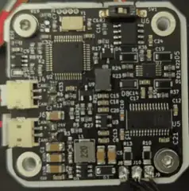 |
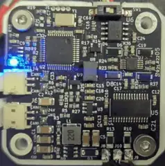 |
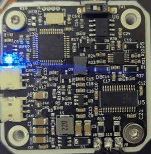 |


STEPFOC and Spectral Micro¶
STEPFOC and the Spectral Micro BLDC driver are sister drivers: similar hardware and similar firmware, each made for its kind of motor. The Spectral Micro drives three-phase brushless motors; STEPFOC drives two-phase stepper motors. They are not the same board and do not run the same firmware, but they are controlled and run practically the same way: the same CAN and UART commands, the same Python library, Motor GUI and bootloader.
What this means in practice:
- The commands are practically the same. The CAN messages and UART commands of the Reference have the same IDs, names and layouts on both drivers; STEPFOC adds a few that only make sense on a stepper (homing against a sensor, open-loop stepping). A program written for one runs on the other.
- The firmware releases go in step, and from 109 share their numbers. A change that applies to both drivers comes to both. From release 109 they are released together under the same version number; the Spectral Micro went from 107 straight to 109, so there is no Spectral Micro 108. Before, the numbers did not always match (STEPFOC 108 went with Spectral Micro 107); the compatibility table lists the pairs.
- Calibration differs. A BLDC driver measures the motor's resistance and inductance and finds its pole pairs;
STEPFOC cannot, so you enter the three values from the motor's datasheet before calibrating. See
Motor parameters and calibration. From firmware 109
#Calis followed by the encoder table and the anti-cogging on both drivers. - Some defaults differ. Each driver's were measured on its own bench: the direct PLL speed estimate at 60 Hz and 166 µs delay compensation here, 100 Hz and 234 µs on the Spectral Micro; velocity gains 0.02 / 0.001 here, 0.03 / 0.0003 there. STEPFOC brakes in idle by default, the Spectral Micro coasts.
- The motor terminals differ. A+, A−, B+, B− for the two stepper coils instead of U, V, W.
- Some images on this site show a Spectral Micro. Where a photo or a screenshot shows the BLDC board, the procedure is the same for STEPFOC.
The guides under the Guides tab were written with the Spectral Micro; the code in them runs unchanged on STEPFOC.
What you need¶
This page lists what a STEPFOC setup is made of, what comes with the driver, and what you buy or make yourself.
The driver¶
STEPFOC is sold as a single driver or as a starter kit in the Source Robotics shop:
- STEPFOC stepper driver
- STEPFOC starter kit, which adds the adapters, the magnet, the cables and a thermistor listed below
Every driver is end-of-line tested and ships with the current firmware release and the bootloader already installed, so a driver works out of the box with a serial terminal, the Python library or Motor GUI. The firmware can be updated later without a programming adapter; see Firmware.
A stepper motor¶
STEPFOC drives bipolar (4-wire) stepper motors. It is made for the NEMA 17 frame, whose mounting holes match the board; it also works with NEMA 23 motors on the NEMA 23 spacer, and with other frames on an adapter you make. Look for a motor with a phase resistance of 1 to 5 Ω and a rated current of 3 A or less; the tested motors are known to work.
The encoder magnet¶
A diametrically magnetised 6 × 2.5 mm neodymium magnet on the rear of the motor shaft, about 1 mm above the encoder chip in the middle of the board: 6 × 2.5 mm diametrical magnet. An axially magnetised magnet, or one that wobbles, makes calibration fail or report bad positions. The 6 × 2.5 mm size is the stock one, not a requirement: another thickness is a way to set the 1 mm gap when a shaft or a spacer leaves the wrong distance. The encoder magnet says how to fit it.
Adapters and cables¶
| Part | Needed for | Shop |
|---|---|---|
| USB-to-serial adapter (3.3 V) | the serial terminal: calibration, tuning, any # command |
Serial adapter |
| CANvas USB-to-CAN adapter | CAN control from a PC, the Python library, Motor GUI over CAN | CAN adapter |
| CAN cable and power cable | daisy-chaining several drivers | CAN cable, power cable |
| 100 kΩ NTC thermistor | motor temperature protection (optional but recommended) | Thermistor |
| JTAG programming adapter | only for installing the bootloader on an older board, or for firmware development | Programming adapter |
Cable orientation
The daisy-chain cables for CAN and power are keyed by their orientation, not by their connector. A cable plugged in the wrong way round destroys the driver. Use the cables from the shop or follow Power and the CAN daisy chain exactly when you make your own.
A power supply¶
12 to 29 V DC, 24 V recommended; see Ratings and limits. Calibrate at 24 V. From firmware 109 the motor constants no longer depend on the supply: the spins that measure them run at their own 6 V limit. A bench supply with a current limit is the safest way to start.
Software¶
- Motor GUI, in the browser, over the serial adapter or the CAN adapter: the usual tool for setup, calibration, tuning, plots and firmware updates; see Motor GUI.
- Or a serial terminal: PuTTY, the PlatformIO monitor in VS Code, or the Arduino serial monitor; see The serial terminal.
- The Python library
Spectral-BLDCfor CAN control from your own programs; see With Python.
Safety¶
STEPFOC is a bare circuit board that drives a motor from a supply of up to 29 V. Read this chapter before you connect anything; the few rules here are the ones that destroy a driver, a motor or a finger when they are ignored.
Electrical¶
Supply polarity
Reversing the polarity on DC+ and DC− destroys the driver at once. Check the polarity of every power cable before you plug it in, every time.
Cable orientation on the daisy chain
The CAN and power cables that link one driver to the next are keyed by their orientation, not by their connector: a cable plugged in the wrong way round puts the supply on the wrong pins and destroys the driver. Use the cables from the Source Robotics shop, or make yours exactly as shown in Power and the CAN daisy chain.
UART is 3.3 V
The UART port runs at 3.3 V. A 5 V serial adapter destroys the board. Use a 3.3 V adapter, such as the one from the shop.
Supply voltage
12 to 29 V DC. The driver raises a Vbus error below 9 V and above 29 V (#Vmax, 29000 mV after #Default),
and 29 V is also the hardware limit: do not connect a supply that can rise above it, and allow for the voltage a
decelerating motor pushes back into the supply. A bench supply with a current limit is the safest way to start.
Do not disconnect a running motor
Never unplug a motor, or a power cable in the daisy chain, while the driver is powered. The inductive kick of the coils and the arcing at the connector damage the driver stage.
Static electricity
Static electricity damages the microcontroller, the encoder chip and the driver stage. Unplug the supply and touch earthed metal before you handle the board, and hold it by its edges, away from the chips and the pads.
Mechanical¶
Moving parts
A calibrating or running motor turns without warning, in both directions, and the stepper in position mode pushes back hard against a hand. Keep fingers, hair and cables away from the shaft and whatever is mounted on it, fix the motor to the bench before the first test, and test without a load on the shaft.
A powered motor can move with nobody at it
The driver moves its motor whenever a command arrives, over UART or from any host on the CAN bus, and keeps
following the last one. From firmware 109 it also turns the motor by itself for about a minute after a
calibration, to measure the encoder table and the anti-cogging. A speed command goes on turning the motor after the program that sent it has crashed
or its cable has come out, unless the watchdog is set (Stopping the motor). Before you
reach for the motor or the mechanism it drives, put the driver in idle (#Idle, Send_Idle) or switch the
supply off.
The encoder magnet
The magnet sits about 1 mm above the encoder chip. A magnet that touches the chip, or sits far too close, can damage the microcontroller; a magnet too far away gives a wrong position. Mount it as described in The encoder magnet.
Hot motor and driver
A stepper running at its rated current gets hot enough to burn, and so do the driver's chips and the board
around them. Switch off and let both cool for a few minutes before you touch them. Set the current limit for
your motor
(Current limit and loop tuning), use the thermistor, and give the driver airflow when it
runs near 2.8 A. From firmware 109 #Ilim, the current limit of Send_Limits over CAN and the current
of a gripper move all stop at 2800 mA. A host must still keep them within the motor's rating.
Stopping the motor¶
Send_ESTOPover CAN, or#Idleover UART, stops the motor at once; the E-stop error stays until it is cleared.- Cutting the supply stops the motor as well; a stepper then holds nothing, so a vertical axis drops.
- The watchdog (Send_Watchdog) stops the motor by itself when the host stops talking. From firmware 109 its action can instead hold the position or let a joint down at a limited speed, for a set time at most, then brake or coast (The watchdog): while that runs the motor is still driven.
Nothing on the driver is a certified safety function. A machine that can hurt someone needs an emergency stop that cuts the motor supply, independent of the driver.
Firmware updates and programming¶
When you connect a programming adapter to the JTAG connector, disconnect the motor supply and the UART adapter first. Updating over the bootloader needs no adapter; see Firmware.
Liability¶
STEPFOC is sold as a component for people who build their own machines. Its hardware designs, firmware and this documentation are under development and may contain errors. Whoever builds a machine with it is responsible for its safe design, assembly and operation.
3. Technical data
Technical data¶
The numbers: ratings and limits, the connectors with their pinout, the dimensions, and the motors that have been tested with the driver.
In this chapter¶
Ratings and limits¶
Electrical¶
| Value | |
|---|---|
| Supply voltage | 12 to 29 V DC, 24 V typical |
| Vbus error limits (firmware) | below 9 V or above 29 V (#Vmax, 29000 mV after #Default) |
| Phase current, continuous | 1.5 A typical |
| Phase current, maximum | 2.8 A; needs good cooling and short bursts. #Ilim is clamped to 2800 mA, and from firmware 109 so is Send_Limits over CAN |
| Current limit, default | 1700 mA after #Default; calibration uses 1600 mA for its steps and, from firmware 109, puts the limit back |
| Power, maximum | 80 W |
| Power, idle | 0.3 W |
| PWM frequency | 25 kHz |
| Control loop frequency | 6250 Hz |
| Electrical frequency, maximum | 600 Hz |
| Current sensing | inline, both phases |
| Encoder | 14-bit magnetic, 16384 ticks per revolution, diametrical magnet 1 mm above the chip |
| UART | 3.3 V, 256000 baud by default (1 000 000 tested) |
| CAN | CAN 2.0, 1 Mbit/s, 11-bit identifiers, node IDs 0 to 13 (the bootloader reserves 14 and 15), 120 Ω termination by switch |
| Thermistor input | 100 kΩ NTC, 54.9 kΩ pull-down |
| ADDITIONAL2 | analog input or general-purpose input/output, 3.3 V |
| Driver stage protection | not monitored: the firmware reads no fault output of the driver stage, and its driver error flag stays 0 |
Polarity
Reversing the polarity on DC+ and DC− destroys the board.
Thermal and environmental¶
| Value | |
|---|---|
| Operating temperature of the board | −20 to 130 °C |
| Motor temperature limit (firmware, with the thermistor) | 75 °C by default (#Tlim), −20 °C minimum |
Mechanical¶
| Value | |
|---|---|
| Dimensions | 39 × 39 mm |
| Mass | 8 g |
| Mounting | the NEMA 17 pattern, 31 mm hole spacing; NEMA 23 motors with the NEMA 23 spacer, other frames with an adapter you make |
Firmware limits¶
| Value | |
|---|---|
| Position | signed 24-bit over CAN (±8.4 million ticks, ±512 revolutions), 32-bit internally |
| Speed | signed 24-bit over CAN, encoder ticks per second |
| Current setpoint | signed 16-bit over CAN, mA |
| Pole pairs accepted by calibration | 50, 75, 100 or 125 |
| Configuration | kept in the EEPROM with #Save / Send_Save_config |
The defaults of every setting are listed in the Defaults reference.
Connectors and pinout¶

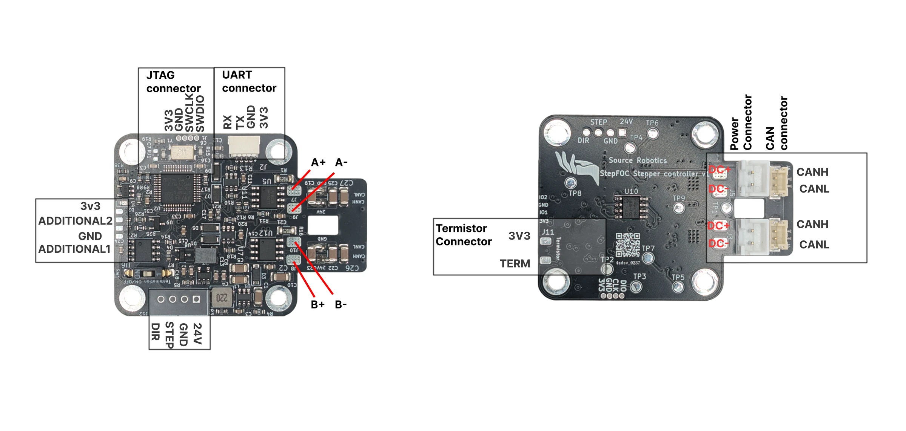
| Connector | Pins | Type | Cable |
|---|---|---|---|
| Motor | A+, A−, B+, B− | solder pads | the motor's own leads, see Wiring the stepper |
| Power, two of them | DC+, DC− | JST XH, 2 pins | Power cable; the second connector feeds the next driver |
| CAN, two of them | CAN L, CAN H | JST ZH, 2 pins | CAN cable; the second connector feeds the next driver |
| UART | 3.3 V, TX, RX, GND | JST SH, 4 pins | UART cable |
| Thermistor | NTC, NTC | JST SH, 2 pins | the 100 kΩ NTC from the shop or any 100 kΩ NTC |
| JTAG | 3.3 V, GND, SWCLK, SWDIO | pads, 1.27 mm pitch | Programming adapter, pressed onto the pads; the order is marked in Installing the bootloader |
| ADDITIONAL2 | signal, GND | pads | your sensor; the HALL homing mode reads this pin |
| STEP / DIR | STEP, DIR, GND, 24 V | header | hardware only: the firmware does not support a step/dir interface |
Polarity and orientation
DC+ to the positive supply, DC− to the negative; a cable the wrong way round destroys the driver. The daisy-chain cables have an orientation too: see Power and the CAN daisy chain.
Note
- UART is TX to RX and RX to TX between the driver and the adapter.
- The UART port and the ADDITIONAL2 pin are 3.3 V. 5 V on either destroys the board.
- The thermistor pin has a 54.9 kΩ pull-down; the firmware's temperature table is for a 100 kΩ NTC.
- The CAN termination switch is next to the CAN connectors; ON connects the 120 Ω resistor.
Dimensions and CAD¶
The board is 39 × 39 mm with the four mounting holes on the NEMA 17 pattern (31 mm apart), so it bolts to the back of a NEMA 17 motor with the motor's own screws and a spacer. The encoder chip is exactly in the middle of the board, on the motor shaft's axis.
Drag to turn the board, scroll to zoom. The model is the board's STEP file from the repository, the PCB and everything mounted on it.


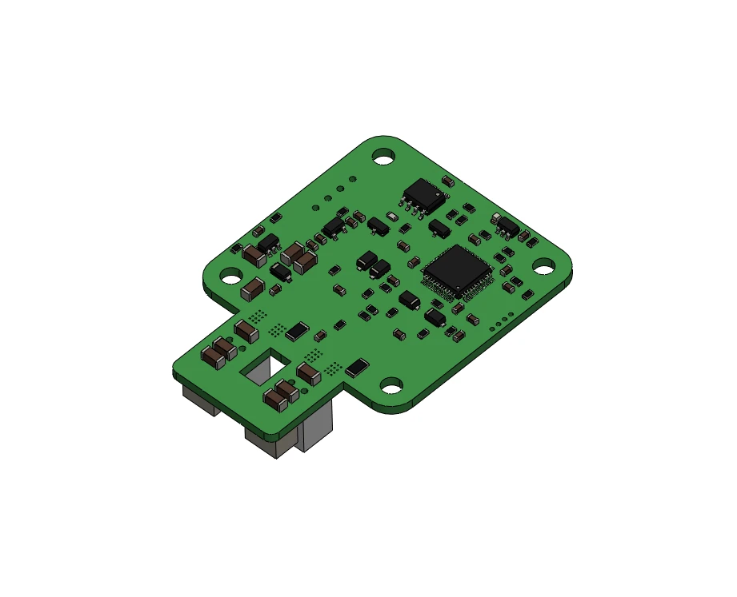
The STEP files of the board, the magnet spacers for different motor lengths and the tool for pressing the magnet onto the shaft are in the firmware repository:
- STEP files of the board
- Stepper motor accessories: magnet spacers, NEMA 17 spacers for different motor lengths, NEMA 23 spacers
- Tools: the magnet tool
Downloads and files lists everything that can be downloaded.
Tested motors¶
STEPFOC works with bipolar (4-wire) stepper motors whose phase resistance is 1 to 5 Ω and whose rated current is
3 A or less. The motors below have been run on it; the resistance and inductance are the datasheet values of one
coil, which is what you enter with #R and #L before calibration.
| Motor | Frame | Pole pairs | Phase resistance | Phase inductance | Rated current | Mass | ||
|---|---|---|---|---|---|---|---|---|
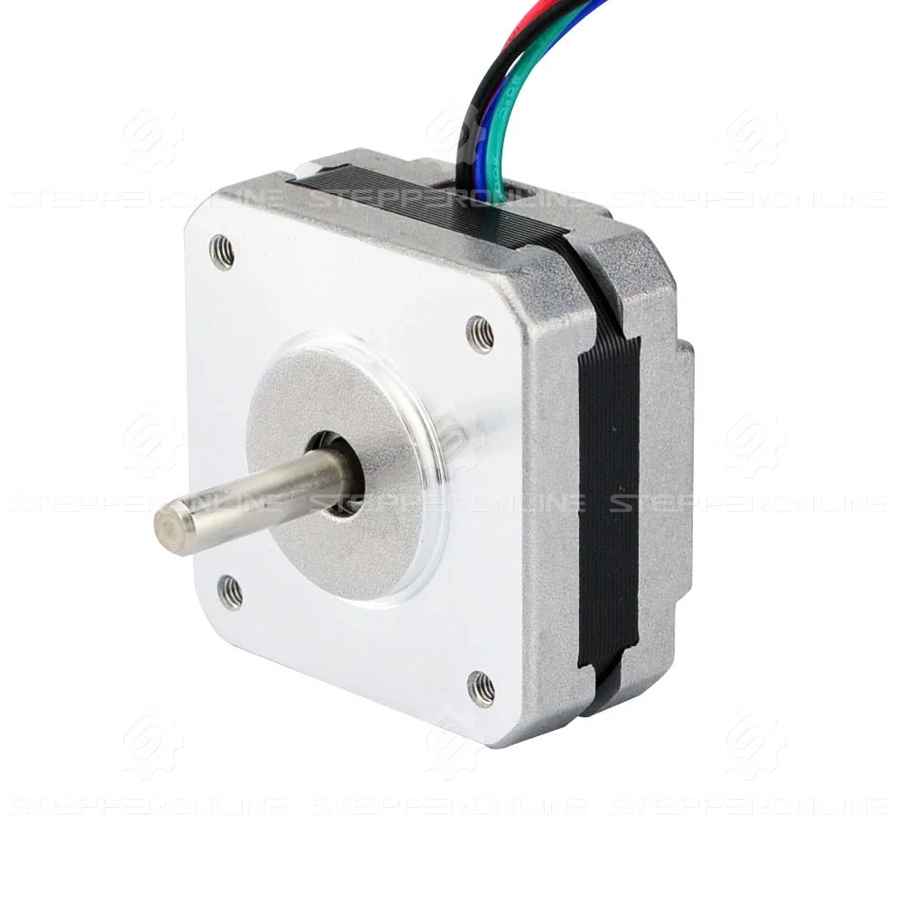 |
17HS08-1004S | NEMA 17, 20 mm | 50 | 3.7 Ω | 4.5 mH | 1.0 A | 140 g | Stepperonline |
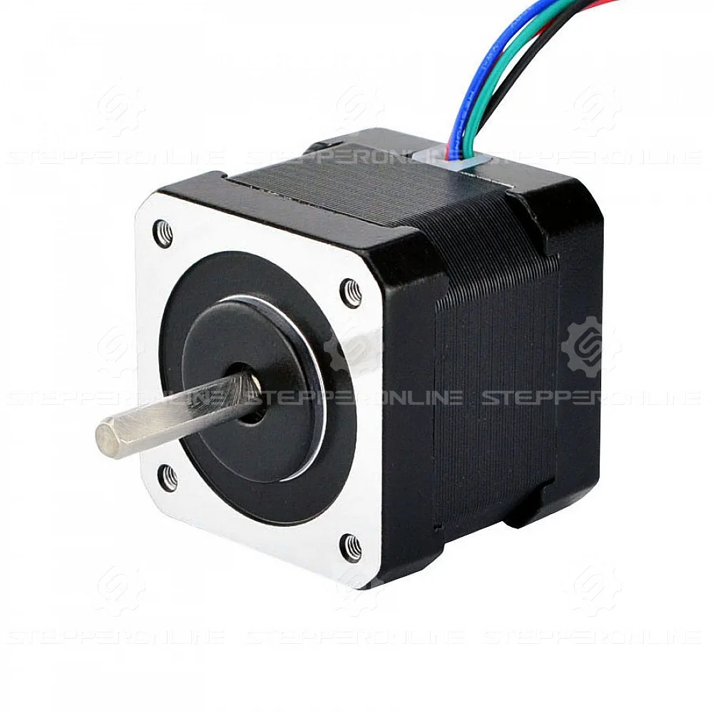 |
17HS16-2004S1 | NEMA 17, 40 mm | 50 | 1.1 Ω | 2.6 mH | 2.0 A | 310 g | Stepperonline |
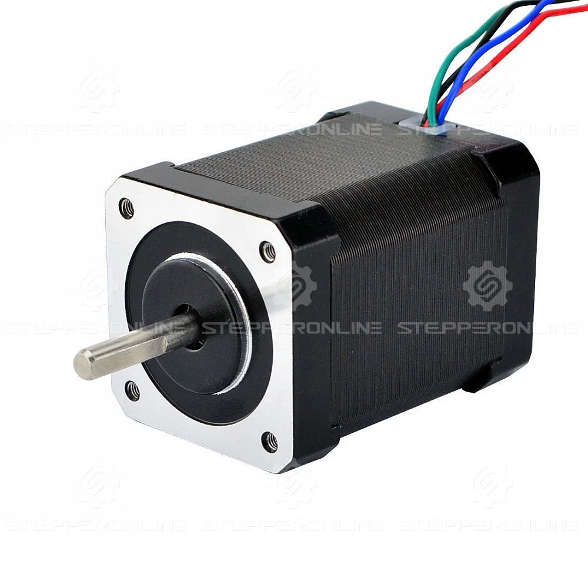 |
17HS24-2104S | NEMA 17, 60 mm | 50 | 1.6 Ω | 3.0 mH | 2.1 A | 500 g | Stepperonline |
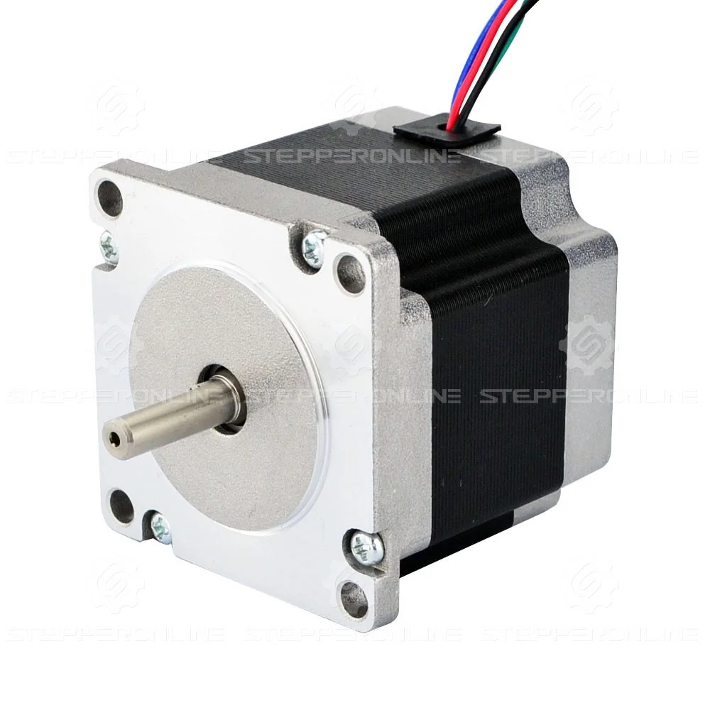 |
23HM22-2804S | NEMA 23, 56 mm, 0.9° | 100 | 1.16 Ω | 4.2 mH | 2.8 A | 700 g | Stepperonline |


Before calibration, set the current limit to the motor's rated current with #Ilim: it is 1700 mA after
#Default, more than the 17HS08's rating, and the encoder table that follows a calibration runs at 80 % of it.
Calibration uses its own 1600 mA for its steps and puts your limit back when it ends. See
Current limit and loop tuning.
Choosing a motor
A lower phase resistance and inductance give a higher speed at a given supply voltage; the velocity constant
KV that calibration finds tells how fast the motor can turn: roughly 0.8 × V × KV revolutions per minute,
where V is the voltage limit #Vlim (6 V by default) or the supply voltage, whichever is lower.
Motors with visibly uneven windings or a resistance that differs between the two coils calibrate badly.
4. Mounting and wiring
Mounting and wiring¶
How the driver goes onto the motor and what gets connected to it: the encoder magnet on the shaft, the board on the motor's back, the two coils to the motor terminals, the supply and the CAN bus, and the thermistor. Do the pages in order; the magnet first, because it is the one thing you cannot check from the outside later.

In this chapter¶
- The encoder magnet
- Mounting on the motor
- Wiring the stepper
- Power and the CAN daisy chain
- Thermistor
When all of it is done, continue with First setup.
The encoder magnet¶
The encoder reads a diametrically magnetised magnet on the rear end of the motor shaft. The magnet must sit centred on the shaft's axis, parallel to the board, about 1 mm above the encoder chip, and it must not move.

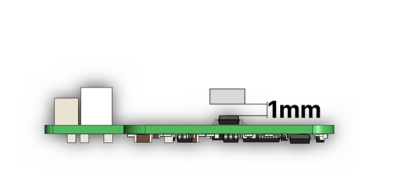
The magnet¶
A neodymium disc, diametrically magnetised (north and south across the diameter, not through the thickness). The shop's 6 × 2.5 mm diametrical magnet is the size the printed spacers are made for. An axially magnetised magnet looks the same and does not work: the magnet test may even pass, and the position is wrong.
The size is not fixed
6 × 2.5 mm is the stock size, not a requirement. Any diametrically magnetised disc of about 6 mm diameter works, and the thickness is a way to set the gap: a thicker magnet brings its face closer to the encoder, a thinner one farther, so with a shaft or a spacer that leaves the wrong distance you can pick the thickness that gives 1 mm instead of changing the spacer. What matters is the 1 mm from the magnet's face to the chip, the magnet centred on the shaft, and the diametrical magnetisation.
Fitting it¶
- The motor needs a rear shaft. Most NEMA 17 motors have one; a motor without it needs a magnet holder on the front shaft and a different mechanical layout.
- Press the magnet onto the shaft centred. The magnet tool in the firmware repository is a printed jig that centres it; a 3D-printed magnet spacer from Stepper motor accessories fits between the shaft and the magnet when the shaft is too short.
- Fix it with a drop of glue. A magnet that can turn on the shaft is the classic cause of a calibration that reports success and a motor that then runs badly: the magnet slipped between calibration and use.
- Check the height after the board is mounted: with the spacer for your motor length, the gap is 1 mm. A magnet that touches the chip can destroy the microcontroller; a magnet 2 mm away or more gives a weak signal.
Checking it¶
With the driver powered and the serial terminal open, #Magnet answers Magnet Good when the chip sees enough
field, Magnet Bad when it does not. The calibration routine runs the same test first.
What the magnet test checks
Only that a magnet is close enough to the encoder. It passes with a magnet that is not glued, sits off-centre or can slip on the shaft, and fails only when there is no magnet or it is too far away. The 1 mm gap, the centring and the glue are yours to check.
Mounting on the motor¶
The board has the NEMA 17 hole pattern (31 mm), so it mounts on the back of the motor with the motor's own four rear screws, with a spacer between the motor and the board that sets the magnet height.
- Remove the four rear screws of the motor. They hold the motor's end cap; it does not come apart when you remove them one at a time and put the spacer and the board on at once.
- Put the spacer on the motor. The firmware repository has printable spacers for common motor lengths in Stepper motor accessories (NEMA 17, a 21.5 mm NEMA 17 version, NEMA 23); for another motor, make a spacer that puts the board 1 mm above the magnet.
- Put the board on the spacer, encoder chip towards the magnet, and fit longer screws of the same thread (M3 on a NEMA 17). Tighten them evenly; the board must be parallel to the magnet.
- Check the gap: about 1 mm, the magnet not touching the chip.
A NEMA 23 motor takes the NEMA 23 spacer from the same folder. A smaller frame, such as NEMA 14, needs an adapter plate you make yourself: the repository has none.
The board is bare
Nothing on the back of the board may touch the motor's housing. Make sure the spacer keeps the board clear of the end cap, and keep metal swarf and screws away from the board while you work. Touch earthed metal before you pick the board up and hold it by its edges: static electricity damages its chips.
Wiring the stepper¶
A bipolar stepper has two coils and four wires. One coil goes to the terminals A+ and A−, the other to B+ and B−. Which coil is A and which is B does not matter, and neither does the polarity of each coil: firmware 105 and newer finds the wiring during calibration and compensates it.
Finding the two coils¶
On most stepper motors the colours give the pairs away: black and green are one coil, red and blue the other. The Stepperonline motors of Tested motors are wired that way: black to A+, green to A−, red to B+, blue to B−.
| Coil | Usual wire colours | Terminals |
|---|---|---|
| A | black, green | A+, A− |
| B | red, blue | B+, B− |
Not every maker follows it, so check with a multimeter on the resistance range: the two wires of one coil show the coil's resistance, a few ohms; two wires of different coils show no connection. Most datasheets also name the pairs (A/C and B/D, or the colours).
Soldering¶
- Cut the leads to a comfortable length: long enough to reach the pads with the board mounted, short enough not to get into the motor's shaft. If your firmware is older than 105 (see Releases and versions), leave them long enough to swap one pair later.
- Tin the leads and solder them to the pads: one coil to A+ and A−, the other to B+ and B−.
- Make sure no strand bridges two pads and that nothing touches the motor housing.
Warning
Never connect or disconnect the motor while the driver is powered.
Phase order and direction¶
Calibration spins the motor in open loop and watches the encoder. With firmware 105 and newer, a reversed coil is
detected and compensated in software (the firmware applies a reflection of the current frame, which is what a
physical swap would do), so the motor calibrates identically with any wiring, and positive commands turn the motor
counter-clockwise seen from the magnet side. With firmware 103, a reversed coil fails the open-loop step with
Open loop: Failed / Switch motor phases and try again!; swap A+ and A− and calibrate again.
Because calibration compensates the wiring, the positive direction is tied to the encoder: with firmware 105 and
newer, swapping the wires of a coil and calibrating again does not change it. The firmware has no setting that
reverses it (#Dir is stored but not used). If you want the other direction to be positive, negate the setpoints
and the position, speed and current you read back in your host program.
Power and the CAN daisy chain¶
Each driver has two power connectors (JST XH) and two CAN connectors (JST ZH). The second connector of each pair feeds the next driver, so a chain of drivers hangs on one supply cable and one CAN cable.

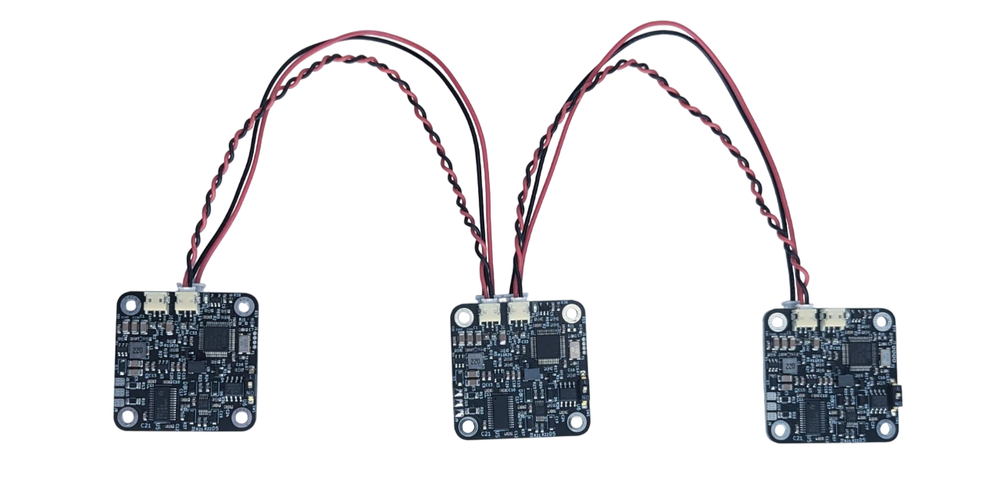
Power¶
- 12 to 29 V DC, 24 V recommended. DC+ to the positive supply, DC− to the negative; reversed polarity destroys the driver.
- The power connectors are rated for 4 A. A chain of drivers shares that: with motors at 1.5 A each, plan for at most two or three drivers per chain that draw their full current at the same time, and feed a longer chain from both ends or from several supplies.
- A motor that decelerates pushes energy back into the supply. A lab supply or a battery absorbs it; a supply that
cannot (some switch-mode supplies) sees its voltage rise, and the driver raises a Vbus error above 29 V
(
#Vmax).
The cable orientation¶
Danger
The daisy-chain cables are keyed by their orientation, not by the connector: the same 2-pin cable fits both ways, and the wrong way puts DC+ on DC−. Every cable must run as in the picture below, the same way at both ends. A wrong cable destroys the driver at the moment it is powered.

The cables from the shop are made this way: CAN cable, power cable, and all of them under connectors and cables.
CAN¶
- CAN 2.0, 1 Mbit/s, 11-bit identifiers. Up to 14 drivers on one bus, each with its own node ID, 0 to 13 (0 by default;
set it with
#CANIDor Send_CAN_ID and save). The firmware accepts 14 and 15 too, but the bootloader reserves them: a driver on one of those IDs cannot be updated over CAN. - Twisted-pair wire; keep the bus short at 1 Mbit/s (a few metres at most).
- Termination: the first and the last node on the bus need a 120 Ω resistor between CAN H and CAN L. The switch next to the CAN connectors turns the driver's resistor on (ON). Drivers in the middle stay off. A bus with the right termination measures about 60 Ω between CAN H and CAN L with everything unpowered.
- A PC joins the bus with the CANvas adapter, which has its own termination.

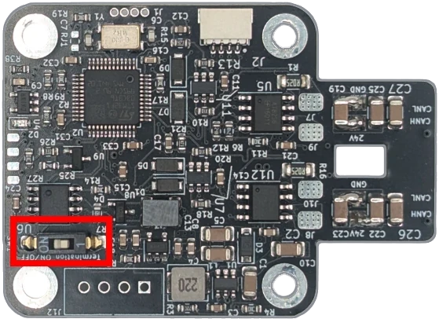
Thermistor¶
A 100 kΩ NTC thermistor on the motor lets the driver stop before the motor overheats. It is optional, and off by default; use it on any motor that runs near its rated current for long.
Without it, nothing protects the motor from overheating
The driver limits the current, not the temperature. A motor that runs continuously, holds a load for long, or is set up badly (a current limit above its rating, loops that oscillate, a wrong resistance or inductance) can overheat and burn its windings without any warning. With the thermistor fitted and enabled, the driver stops first. The starter kit includes one.

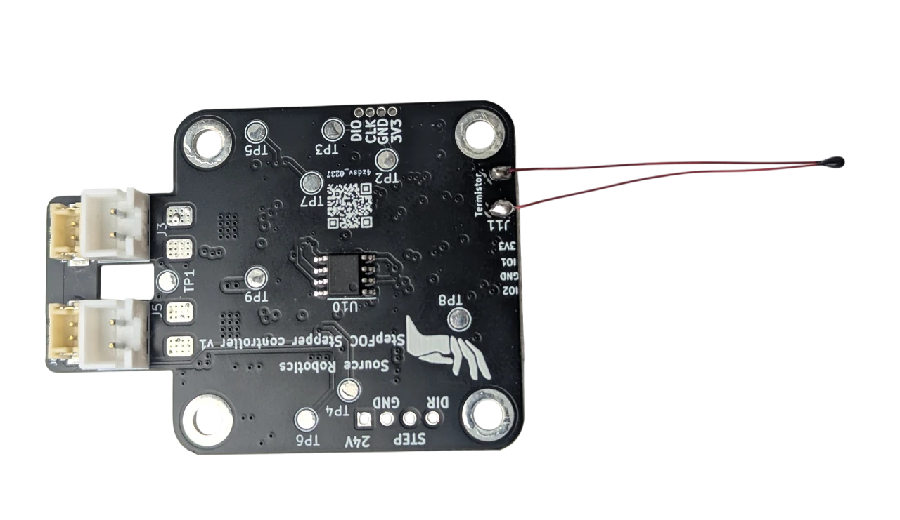
Fitting it¶
A stepper is sealed: the windings cannot be reached. Place the thermistor on the motor housing, as close to the windings as possible: either glued to the side of the housing, or in one of the four screw holes of the motor's bottom with the screw removed, which puts it deep in the stack. Thermal cement holds it and conducts the heat.

The housing lags behind the windings by some seconds, and reads lower. Set the limit with that in mind: the default of 75 °C at the housing corresponds to a hotter winding.
Enabling it¶
#Temp then prints the temperature; with the thermistor disabled it prints Temp Off. Above the limit the driver
raises a temperature error and stops; it clears with #Clear once the motor has cooled.
Over CAN, Send_Respond_Temperature returns the temperature, and the temperature error is one of the bits of Send_Respond_State_of_Errors.
5. First setup
First setup¶
From a mounted and wired driver to a calibrated, tuned motor. Motor GUI in the browser is the usual tool for it; every step also gives the terminal command, for a terminal or for the console in Motor GUI.
- Motor GUI: the browser, the serial adapter, opening the port, what is on the screen.
- The serial terminal: the alternative — PuTTY, the PlatformIO monitor or the Arduino monitor,
and the
#commands. - Motor parameters and calibration: the factory defaults, the motor's resistance, inductance and pole pairs, then the calibration run and what follows it.
- Encoder table and anti-cogging: the two corrections the driver measures on itself after a calibration, how to run them again and how to check them.
- Current limit and loop tuning: the current limit for the motor, the loop gains if the defaults do not suit it, the speed estimate and the delay compensation.
- Saving the configuration: nothing survives a power cycle until it is saved; where it is kept.
A driver that has been through these pages is ready for Operation. The Quick start is the same path on one page.
Motor GUI¶
Motor GUI is the usual way to set up, test and tune a driver: a tool in the browser that connects to one driver over the serial adapter or to a bus of drivers over the CANvas adapter, shows the state, moves the motor, runs the calibration, tunes the loops with live plots, records telemetry and updates the firmware. Nothing is installed. Everything it does, the driver also does from a terminal or from Python — the GUI reads and writes the same settings — so every procedure in this manual shows the GUI first and the terminal command beside it.
The browser¶
Motor GUI reaches the hardware through the browser's serial port access (Web Serial), which Chromium-based browsers have: Chrome, Edge, Brave, Opera. Firefox and Safari cannot open serial ports.
Two ways to connect¶
| Adapter | Use it for | |
|---|---|---|
| One driver over serial | the 3.3 V USB-to-serial adapter on the driver's UART connector, 256000 baud | the first setup and calibration (calibration runs over UART only), tuning on the bench |
| A bus over CAN | the CANvas adapter; it appears as a serial port and speaks slcan | every driver on the bus by its node ID: testing a machine, updating firmware on all joints |
Opening the port¶
- Plug in the adapter and the motor supply. The adapter alone powers the driver's logic, enough to open the port and read the settings, but the driver reports a Vbus error and will not calibrate or move until the supply is on.
- Open motorgui.com, choose the connection kind, and Connect. The browser asks which port; pick the adapter's.
- The driver's identity appears: hardware version, firmware version, serial number, batch date, whether it is
calibrated and activated, and the active errors: what
#Info,#SERNUMand#Errorprint in a terminal.
If the port is not offered, the browser is not Chromium-based, or another program holds the port (a terminal left open, PlatformIO's monitor), or the operating system does not give the browser the port:
The adapter is COM and a number. Device Manager lists it under Ports (COM & LPT): the entry that
disappears when you unplug the adapter is yours. An adapter that shows a warning sign there instead needs the
driver of its USB chip (on most 3.3 V adapters a CP210x or a CH340) from the chip maker.
The serial adapter is /dev/ttyUSB0 on most adapters, the CANvas adapter /dev/ttyACM0;
ls /dev/ttyUSB* /dev/ttyACM* lists them. To open them without root, join the dialout group once, then
log out and in again:
The serial adapter is /dev/cu.usbserial- and a few characters on most adapters, the CANvas adapter
/dev/cu.usbmodem and a number; ls /dev/cu.* lists them. Use the cu. name, not the tty. one, in a
terminal or a script.
The browser's port picker lists the same adapters. If the port opens and nothing appears: the driver is unpowered, or TX and RX are crossed on an adapter that is not the Source Robotics one.
What is on the screen¶
- State: the identity above, the control mode the driver is in, the errors, and Clear errors.
- Jog: Jog position, Jog velocity and Jog current move the motor in the matching control mode; Send setpoint sends a value in the current mode. Live stream while dragging follows a slider as you move it.
- Plots of position, speed and current, panning and zooming, with the value under the pointer.
- Settings: the motor parameters (pole pairs, resistance, inductance), the limits (current, velocity, voltage), the loop gains with Apply gains and Apply preset, the CAN node ID, the watchdog, the thermistor. The GUI marks Unsaved changes until you Save to the driver's EEPROM; Default restores the factory values.
- Calibration: starts
#Caland shows the driver's log step by step; afterwards the phase order and direction, Kt, KV and the flux linkage it found. - Telemetry: the stream from the driver, and recordings of it for a test or a bug report.
- Firmware update: the releases from GitHub, flashed through the bootloader; Scan bootloaders on a bus.
- Gripper: the gripper controls, for a driver in gripper mode.
- Console: type any
#command by hand; the answer appears below it. - Wiring diagrams and Keyboard shortcuts under help.
Screen guide¶

Figure 5.1: 1. Transport: choose UART for the serial adapter. 2. Baud: 256000 for a stock driver. 3. Connect: choose the adapter in the browser's port picker.

Figure 5.2: 1. Connection and node: confirm the intended driver. 2. State: calibration, activation and faults. 3. Command mode: setpoints and jog controls. 4. Live telemetry: measured position, speed and current. This screenshot uses Mock CAN (demo), not physical hardware.
Check
After connecting real hardware, the state and identity belong to your driver. If they do not appear, check the transport, the selected port, the supply and the TX/RX wiring before trying to move.
Try it without hardware¶
Open Motor GUI, choose Mock CAN (demo), and press Connect. The motor and gripper panels run in the browser without a port picker. Motor calibration (#Cal) still requires a real UART connection; the CAN demo does not perform it.
What next¶
Motor parameters and calibration is the first thing to do with a connected driver; Working in Motor GUI covers everyday use: moving the motor, the plots, recordings, several motors on a bus.
The serial terminal¶
Motor GUI is the usual way to work with the driver; a plain serial terminal is the alternative, and it is what
the console inside Motor GUI is. Everything in this manual that is done in the GUI is also one # command, and
the terminal shows the driver's answers exactly as it prints them, which is useful when something does not work.
The driver talks on its UART connector at 256000 baud, 8N1, 3.3 V. Any terminal that sends a line ending in CR+LF works.

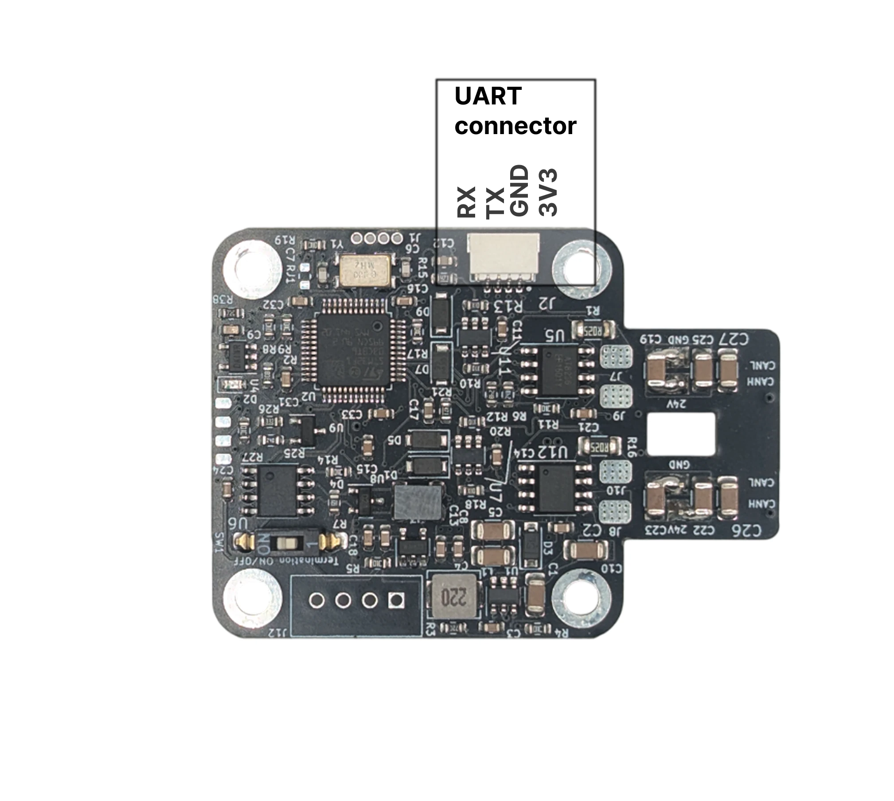
Connecting¶
- Plug the USB-to-serial adapter into the UART connector with the UART cable. With another adapter: 3.3 V only, and cross TX and RX: the driver's TX to the adapter's RX, the driver's RX to the adapter's TX.
- Connect the motor supply. The adapter's 3.3 V powers the driver's logic, so the driver answers over UART with only the adapter plugged in, but it reports a Vbus error and refuses calibration and every motion command until the 12 to 29 V supply is on.
- Find the adapter's port:
The adapter is COM and a number. Device Manager lists it under Ports (COM & LPT): the entry that
disappears when you unplug the adapter is yours. An adapter that shows a warning sign there instead needs the
driver of its USB chip (on most 3.3 V adapters a CP210x or a CH340) from the chip maker.
The serial adapter is /dev/ttyUSB0 on most adapters, the CANvas adapter /dev/ttyACM0;
ls /dev/ttyUSB* /dev/ttyACM* lists them. To open them without root, join the dialout group once, then
log out and in again:
The serial adapter is /dev/cu.usbserial- and a few characters on most adapters, the CANvas adapter
/dev/cu.usbmodem and a number; ls /dev/cu.* lists them. Use the cu. name, not the tty. one, in a
terminal or a script.
Danger
5 V on the UART pins destroys the board.
A terminal¶
PuTTY needs to send CR+LF when you press Enter, which the stock build cannot. Use the modified PuTTY: under Terminal → Keyboard select the CR LF option, then open the serial port at 256000.
| Keyboard setting | Session |
|---|---|
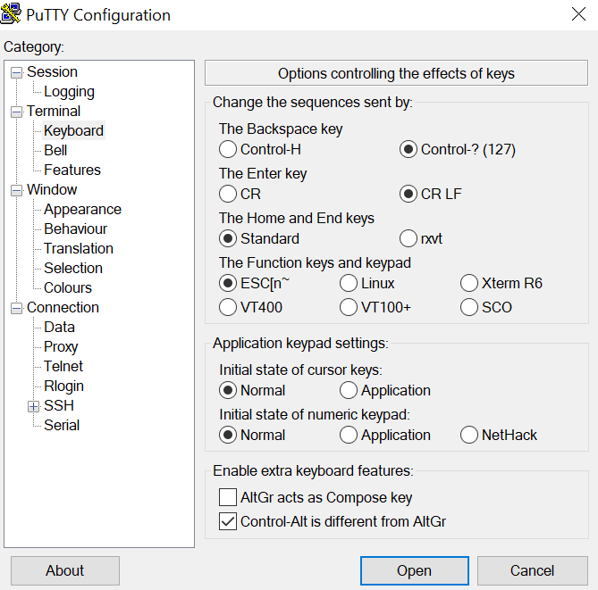 |
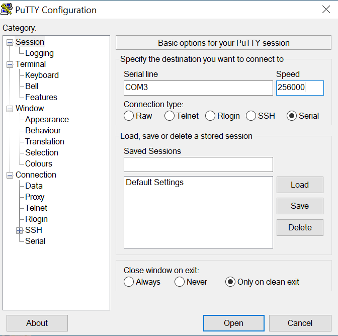 |


With the firmware project
open in VS Code with the PlatformIO extension, the serial monitor (the plug icon in the status bar) uses the
speed and the send_on_enter filter from platformio.ini, so a line goes out with CR+LF when you press
Enter.
| platformio.ini | The monitor |
|---|---|
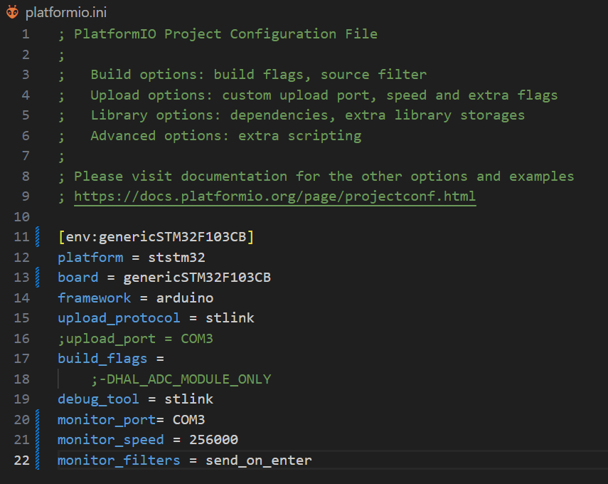 |
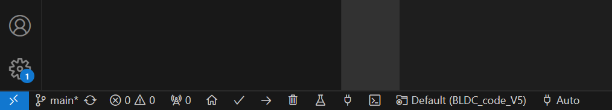 |


Select the adapter's port under Tools, any board (the monitor does not care), open the serial monitor, set 256000 baud and Both NL & CR as the line ending.
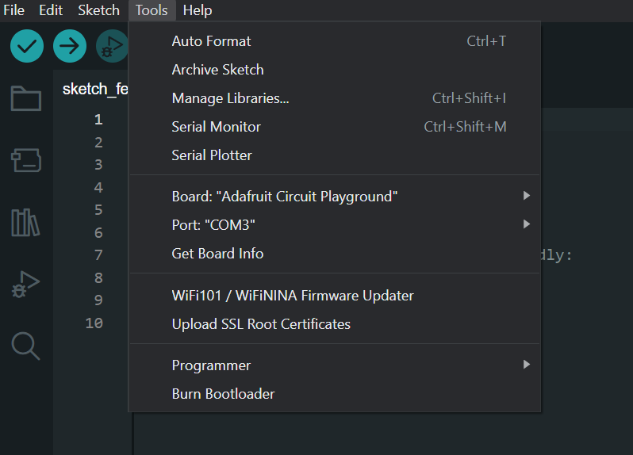

The first commands¶
prints the driver's identity and state: the hardware and firmware version, the CAN ID, the calibration state and
the motor parameters. #Help (firmware 106 and newer) prints a short command reference, #Error the active
errors, #Param the gains and limits.
Check
#Info answers with the driver's identity, the hardware and firmware version first. If nothing comes back:
the baud rate, the CR+LF line ending, TX and RX, see
The driver does not answer.
Every command starts with #, and a Set/Get command takes one number after a space: #P 16384 moves to position
16384; #P alone prints the position. Names are case-sensitive. The whole set is in the
UART commands reference, and Over UART explains the
protocol.
Motor parameters and calibration¶
Calibration teaches the driver its motor: it checks the magnet and the supply, takes the motor's resistance, inductance and pole pairs from you, computes the current loop gains, spins the motor in open loop to learn the direction of the wiring, finds the angle offset between the encoder and the motor's electrical zero, and measures the motor constants Kt, KV and the flux linkage. From firmware 109 two more runs follow by themselves, the encoder table and the anti-cogging, and then the driver saves everything. It runs once per motor; the result is kept by saving.
The motor turns
Calibration spins the motor in both directions, fast at times. Fix the motor to the bench and take everything off the shaft.
Supply voltage
Calibrate at 24 V. From firmware 109 KV and Kt no longer depend on the supply or on #Vlim: the spins that
measure them run at their own 6 V limit, and yours is put back afterwards.
1. Restore the defaults¶
The EEPROM of a new driver, or of one that ran another motor, can hold values that do not fit, such as another
motor's parameters. Calibration starts from what is there, so start from the factory values. (A damaged
configuration should not show up with firmware 106 and newer, which checks the stored blocks at power-up and
replaces a damaged one with the defaults; if #Info still shows -1 somewhere, restoring the defaults fixes it.)
This also resets the serial number, hardware version and batch date stored in the EEPROM, and clears an
encoder table and an anti-cogging set from another motor; note the hardware version and batch date #Info
prints if you need them. From firmware 109 the CAN node ID is kept. Saving the configuration says
what else it does.
2. Enter the motor parameters¶
STEPFOC does not measure the resistance and inductance of a stepper (the Spectral Micro does for a BLDC); you enter them from the motor's datasheet, as the values of one coil, and the pole pairs. Calibration fails on a value left at 0, and accepts only 50, 75, 100 or 125 pole pairs.
In the motor settings enter Pole pairs (50 for a 1.8° motor, 75 for 1.2°, 100 for 0.9°, 125 for 0.72°), Resistance in ohms and Inductance in henries, and apply them.
Parameters 78 (pole pairs), 76 (resistance in mΩ) and 77 (inductance in µH) hold the same values, for a host that sets a drive up over the bus: Send_Parameter(78, 50), Send_Parameter(76, 1100), Send_Parameter(77, 2600). The calibration itself runs over the serial port.

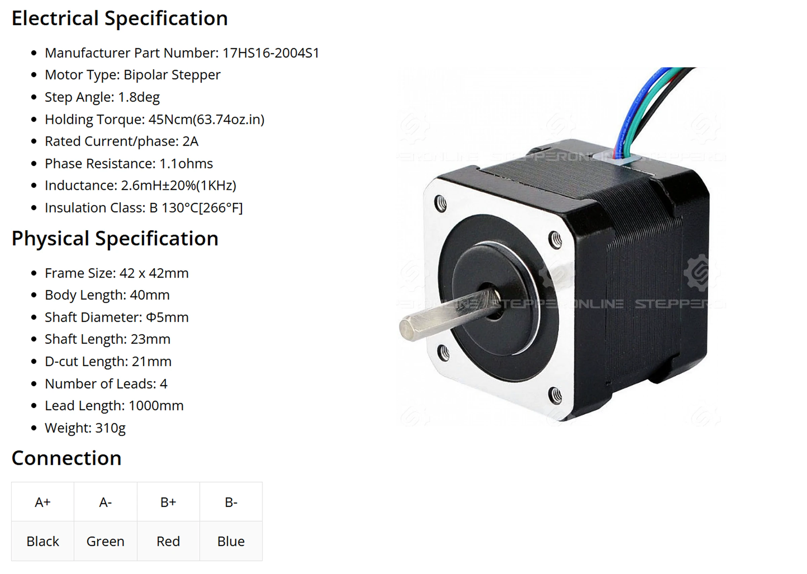
Calibration computes the current loop gains from R, L and the current loop bandwidth, 160 Hz by default:
Kp = ω·L and Ki = ω·R, with ω = 2π × the bandwidth. The firmware keeps Ki per control loop, so Ki_iq in the
log is about ω·R × 160 µs. Leave the bandwidth for now;
Current limit and loop tuning comes back to it. (Firmware 108 and older divided both gains by 7,
which gave a loop of about 70 Hz.)
3. Run it¶
The LED flashes fast while the routine runs, and the driver prints each step as it goes:
----------------
Calibration mode
----------------
Pole pair test: Passed
Magnet test: Passed
Vbus test: Passed
Resistance = 1.100000Ohm
Inductance = 0.002600H
Kp_iq = ...
Ki_iq = ...
Open loop direction: good
Calibrating angle offset... stage 1/13, sweep point 0
...
Angle offset is: ...
Alignment check: ... ticks/s, flipped ..., offsets ... / ...
Phase order is good!
KV is: ...
Kt is: ...
KV runs: ... ... ... ... (same direction within ... %)
Flux linkage is: ...
----------------
Calibration success!
Next, by itself: the encoder table, then anti-cogging (about a minute; keep the shaft free). Everything is saved when they finish (#Encal state, #Cogcal state)
Going to idle!
----------------
#Calonly runs the same calibration and nothing after it; it ends with Save config with #Save instead.
What the steps are:
| Step | What happens | Fails with |
|---|---|---|
| Pole pair test | the entered pole pairs are one of 50, 75, 100, 125 | Pole pair test: Failed and the list of values |
| Magnet test | the encoder sees enough field: a magnet is there and close enough. The test says nothing about centring, the gap or the glue | Magnet test: Failed: magnet missing, too far, or axially magnetised |
| Vbus test | the supply is within limits | Vbus test: Failed |
| Resistance, inductance | the entered values are not 0; they are printed back and Kp_iq, Ki_iq computed from them and the bandwidth | Resistance test: Failed / Inductance test: Failed, with Please enter your stepper resistance by using #R command |
| Open loop | the motor is stepped open loop at a fixed 5000 mV. The direction the encoder saw is remembered, so a reversed coil is compensated from here on | nothing in this firmware: the step always reports good, and a motor that did not turn fails the next step |
| Angle offset | a short spin checks that the motor turns (two tries, 90 electrical degrees apart); then the field locks the rotor and a sweep finds the offset at which both directions turn alike. It prints Calibrating angle offset... with its progress every half second |
Phase order is wrong! / Switch motor phases and try again!: the motor did not turn on either try. A line Spin-confirm delta: … ticks (need > 8192), Vbus: … mV says how far it turned and at what voltage. When the lock or the check after it fails instead, Angle alignment gave up: names the reason (it timed out, the rotor did not turn under current or the rotor turned the wrong way, also after flipping), followed by Check speed … ticks/s (need > 1000), flipped …, offsets … rad and Try again; if it repeats, check the motor, its wiring and that the shaft is free |
| Kt, KV, flux linkage | four spins from standstill at 500 mA, about a second each and alternately forward and back, at a 6 V limit; KV is the mean speed per volt, Kt follows as 8.27 ÷ KV and the flux linkage from Kt. KV runs: in the log shows all four and how far they agree |
nothing: KV runs differ by more than 5 %: calibrate again, and check that the shaft is free is a warning, and the calibration still succeeds |
A whole run takes up to about a minute, most of it in the angle-offset search. When a step fails, the log ends
with Calibration failed!, the driver goes to idle, the motor counts as not calibrated and the LED stays on
steadily. Nothing is saved; fix the cause and run #Cal again.
The 'Switch motor phases' message
It is left over from firmware 103, which needed the coils wired a particular way. Since firmware 105 the
wiring is detected and compensated, so Phase order is wrong! / Switch motor phases and try again! means the
motor did not turn or did not respond: a coil not connected or shorted, a supply too weak, or a magnet that
slips. Swapping wires does not fix it. (Open loop: Failed with the same advice cannot appear in this
release.)
The measured values are estimates
KV, Kt and the flux linkage come from one short spin and differ a little from one run to the next, more on motors with uneven windings. For the loops this does not matter; for a torque estimate in newton-metres, measure Kt yourself.
What follows the calibration¶
Half a second after Calibration success! of a #Cal the driver starts two runs on its own: the encoder table
(about 20 s), then the anti-cogging identification with the current-sense zero trim (about 25 to 70 s). When they
succeed, everything is saved.
The motor turns slowly, one turn forward and one back for each run, so keep the shaft free for about a minute
more; #Info shows running: … under In force: while they go. A command from a host (a motion command,
#Idle) stops them; then nothing is saved, and the calibration is kept only if you #Save it.
Encoder table and anti-cogging explains both and how to check them. #Cal always runs them;
#Calonly never does.
Set the current limit before you calibrate
The encoder table turns the field with a current of 80 % of the current limit, for about 20 s. Calibration uses
its own 1600 mA for its steps and puts the limit that was in force back when it ends, before the encoder table
runs; after #Default that is 1700 mA, about 1.4 A in the coils, more than a small motor is rated for. So set
#Ilim for the motor before #Cal (a Motor GUI preset does; known issue KI-19).
Not yet tested on the bench
The runs after a calibration and #Calonly were tested on the bench on 2026-11-10 (#Calonly 25 times on a
20 mm motor, #Cal with both runs on a 40 mm and a 60 mm motor). Parameters 76 to 79 and #Par came last in
firmware 109 and had not been tested on the bench when this page was written.
4. Save¶
After #Cal the driver saves by itself when the runs succeed; save anyway once they are done, or after
#Calonly. Without a save the calibration is gone at the next power cycle.
The driver goes to idle and the LED shows normal operation; the state shows Calibrated and the constants.
The current limit
Calibration uses its own 1600 mA for its steps. From firmware 109 it puts the limit that was in force back when
it ends, so a save stores your limit; firmware 108 and older left 1600 mA in force (known issue KI-2). If the
limit is still the 1700 mA of #Default, set it for your motor with #Ilim and save again
(Current limit and loop tuning).
Check
After a power cycle #Info prints Calibrated and the constants calibration found, and Motor GUI shows
Calibrated. Not calibrated means the save did not happen: calibrate and save again.
When to calibrate again¶
- After changing the motor, the magnet or the wiring.
- After restoring the defaults.
- After a firmware update that clears the calibration (a release note says so when it does).
A calibration that reports success but a motor that runs badly afterwards usually means the magnet moved on the shaft between calibration and use: fix the magnet and calibrate again.
Troubleshooting¶
| Message | Cause |
|---|---|
Magnet test: Failed |
no magnet, magnet too far (more than about 1.5 mm), or an axially magnetised magnet |
Vbus test: Failed |
supply off, too low, or the cable the wrong way round (if the driver survived it) |
Resistance test: Failed, Inductance test: Failed |
the resistance or the inductance still 0 |
Phase order is wrong! |
see the note above: the motor did not turn on the spin check; check the four wires and their solder joints, the supply and its current limit, and the magnet |
Angle alignment gave up: after Phase order is wrong! |
the lock or the check after it failed, and the line names the reason; run #Cal again, and if it repeats check the motor, its wiring and that the shaft is free |
Cal: not started, the E-stop is latched (#Clear first), or Stopped by an E-stop: #Clear, then calibrate again. after Calibration failed! |
an E-stop is latched or ended the calibration: #Clear, then #Cal; the alignment starts again from its first stage |
| the routine stops in a step and prints nothing more | reset the driver (#Reset) and try again; the angle-offset search prints a progress line every half second, so wait for a minute before you decide |
| success, but the LED stays on and no error is reported | should not happen with firmware 106 and newer, which replaces a damaged configuration block with the defaults at power-up. If #Info shows -1 somewhere, restore the defaults, enter the parameters and calibrate again |
#Calangle runs an angle-offset search on its own, with an older routine than the one #Cal uses: it gives up
after about two minutes and keeps the offset it reached. From firmware 109, when parameter 56 is not 0, the
anti-cogging is identified again afterwards and everything is saved, because the anti-cogging depends on the
offset. After a timeout nothing follows and nothing is saved. From firmware 109 #Calangle is refused while the
driver is in error: it prints Calangle: not started, the drive is in error (#Error, #Clear). After a change of
motor, magnet or wiring, run the whole #Cal instead.
Calibration runs over the serial connection only: a terminal, or Motor GUI over the serial adapter, not over CAN.
Encoder table and anti-cogging¶
Firmware 109 measures two corrections on the drive itself, with nothing but the motor on the bench: the encoder table, which corrects the small error of the encoder's angle reading, and the anti-cogging, a current that cancels the motor's own torque ripple. After a calibration both run by themselves (What follows the calibration); this page explains what they are, how to run them again, and how to check them.
The motor turns
Each run turns the motor one revolution forward and one back, slowly. Keep the shaft free: nothing on it and nothing it could drive. A mechanism that cannot turn a whole revolution, a gripper's racks for example, has to come off first.
The encoder table¶
The magnetic encoder reads the shaft angle with a small error that changes slowly around the turn: the magnet is never exactly on the axis, and the chip itself is not perfectly linear. On the bench NEMA 17 it was 0.65° peak to peak. The commutation multiplies it by the pole pairs, so on a 50-pole-pair stepper the field is up to 32 electrical degrees off at places, which costs torque and makes the current uneven around the turn.
To measure it, the driver turns the field open loop, one shaft revolution forward and one back at 2048 ticks/s (about 20 s), with a current of 80 % of the current limit holding the rotor to the field. At each 1/128 of a turn it records how far the encoder's angle is from the field's. Forward and backward are averaged, so friction, which pulls the rotor behind the field in each direction, cancels; the stepper's own pull towards its detents is left out by keeping only the harmonics 1 to 16 per turn. The result is a table of 128 corrections. From then on the encoder reading is corrected with it, and the electrical offset is moved by the table's mean error, so the commutation stays right.
A table over 4° peak to peak, or one that would move the offset by more than 60 electrical degrees, is rejected as implausible: the magnet is loose or far off its place.
Anti-cogging¶
A stepper pulls towards its detent positions, four times per electrical turn, and errors in the current measurement add a ripple once and twice per electrical turn. At low speed both show as a ripple in the speed and the position. Anti-cogging adds a current to the current setpoint that cancels it: a function of the electrical angle, added in velocity and position modes.
To find it, the driver runs in velocity mode at 1500 ticks/s (parameter 44), records the current the velocity loop asks for in 256 bins over the electrical angle for one motor revolution forward and one back, and averages the two directions, each without its mean, so friction drops out. From that it keeps two forms of the same correction:
- harmonics (parameter 37 = 1): the 8 largest of the harmonics 1 to 32 of the electrical angle, each a·cos(h·θ) + b·sin(h·θ) in mA;
- table (parameter 37 = 2): 256 values in mA over one electrical turn, interpolated between them.
The identification switches the harmonics on. On the bench both forms were equally good. Parameter 38 scales the correction from 0 to 200 % for experiments; 100 % is as identified.
The angle here comes from the encoder alone, without the calibration's offset. The part of the correction that
comes from the current measurement is tied to the motor's electrical angle, though, which the offset defines:
that is why #Calangle identifies the anti-cogging again.
The identification records the current the loops ask for, so it depends a little on the gains. After a large change of the current or velocity gains, identify it again.
The current-sense zero trim¶
The once-per-electrical-turn part of the anti-cogging is mostly an error of the current-sense zero (on the bench 1.6 mA of ripple per ADC count of zero error). The identification with the trim reads both zero errors from it, corrects the zeros, and identifies again on the corrected zeros. If the 1st harmonic did not drop by at least 30 % and is still above 2.0 mA, the zeros go back and the anti-cogging is identified once more without the trim; the state then reads 11, done without the trim. A 1st harmonic under 1.5 mA is left alone, and one run moves a zero by at most 30 counts. The trims (parameters 59 and 60, up to ±60 counts) are saved with the encoder table and added to the zero the driver measures at every start-up. On the bench drive the trim took the 1st harmonic from 8.8 to 0.2 mA in one run.
Running them¶
The driver must be calibrated and without an error. Both runs keep the CAN watchdog fed while they go, end by holding the position the shaft reached, and stop at once when a host sends a command (a motion command, Idle) or an error comes up; nothing is saved then. While a run turns the motor a capture is not armed, and during the anti-cogging run parameters 34 and 35 refuse a write: the runs use the capture's memory and the histogram.
| What | UART | CAN: Send_Parameter |
|---|---|---|
| the encoder table, used at once | #Encal |
52 = 1 |
| the encoder table, used and saved | #Encal save |
52 = 2 |
| the encoder table, then the anti-cogging with the trim, then save all | #Encal all |
52 = 3, or 43 = 3 |
| the anti-cogging, switched on | #Cogcal |
43 = 1 |
| the anti-cogging, switched on and saved | #Cogcal save |
43 = 2 |
| the anti-cogging with the trim | #Cogcal trim |
43 = 4 |
| the anti-cogging with the trim, saved | #Par 43,5 |
43 = 5 |
| stop a run | #Encal stop, #Cogcal stop |
52 = 0, 43 = 0 |
A save from a run is the whole configuration, as #Save writes it. After a change of the motor, the magnet or
its position, run the encoder table and the anti-cogging again, in that order, or calibrate again.
Two guards keep a correction from running on the wrong data: parameter 37 refuses 1 or 2 while no set is stored for that form, and an encoder table measured on its own (52 = 1 or 2) switches an anti-cogging set from before off, because that set was found on the uncorrected encoder; the anti-cogging state then reads 10 until it is identified again.
Checking them¶
#Info ends with what is in force:
In force:
encoder table: on, error 0.61 deg p-p
anti-cogging: on (harmonics), saved
current-sense zero trim: -1 / 5 counts
delay compensation: 166 us
speed estimate: direct PLL, 60 Hz
fast reading / fast PWM: on / on
input filter: off; integral deadband: off
after #Calangle (parameter 56): anti-cogging, then save
(here with the values the bench drive measured). While a run goes, a line running: encoder table or
running: anti-cogging identification follows. #Encal state and #Cogcal state print one run's state without
starting it; after a finished identification (state 3, or 11 without the trim) it also lists the harmonics.
Over CAN the same is in the parameters (the parameter table):
| Parameter | What it tells | On the bench NEMA 17 |
|---|---|---|
| 52 | the encoder table's state: 3 done, 4 aborted, 5 error or not calibrated, 6 the rotor did not follow, 7 rejected | 3 |
| 54, 55 | the table's error peak to peak and its once-per-turn part, 0.01° of the shaft | 61-65 (0.61-0.65°); two runs within 0.021° |
| 57 | how far the last table moved the electrical offset, 0.1° electrical | −25, then −1 on a second run |
| 43 | the anti-cogging state: 3 done, 11 done without the trim, 6 the shaft did not turn | 3 |
| 45 | the cogging current found, 0.1 mA rms | 71 (7.1 mA) |
| 62, 63 | the 1st harmonic before and after the trim, 0.1 mA | 88, then 2 |
| 59, 60 | the zero trims, counts | −1, 5 |
| 79 | the bits of what is in force, see What is in force |
With the anti-cogging on, the bench motor's speed ripple that repeats with the angle was 1.2 to 2 times smaller at 1500 to 6000 ticks/s, and the position ripple 1.9 to 2.5 times smaller. A free motor gains little from the encoder table in these numbers (its current varied 2.5 to 3 times less around the turn, but a free motor needs little current); a loaded one gains more.
Send_Buffer_Read reads the corrections themselves: kind 4 the encoder table (128 values in 1/16 count), kind 2 the harmonics, kind 3 the anti-cogging table (Respond_Buffer_Data).
When a run fails:
| State | Cause | What to do |
|---|---|---|
| 52 = 6, 43 = 6 | the rotor did not follow: the shaft is blocked, or the current is too low to turn it | free the shaft; for the encoder table raise the current limit (it uses 80 % of it) |
| 52 = 5, 43 = 5 | the driver was in error or is not calibrated | #Error, clear it, calibrate |
| 52 = 4, 43 = 4 | a command came first | run it again and send nothing meanwhile |
| 52 = 7 | the table is implausible | check the magnet: glued, centred, at the right distance (The encoder magnet), then calibrate |
| 43 = 8 | the encoder table of a combined run failed | parameter 52 says why |
Switching them off¶
| UART | CAN: Send_Parameter | |
|---|---|---|
| the encoder table off / on | #Encal off, #Encal on |
53 = 0, 53 = 1 |
| the anti-cogging off, harmonics, table | #Par 37,0, #Par 37,1, #Par 37,2 |
37 = 0, 1, 2 |
| how much of the anti-cogging | #Par 38, and the percentage |
38 = 0 to 200 (%) |
#Save keeps the switches with the corrections. #Default clears both corrections and the trims.
Spectral Micro
The Spectral Micro firmware 109 has the same encoder table and anti-cogging, but runs neither after a calibration until they are tested on its bench, and skips the zero trim. Its manual says more.
Current limit and loop tuning¶
Calibration leaves the driver with current loop gains computed for your motor and with velocity and position gains that suit a bare stepper. Two things remain: the current limit, which you must set for your motor, and the loop gains, which you tune if the defaults do not suit it. Motor GUI shows the motor's response on its plots while you change a gain, which is what makes tuning quick.
The current limit¶
Set the current limit to the rated phase current of your motor in mA (the datasheet value; the tested motors'
ratings are in Tested motors). It is 1700 mA after #Default;
calibration uses its own 1600 mA for its steps and, from firmware 109, puts your limit back when it ends. Set it
before you calibrate: the encoder table that follows a calibration runs at 80 % of it. #Ilim clamps the limit to
the driver's 2800 mA and takes the magnitude of a negative number. The
firmware does not trip on phase current by itself and does not monitor the driver stage. A limit above the motor's
rating overheats the motor.
Over CAN
From firmware 109 Send_Limits stops the current limit at 2800 mA, as #Ilim does, and ignores a negative
value. Firmware 108 and older stored it as sent (known issue KI-1). A host program must still keep it within
the motor's rating.
Crunching and whining sounds at speed usually mean the current limit, or the current loop gains, are too high.
The loops¶

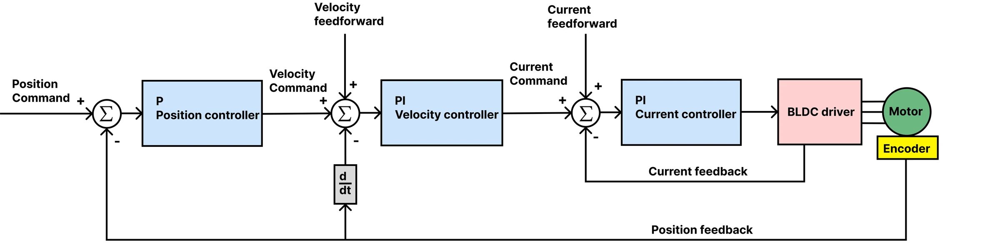
Tune from the inside out: the current loop first, then velocity, then position. Before you start:
- The motor must be calibrated and without active errors; the driver refuses the control modes otherwise.
- Fix the motor to the bench, nothing on the shaft. A loop that oscillates can shake a loose motor off the table.
- If the defaults oscillate, lower all gains until the motor is quiet, then raise them one at a time in small steps.
The gains are in the settings: change one, Apply gains, command a move with the jog controls and read the
response on the plots. Apply preset loads a starting set for a kind of motor: a product preset writes its
own current and velocity gains; the Generic motor presets set soft limits and velocity gains and leave the
current gains to #Cbw and the calibration. Apply a preset before you calibrate, so that the calibration
computes the current gains, and set the velocity gains after it. Save when you are done.
Each gain is a command: #Kpiq 0.5, #Kpv 0.02, …, then #Save. Command a move with #Iq, #V or #P
and judge the response by ear and by #Cyc 20, which streams position, speed and current.
The current loop¶
The current loop is a PI controller that turns a current request into a voltage. Its gains Kpiq and Kiiq
follow from the motor's resistance R, its inductance L and one number, the bandwidth: Kp = ω·L and Ki = ω·R, with
ω = 2π × the bandwidth. The firmware keeps Ki per control loop: Kiiq is about ω·R × 160 µs. For 1.1 Ω, 2.6 mH
and 160 Hz that gives Kpiq 2.70 and Kiiq 0.177. Do not enter ω·R as #Kiiq. The PI then cancels the coil's
own lag, and the current follows a request like a first-order filter at that bandwidth. Calibration computes
them this way at 160 Hz, the default; so does setting the bandwidth:
The bandwidth can be 10 to 625 Hz (a tenth of the 6250 Hz control loop). A higher one follows a request and
rejects a disturbance faster, and is louder; on the bench, 160 Hz followed an injected ripple better than the old
gains and stayed stable. Gains set by hand with #Kpiq and #Kiiq work too; parameter 49 then tells which
bandwidth they amount to.
Drives calibrated with older firmware
Firmware 108 and older divided both gains by 7, a loop of about 70 Hz. Their saved gains stay as they are
after an update to 109: parameter 49 reads about 71 Hz until the drive is calibrated again, or #Cbw 160 and
#Save are sent. See Upgrading from older firmware.
Test with a current setpoint of a few hundred mA (Jog current, or #Iq 300): the motor should push with a
steady, quiet torque. Keep the current well under the limit.
The velocity loop¶
The firmware's start values are Kpv 0.02 and Kiv 0.001, tuned on the bench with a bare NEMA 17 and the speed
estimate below: it vibrated at Kpv 0.056, and 0.02 is about half of that; Kiv rang at 0.004, and 0.001 halved
the speed ripple at 300 to 1500 ticks/s. #Default and a settings reset write the same values. A drive saved
with older firmware keeps its saved gains after an update (typically 0.007 and 0.0005): set #Kpv 0.02 and
#Kiv 0.001 and #Save (a 21.5 mm stepper overshot 95 % at these on the bench; its presets use #Kpv 0.014
and #Kiv 0.00014). To tune for your motor and load:
- Raise
Kpvuntil the motor vibrates at a steady speed command, then take about half of it. - Raise
Kivslowly until the speed rings after a change, then back off well below that.Kivis an integrator: too much makes the motor unstable, none leaves a steady-state error. - Test with a speed setpoint (Jog velocity, or
#V 20000; 16384 ticks per second is one revolution per second) and with different speeds.
A motor geared into a joint carries more inertia than a bare one and usually takes other gains; tune it in place.
The position loop¶
- Raise
Kppuntil the motor overshoots or oscillates when it reaches a target, then back off. - Test with a position step (Jog position, or
#P 16384and#P 0): one revolution and back. The response should be quick, without overshoot; the plot shows both.
Testing¶
Run the motor over the whole range of speeds and loads it will see, with a load if you can, and adjust. Then save.
The speed estimate¶
The velocity loop needs the speed, which the driver estimates from the encoder count. Parameter 50 picks how:
| Parameter 50 | Estimate | How it behaves |
|---|---|---|
| 0 | moving average of the last 20 count differences | about 1.5 ms late, in steps of 312 ticks/s: the old estimate |
| 1 | PLL, the speed is its integrator | smooth, a little late |
| 2 (default) | direct PLL, integrator plus the proportional term | almost no lag, a little more noise |
Both PLLs are critically damped at the natural frequency of parameter 51, 60 Hz by default (10 to 312 Hz). The
lag of the moving average was what limited the velocity gain: on the bench the direct PLL at 60 Hz allowed 40 %
more Kpv before the motor vibrated, and the speed ripple was 23 to 50 % lower at 1500 to 24000 ticks/s; its
extra noise did not reach the current. Calibration and the gripper's stop detection always use the moving
average, which they were tuned with. Both parameters are not kept by Save: every power-up starts with the direct
PLL at 60 Hz. The speed in Respond_data_pack_1 and Send_Respond_Encoder_data, the watchdog descend and the capture
is the picked estimate.
Commutation delay compensation¶
The voltage a control loop sets reaches the motor later than the angle it was computed from was read: the rest of the loop, the wait for the PWM update and half a control period. By then the rotor has turned on, and the voltage lands a little behind the angle it was meant for. Parameter 64 turns the output voltage forward by the angle the rotor covers in that delay, in the closed-loop modes above 100 ticks/s. 166 µs is the default, measured on the bench drive: the d-axis voltage against the cross-coupling the motor's inductance makes, at 12000 to 48000 ticks/s, fitted over 15 points. 0 switches it off; 1 to 500 µs are accepted. It is not kept by Save, so 166 µs is in force after every power-up.
The finer points of the velocity loop¶
Two settings for special cases, both off by default and not kept by Save:
- Position input filter, parameter 74 (Hz, 0 to 250). A host that sends positions at a fixed rate sends a staircase; without the speed the steps are all the loops see. The filter turns the staircase into a smooth path and makes its own speed from it, in position and PD modes. Use it only for a host that sends positions without the speed feedforward, at about the host's rate ÷ 12 (8 Hz for 100 Hz). On the bench it cut the tracking error of such a host from 1023 to 260 ticks at 12 Hz; with a host that sends the speed it made the tracking worse, so leave it off then.
- Velocity-integral deadband, parameter 75 (ticks, 0 to 2000). In position mode the velocity integral sees the position error less this band, so a holding motor stops pushing against a small error it cannot correct. It trades accuracy for holding current: on the bench 5 ticks took the holding current from 16 to 3.4 mA, and the mean error grew from 1.5 to 6.4 ticks.
Impedance (PD) mode¶

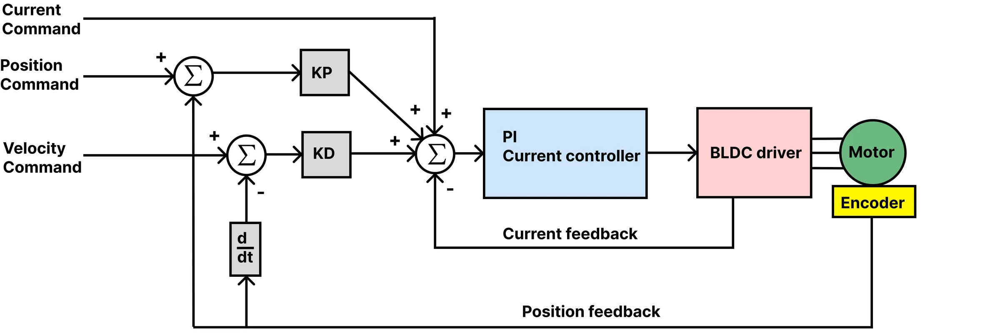
In PD mode the motor behaves like a spring and a damper: the current setpoint is
KP × (setpoint − position) + KD × (speed setpoint − speed) + feedforward current, in mA, with the position in
ticks and the speed in ticks/s. So KP is in mA per tick and KD in mA per tick/s.
Set KP and KD (the gains, or #KP, #KD, or Send_PD_Gains), then
command with #PD, #PDV and #PDI or Send_data_pack_PD. Start with a small KP and KD of 0, raise KP until
the motor holds position firmly, then add KD until it stops ringing. The theory corner
explains the loop.
Limits¶
- The velocity limit (
#Vlimit, 800000 by default) clamps the speed the loops may command, in encoder ticks per second. A rough maximum for your motor is 0.8 × V × KV × 16384 / 60 ticks per second, with KV from calibration and V the lower of the voltage limit and the supply voltage. - The voltage limit (
#Vlim) clamps the voltage of the current loops in mV. It is 6000 mV by default: a stepper's low resistance makes the current loop unstable with the full supply voltage, and the firmware's own guidance is 6000 mV for a phase resistance below 2 Ω. The limit also caps the top speed. 0, or a value above the supply voltage, uses the supply voltage. #Rstint 1resets the integrators on every new setpoint, which avoids windup when a program sends one setpoint after another with large steps.
Saving the configuration¶
Nothing you set survives a power cycle until you save it.
Saving writes the configuration to the EEPROM: the motor parameters and the calibration, every gain and limit, the CAN node ID (and the bootloader's board ID with it), the heartbeat and watchdog settings, the thermistor and LED settings and the gripper flag. From firmware 109 also the tool id and the watchdog fallback, the anti-cogging set with its mode and scale, and the encoder table with its on/off switch, parameter 56 and the current-sense zero trims. Over CAN, Send_Save_config does the same. Save after calibration, after tuning, and after changing the node ID. The runs after a calibration save by themselves when they succeed.
Some settings are not kept and start from their defaults at every power-up: the current loop bandwidth (#Cbw,
160 Hz; the gains it computed are kept), the idle behaviour (#Brake / #Coast or Send_Settings: brake), the
open-loop and calibration settings (#Openv, #Opens, #Vp, #Iqoffset, #microstep, #stepinterval), and
the parameters of firmware 109 that tune the loops: the speed estimate (direct PLL at 60 Hz), the commutation delay
compensation (166 µs), the fast reading and PWM paths (on), the sin/cos table (off), the position input filter and
the velocity-integral deadband (off), the anti-cogging identification speed, the d-axis current, and the capture
and histogram settings. The Defaults reference marks each setting, and the
parameter table says for every parameter whether it is kept.
A saved watchdog runs from power-up
With a watchdog saved (Send_Watchdog), the driver starts its count at power-up. A host that sends no motion frame or status request within the watchdog time finds the driver in watchdog error, and clears it with Send_Clear_Error. See Over CAN.
The serial number
This firmware does not read the serial number back from the EEPROM at power-up: #SERNUM reports 1 until it
is set, and every save writes the value held in RAM over the stored one.
The defaults¶
Restoring the defaults writes the factory values to the EEPROM and reloads them. It also sets the thermistor to
off, resets the serial number, the hardware version and the batch date stored in the EEPROM, and clears the
gripper flag, the heartbeat rate and the watchdog; from firmware 109 also the tool id, the watchdog fallback, the
anti-cogging set, the encoder table and its zero trims, and sets parameter 56 back to its default. The CAN node ID
is kept from firmware 109 (it is 0 only when no valid ID is stored); firmware 108 and older set it to 0. Note the
hardware version and batch date #Info prints before you use it. The defaults are listed in the
Defaults reference.
Use it before the first calibration of a motor, after a firmware update when the driver behaves oddly, and when
the state shows nonsense values (a -1 where a number should be). With firmware 106 and newer that should not
happen: the driver checks the stored configuration at power-up and replaces a damaged block with the defaults by
itself.
Where it is kept: the EEPROM¶
The configuration lives in an EEPROM chip on the board (a 24C16, 2 KB), apart from the firmware: flashing a new firmware never touches it, and only the firmware's check at power-up decides to reset a part of it. Since firmware 106 the configuration is in blocks, each with its own checksum; firmware 109 adds three:
| Block | Bytes | Checksum at | Holds |
|---|---|---|---|
| calibration | 60-188, reserved 212-236 | 208 | pole pairs, R, L, Kt, KV, flux linkage, angle offset, phase order, commutation direction, the current gains |
| settings 1 | 44-180 | 192 | CAN ID, limits, the other gains, watchdog, heartbeat, thermistor, LED, gripper flag |
| settings 2 (109) | 260-312 | 256 | tool id, watchdog fallback, the product stamp, the calibration ID; reserved slots |
| anti-cogging (109) | 324-879 | 320 | the harmonics, the table, mode and scale |
| encoder table (109) | 884-1147 | 880 | the table, its on/off switch, parameter 56, the current-sense zero trims |
At power-up a block whose checksum does not match is read again, up to three times. If it still does not match,
it gets its defaults, alone, and the others stay; a settings
reset keeps a valid CAN ID. A board saved by firmware 101 to 105, from before the checksums, is trusted when the
first 109 start finds anything it ever saved, and sealed with checksums then. The new blocks need the chip's upper
banks; on a smaller chip they keep their defaults in RAM and are not saved, which #Info says
(Settings block 2: not available, block 3 not available) and the identity frame's flag bit 3 shows. Going back
to an older firmware is safe: the first two blocks are unchanged, and older firmware ignores everything from byte
256 on. Upgrading from older firmware says what changes when you update.
What the driver reports¶
The state Motor GUI shows is what is in the EEPROM and what the driver measures. In a terminal it takes three
commands: #Info prints the hardware and firmware version, the CAN ID, the calibration state and the motor
parameters (pole pairs, resistance, inductance, Kt and KV), and from firmware 109 the build, the board ID and the
calibration ID, the tool id, the watchdog, the EEPROM blocks and, at its end, what is in force;
#Param prints the gains and limits; #Error the active errors.
They are the first thing to look at when something is off, and the thing to copy into a bug report.
Status and diagnostics explains the new lines.
6. Operation
Operation¶
How a calibrated driver is used: the control modes and what each one does, the two ways to talk to the driver and the two tools on top of them, what happens when something goes wrong, and gripper mode.
In this chapter¶
- Control modes
- Over UART
- Over CAN
- The watchdog: what the driver does when the host stops talking
- With Python
- Working in Motor GUI
- Errors and recovery
- Sound: tones, tunes and recorded sound through the motor
- Status and diagnostics: what is in force, the identity, telemetry, the loop time, captures
- Gripper mode
The exact layout of every message and command is in the API reference.
Control modes¶
The driver is always in one control mode. A command that carries a setpoint switches to the mode that uses it;
#Idle or Send_Idle switches back to idle. The driver refuses every mode except idle, open loop included, while it
is not calibrated or while an error is active.
stateDiagram-v2
[*] --> NotCalibrated: power-up, no saved calibration
[*] --> Idle: power-up, saved calibration
NotCalibrated --> Calibration: #Cal
Calibration --> Idle: success, #Save
Calibration --> NotCalibrated: a test fails
Idle --> ControlMode: a setpoint
ControlMode --> Idle: #Idle, Send_Idle
ControlMode --> Error: a fault
Idle --> Error: a fault
Error --> Idle: #Clear, cause goneA setpoint is #P, #V, #Iq, #PD or a CAN motion frame, and a new setpoint switches the mode without
passing through idle; a fault is any of the errors on Errors and recovery.
| ControlMode | What the motor does | Entered by | Setpoint unit |
|---|---|---|---|
| Idle | nothing: brakes (phases shorted), the default, or coasts (phases open), as set by #Brake / #Coast or Send_Settings; see Braking in idle |
#Idle, Send_Idle, #Clear, errors |
— |
| Position | holds and moves to a position with the cascade of position, velocity and current loops | #P, Send_data_pack_1 (8 bytes) |
encoder ticks |
| Velocity | turns at a speed with the velocity and current loops | #V, Send_data_pack_1 (5 bytes) |
encoder ticks/s |
| Current (torque) | applies a current, so a torque, with the current loop alone | #Iq, Send_data_pack_1 (2 bytes) |
mA |
| PD (impedance) | behaves like a spring and a damper around a position, with KP and KD |
#PD, Send_data_pack_PD |
encoder ticks |
| Voltage torque | applies a voltage on the q axis directly, without the current loop: clamped to #Vlim, not current-limited |
#Uq |
mV |
| Open loop | steps the motor like a plain stepper driver, without the encoder and without a current limit; see Open-loop stepping | #Openloop (continuous), #gosteps (a number of microsteps) |
electrical rad/s; microsteps |
| HALL | spins until a sensor on ADDITIONAL2 triggers, then holds the position reached; with a level trigger only while the pin stays at that level | #HALL, Send_data_pack_HALL |
encoder ticks/s |
| Gripper | runs the gripper state machine: move to a jaw position with a speed and a current limit | #Grippos, Send_gripper_data_pack (with #Gripper 1) |
0 to 255 |
| Calibration | the calibration routine, and the angle-offset step alone | #Cal, #Calangle, #Gripcal |
— |
Braking in idle¶
In idle the driver brakes: it keeps both coils shorted through the driver stage, so the motor resists being
turned. It does so at every power-up, and also with an error, which puts the driver in idle. #Coast (or
Send_Settings over CAN) lets the motor coast instead, with the coils open, until the next power-up: #Save does
not keep it. #Brake brakes again.
The braking current is not limited
A motor that is turned while it brakes drives its own back-EMF current through the shorted coils, and the
current loop does not limit that current. Do not let a load drive a braking motor fast; send #Coast first
when the shaft must turn freely.
Units¶
- Position is in encoder ticks: 16384 per revolution of the motor shaft, counting up without limit over several revolutions. Positive is counter-clockwise seen from the magnet (the back of the motor).
- Speed is in encoder ticks per second: 16384 is one revolution per second, 60 rpm.
- Current is in mA. Torque is current times the motor's Kt, which calibration finds.
- Feedforward: the 8-byte motion frame carries a speed and a current feedforward beside the position, the 5-byte one a current feedforward beside the speed. They are added after the loops, so a host that knows the trajectory can command it directly and leave the loops to correct the rest. Send 0 when you do not use them.
Try it¶
As a position: 1.000 turns, 360.0° · as a speed: 60 rpm · the practical maximum for 50 pole pairs is about 720 rpm
Torque: 0.21 Nm, 21 N·cm
The units of this page, with your numbers: 16384 encoder ticks per turn, the practical speed limit from the electrical frequency the control loop can follow (Ratings and limits), and the torque as Kt times the current.
Open-loop stepping¶
#Openloop and #gosteps drive the coils like a plain stepper driver, without the encoder in the loop. Like every
other mode, they need a calibrated driver without errors.
#Openloop 50turns the field at 50 electrical rad/s and keeps turning until another command. On a motor with 50 pole pairs that is 50 ÷ (2π × 50), about 0.16 revolutions per second.#gosteps 64makes 64 microsteps, then goes to idle; a negative number goes the other way.#microstep(16 by default) is the number of microsteps per electrical cycle, which is four full steps: with 16,#gosteps 16turns a 1.8° motor by 7.2°.#stepinterval(1000 µs by default) is the time between two microsteps, rounded down to whole control cycles of 160 µs.#Openv(5000 mV by default) is the voltage both put on the coils.
None of these settings is saved.
Open loop is not current-limited
Open loop applies a voltage, not a current, and #Ilim does not apply. At standstill and low speed the coil
current is about #Openv ÷ R: the default 5000 mV drives about 4.5 A through a 1.1 Ω coil, more than the
driver's 2.8 A and the motor's rating. Set #Openv to the rated current × R first (2 A × 1.1 Ω = 2200 mV), and
keep the test short.
Positive rotation¶

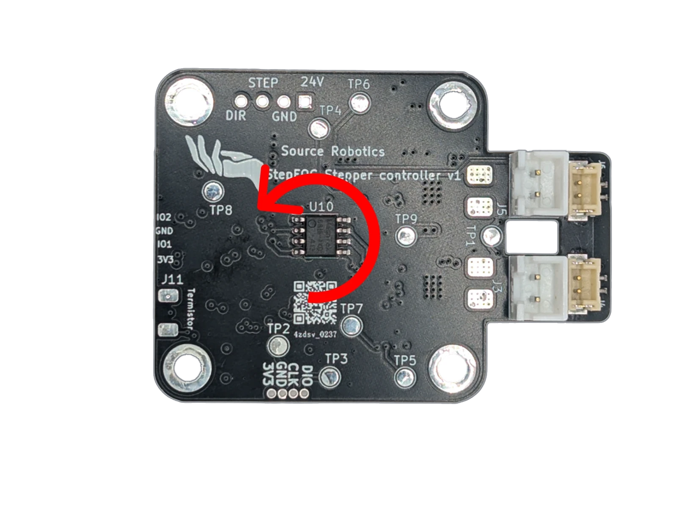
Which mode am I in?¶
#Mode prints the mode: Idle mode, Position control, Speed control, Current control, PD control,
Open loop, Gripper mode or Gripper calib mode. In this firmware release the voltage-torque mode reads
Gripper mode too (a leftover label), and HALL mode, the angle-offset search (#Calangle), open-loop steps
(#gosteps), gripper mode and the encoder-table run print nothing. The behaviour of the motor is the reliable check there.
Over UART¶
The serial port is the interactive way to use the driver: you type a command, the driver answers in text. It is the only way to calibrate, and the quickest way to try a setting. For real-time control of several motors use CAN.
The protocol¶
A command is #, a name, optionally a space and one argument (a number, a word, or numbers separated by commas),
and a line ending:
- The name is case-sensitive and matches the firmware's spelling exactly (
#Kpiq, not#kpiq); at most 19 characters, the argument at most 19 characters and without spaces (#WdFb 2000,0,1000,2). Firmware 108 and older allowed 20 characters for both together. - The line ends with LF (
\n); a CR before it is accepted. Terminals send CR+LF when you press Enter, with the setting described in The serial terminal. - A Set/Get command with a number sets the value and prints it; without a number it only prints it.
#P 16384moves to position 16384 and prints the position;#Pprints the position. - An action command takes no number:
#Cal,#Save,#Idle. - A name the driver does not know is answered with
Unknown command(firmware 106 and newer). In firmware 108 and older a few names the parser accepted had no handler and got no answer; from 109 a name is either a command or answeredUnknown command. - 256000 baud, 8N1, 3.3 V.
The driver only answers¶
The driver never sends anything on its own, except with the cyclic commands: #Cyc 100 makes it print position,
speed and Iq every 100 ms as $ <position> <speed> <Iq> (for BetterSerialPlotter), #Cyca 100 as
Position:x,Speed:y,Iq:z (for the Arduino plotter); #Cyc or #Cyca without a number stops it.
Typical sessions¶
A first test after calibration:
#Ilim 1500 current limit for the motor
#V 16384 one revolution per second
#V 0
#P 0 back to the start
#Idle
Tuning:
Status:
Every command is in the UART reference, grouped by what it does.
Over CAN¶
CAN is the interface for running a machine: compact frames, a fixed cost per message, up to 14 drivers on one bus, and a host that can be a PC, a microcontroller or a robot control box. The driver answers a motion command with its position, speed and current in the same frame exchange, so a control loop on the host needs one frame out and one frame back per motor and cycle.
The frame¶
CAN 2.0 data frames with 11-bit identifiers at 1 Mbit/s. The identifier carries the node, the command and the error state:


- Node ID, bits 10 to 7: which driver, 0 to 15. A driver acts only on frames with its own node ID and sends
with it. Set it with
#CANIDor Send_CAN_ID and save; every driver ships as node 0. Use 0 to 13: the bootloader reserves 14 and 15, and a driver on one of those cannot be updated over CAN. - Command ID, bits 6 to 1: which message, 0 to 63. The CAN reference lists all of them.
- Error bit, bit 0: in a frame from the driver, 1 while any error is active. In a frame from the host it is ignored.
So a host sends Send_data_pack_1 (command 2) to node 3 with the identifier (3 << 7) | (2 << 1) = 0x184, and the
driver answers with command 3 under (3 << 7) | (3 << 1) | error. A lower node ID wins the bus arbitration.
Multi-byte values are big-endian: the most significant byte is in data[0] and goes first. Floats are IEEE 754 single precision. Flags inside a byte are numbered from the most significant bit.
Three kinds of message¶
- Send_…: the host sends data. Some of these are answered (a motion command with Respond_data_pack_1, the gripper command with Respond_Gripper_data_pack); most are not.
- Send_Respond_…: the host asks for data with a remote frame (the RTR bit set, no data) carrying the command ID; the driver answers with a data frame with the same command ID.
- Respond_…: frames only the driver sends: the answers above, and the heartbeat.
A control loop¶
Send Send_data_pack_1 at a fixed rate, 100 Hz to 1 kHz, with the setpoint for this cycle; read Respond_data_pack_1 for the position, speed and current of the last cycle. Every valid motion frame, and every request the driver answers, resets the watchdog; the setting frames (gains, limits, Idle, Clear, Send_Parameter) do not. So with Send_Watchdog set to a few cycle times the motor stops when the host stops; from firmware 109 it can also hold its position, brake, coast or let a joint down slowly (The watchdog). A watchdog kept with Send_Save_config runs from power-up: a host that does not start its loop within the watchdog time finds the driver in watchdog error, and clears it with Send_Clear_Error. The heartbeat is the other way round: Send_Heartbeat_Setup makes the driver send a frame on its own every N ms when it has nothing else to send, so the host can see it is alive.
sequenceDiagram
participant H as Host
participant D as Driver
H->>D: Send_Clear_Error
H->>D: Send_Watchdog: a few cycle times
H->>D: Send_Heartbeat_Setup: every N ms
loop every cycle, 100 Hz to 1 kHz
H->>D: Send_data_pack_1: the setpoint, with the feedforwards
D-->>H: Respond_data_pack_1: position, speed, current, the error bit
end
D-->>H: heartbeat, whenever nothing else was sent for N ms
Note over D: no motion frame or status request within the watchdog time: watchdog error, the motor stopsParameters, identity and telemetry¶
From firmware 109 a host can also:
- set and read any setting by its number with Send_Parameter and Send_Get_Parameter (IDs 36 and 37, the answer on 38), including the gains and limits in force, which it could not read back before (Parameters and buffers);
- ask a drive what it is with Send_Respond_Identity (ID 39): product, tool, firmware release, pole pairs, whether it is calibrated;
- poll temperature, supply voltage, errors and current in one frame with Send_Respond_Telemetry (ID 40);
- record signals inside the control loop and read them with Send_Buffer_Read (ID 41) (Status and diagnostics).
From a PC¶
The CANvas adapter shows up as a serial port and
speaks slcan; python-can opens it with bustype='slcan'. The Python library wraps the whole protocol, see
With Python. Any CAN adapter that python-can supports works the same way.
Several drivers¶
Give each driver its own node ID before you put them on one bus (a bus with two node 0s cannot tell them apart):
connect one driver at a time over UART, #CANID 3, #Save. Terminate the first and the last node, and wire the
daisy chain as in Power and the CAN daisy chain.
The watchdog¶
The watchdog stops the motor when the host stops talking: a host program that crashes, a cable that comes out, a USB adapter that hangs. It is a timer in the driver. Every valid motion frame and every request the driver answers starts it again; when it runs out, the driver raises the watchdog error and does what its action says. From firmware 109 the action can hold the position, brake, coast, or let a joint down slowly; before, the driver always stopped into its idle behaviour.
Setting it¶
Send_Watchdog (ID 15): the time in ms (4 bytes) and the action (1 byte). Or the parameters 6 (time) and 7 (action) with Send_Parameter.
Watchdog ms in the settings.
0 ms switches it off, the default. Set it to a few of your host's cycle times: with a 100 Hz loop, 30 to 100 ms. Send_Save_config keeps it, and a kept watchdog runs from power-up: a host that does not start sending within the time finds the driver in watchdog error and clears it with Send_Clear_Error.
What starts the timer again: Send_data_pack_1, Send_data_pack_PD, Send_data_pack_HALL, Send_gripper_data_pack, the status requests (Send_Respond_…), Send_Get_Parameter and Send_Buffer_Read. From firmware 109 Send_Watchdog (or parameter 6) starts a fresh window, and Send_Save_config starts the timer again too. What does not: the other setting frames (gains, limits, Idle, Clear, Settings, Send_Parameter) and every UART command (known issue KI-11). While the encoder table or the anti-cogging is measured, the driver feeds it itself.
What a trip does¶
| Action | Name | What the driver does |
|---|---|---|
| 0 | legacy | what firmware 108 and older did: idle, which brakes (the coils shorted) unless #Coast or Send_Settings chose coasting |
| 1 | hold | holds the position the motor had at the trip, for the fallback time; then the after-action |
| 2 | brake | shorts the coils at once |
| 3 | coast | leaves the coils open at once: the motor turns freely |
| 4 | descend | applies the fallback current, but never lets the motor turn faster than the fallback speed, for the fallback time; then the after-action |
Any other action byte acts as 0. 0 is also what an unchanged host sends: the Python library's default, and what the PAR6 runtime sends.
Three rules keep a gentler action from softening the response to a real fault:
- Only a trip of the watchdog alone gets the action. If another error is active as well (E-stop, encoder, supply voltage, temperature, not calibrated, a gripper E-stop), the driver gives the legacy response.
- Hold and descend take over only from a running motor: position, velocity, current, PD or gripper mode. A driver that was idle when the watchdog ran out stays as idle was.
- Hold and descend always end after the fallback time, at most 60 s, so a lost host never leaves a motor driven for good. The after-action follows: 0 legacy, 2 brake or 3 coast.
The driver reports the watchdog error the whole time, and Send_Clear_Error (or #Clear) ends the action at
once and goes to idle; the next motion frame takes over.
Hold¶
Hold keeps the position loop on the position the shaft had at the trip. Coming from position or velocity mode it keeps the velocity integral too, so a joint under load does not sag at the moment of the trip. A host that recovers within the fallback time (a USB hiccup) finds the joint where it left it. On the bench a bare NEMA 17 held within ±40 ticks (0.9°) for 5 s while it was pushed by hand, then braked.
Descend¶
Descend applies the fallback current and limits the speed in both directions to the fallback speed. Inside the cap the speed limiter's integral relaxes back to zero (within about 0.25 s), so it holds back only what keeps the speed at the cap and never more:
- a joint under gravity with 0 mA lowers itself at no more than the cap speed and rests on whatever stops it;
- a gripper with its gripping current keeps its grip, and its jaws cannot slam shut;
- a free motor with a current turns at about the cap speed (on the bench, 200 mA and a 1000 ticks/s cap: 587 ticks/s on average; the stepper's detents slow it).
It starts with the velocity integral at zero, so gravity can take the joint down.
The fallback¶
Four values, kept by Send_Save_config in settings block 2:
| Parameter | #WdFb position |
What | Default |
|---|---|---|---|
| 2 | 1st | how long hold or descend runs, ms (0 to 60000) | 2000 |
| 3 | 2nd | the current descend applies, mA (signed) | 0 |
| 4 | 3rd | the speed cap of descend, ticks/s (0 to 65535) | 1000 |
| 5 | 4th | the after-action: 0 legacy, 2 brake, 3 coast | 0 |
Choosing an action¶
- A bare motor on the bench, a conveyor, a wheel: brake (2) stops it fastest; coast (3) lets it run out.
- A joint that carries a load: hold (1) for a second or two, so a short loss of the host does not move it, then descend (4) with 0 mA for a joint that gravity pulls down, or brake for one it does not. Choose the cap speed for a joint you can still catch by hand.
- A gripper: descend with the gripping current, its sign the closing direction, keeps an object held.
These suggestions are untested on an assembled robot arm; try the action on your machine before you rely on it. The braking of brake and of the legacy response is not current-limited (known issue KI-15): a load that drives a braking motor fast drives a large current through the coils.
Seeing a trip¶
A capture armed with the error trigger (parameter 28 = 2) records the moments before and after a trip, the watchdog's included: Status and diagnostics.
With Python¶
The Spectral-BLDC library wraps the CAN protocol: one method per message, and the driver's answers unpacked into
attributes. It runs on Windows, Linux and macOS with any adapter python-can supports, such as the CANvas adapter
over slcan.
Installing¶
In a virtual environment:
COM and a number (Device Manager, Ports (COM & LPT)): channel='COM41'.
Check
python -c "import Spectral_BLDC" returns without an error message.
The source and the examples are in Spectral-BLDC-Python.
For joints with a gear ratio and an offset, the Source Robotics Toolbox
(pip install SourceRoboticsToolbox) turns encoder ticks into joint angles.
The first program¶
import Spectral_BLDC as Spectral
import time
# the adapter: a CANvas on COM41 (Windows) or /dev/ttyACM0 (Linux), 1 Mbit/s
comms = Spectral.CanCommunication(bustype='slcan', channel='COM41', bitrate=1000000)
# the driver with node ID 0
motor = Spectral.SpectralCAN(node_id=0, communication=comms)
motor.Send_Clear_Error()
# A configured, calibrated motor with a clear shaft: command one turn for five seconds.
# Each command requests a fresh position/speed/current reply; heartbeat is not required.
try:
deadline = time.monotonic() + 5.0
next_cycle = time.monotonic()
while time.monotonic() < deadline:
motor.Send_data_pack_1(Position=16384, Speed=0, Current=0)
reply_deadline = min(deadline, time.monotonic() + 0.02)
while time.monotonic() < reply_deadline:
message, ids = comms.receive_can_messages(
timeout=max(0.0, reply_deadline - time.monotonic()))
if message is None:
print("No motion feedback in this cycle; check the bus and node ID")
break
if ids.node_id != 0 or ids.command_id != 3: # Respond_data_pack_1
continue
motor.UnpackData(message, ids)
print(motor.position, motor.speed, motor.current, ids.error_bit)
if ids.error_bit:
raise RuntimeError("Driver fault: inspect State_of_Errors before retrying")
break
next_cycle += 0.02
time.sleep(max(0.0, next_cycle - time.monotonic()))
finally:
motor.Send_Idle() # also on Ctrl-C; the shaft no longer holds torque
receive_can_messages returns the raw python-can message and a tuple with the node ID, the command ID and the
error bit of the identifier; UnpackData decodes the message into the attributes the message carries. This example resends the same
setpoint at 50 Hz for five seconds, prints only matching motion feedback, and puts the motor in idle when it
ends. Idle releases torque: support any attached mechanism before running it. A missing reply is reported
without claiming that a move finished. Configure and calibrate the driver first (Quick start).
Check
The program prints a line of position, speed, current and error bit for each cycle, the position moves to
16384 and the error bit stays 0. No motion feedback in this cycle means no answer came back: the port, the
node ID and the bus, see Over CAN.
What is where¶
| Library call | Message | What you get back |
|---|---|---|
Send_data_pack_1(Position, Speed, Current) |
Send_data_pack_1 | position, speed, current |
Send_data_pack_PD(...) |
Send_data_pack_PD | position, speed, current |
Send_Respond_Encoder_data() |
Send_Respond_Encoder_data | position, speed (32-bit) |
Send_Respond_State_of_Errors() |
Send_Respond_State_of_Errors | the error attributes |
Send_gripper_data_pack(...) |
Send_gripper_data_pack | gripper_position, gripper_current, the gripper state bits |
Send_Limits(...), Send_Velocity_Gains(...), ... |
the setting messages | nothing; Send_Save_config() keeps them |
The complete map of calls to messages is in the Python library reference, and each message's bytes in the CAN reference.
Several motors¶
One CanCommunication per bus, one SpectralCAN per driver with its node ID. Send to each, then read the bus:
every answer carries the node ID in ids.node_id, so route it to the right object.
motors = [Spectral.SpectralCAN(node_id=i, communication=comms) for i in range(3)]
for m in motors:
m.Send_Respond_Encoder_data()
for _ in motors:
message, ids = comms.receive_can_messages(timeout=0.1)
if message is not None:
motors[ids.node_id].UnpackData(message, ids)
The Guides build on this: a quadruped leg, gravity compensation, bilateral teleoperation.
Working in Motor GUI¶
Everyday use of the driver from Motor GUI: moving the motor, watching it, recording what it does, running several motors, and the few things that only work from the console.
Moving the motor¶
The jog controls send setpoints in the matching control mode: Jog velocity turns the motor at a speed in encoder ticks per second (16384 is one revolution per second), Jog position moves it to a position in ticks, Jog current applies a torque in mA. Send setpoint sends a value in the mode the driver is in. Idle stops the motor; Control modes says what each mode does. With Live stream while dragging the setpoint follows the slider, which is the quickest way to feel a tuning change.
Watching it¶
The plots show position, speed and current as the driver reports them. Pan and zoom to a move; hover for the value. A step in the position setpoint shows overshoot and settling at once, a speed step shows the velocity loop's response; Current limit and loop tuning uses them step by step.
Recording¶
A recording keeps the telemetry stream to a file: New recording, run the move, Stop recording. Record the response before and after a tuning change to compare them, or a failure to attach to a bug report (Report a problem).
Clearing errors¶
The errors the driver reports are listed with the state; Clear errors sends what #Clear does. An error whose
cause is still present comes straight back; Errors and recovery says what each one needs.
Several motors¶
Over the CANvas adapter the GUI sees every driver on the bus and addresses each by its node ID. Give each driver its own ID over the serial adapter first (the CAN node ID in the settings, then Save), terminate the first and the last node, and set a watchdog (Watchdog ms) on a bus that drives something that must not run away: Power and the CAN daisy chain, Over CAN.
Gripper¶
A driver in gripper mode shows the gripper controls: calibrate the jaws, a position from open to closed, a speed, a current limit, and the state the gripper reports. No gripper connection means the driver is not in gripper mode or not on the bus. Gripper mode.
Firmware updates¶
Firmware update lists the releases from GitHub and flashes one through the bootloader; on a bus, Scan bootloaders finds the boards. Updating through the bootloader.
The console¶
Anything the GUI has no control for is one # command away in the console, with the driver's answer below it;
the whole set is in the UART commands reference. The cyclic output (#Cyc) is what
the GUI's telemetry stream uses over serial, so do not start it by hand while the plots run.
Reading a fault¶

Figure 6.3: 1. Errors state: a fault is active. 2. Errors tab: inspect individual flags. 3. E-stop error: 1 identifies the latched fault in this simulation. 4. Clear errors: clear it after removing its cause; a persistent cause returns on the next update. Screenshot captured from Mock CAN (demo).
Check
After recovery the fault flag returns to 0 and the state shows No errors. If it returns, stop and follow Errors and recovery.
Errors and recovery¶
When the driver detects a fault it stops the motor, goes to idle, turns the status LED on steadily and sets the error bit in every CAN frame it sends. It stays there until the error is cleared.
Seeing the error¶
- The LED: on and not flashing means error mode (or not calibrated). Three short flashes and a pause is normal operation; fast flashing is calibration.
#ErrorprintsIn error state!orNo errors!, followed by one line per active error.- Send_Respond_State_of_Errors returns every flag as a bit; the error bit of any frame says whether there is one.
| Normal operation | Calibration | Error mode |
|---|---|---|
In error mode the LED does not flash: it stays on, as in the photo on the right.
The errors¶
| Error | #Error line |
Cause | What to do |
|---|---|---|---|
| Vbus | Vbus error |
the supply voltage is below 9 V or above 29 V (#Vmax, 29000 mV after #Default). From firmware 109 a low voltage is not checked for the first 500 ms after power-up, while the supply ramps up |
check the supply and the cable; a decelerating motor can push the voltage up |
| Encoder | Encoder error |
the encoder reports no magnet: missing, too far away or too weak | magnet distance and type, see The encoder magnet |
| Driver | Driver error (undervoltage, thermal shutdown, or overcurrent) |
reserved: this firmware never raises it, because it does not monitor the driver stage | — |
| Velocity | Velocity error |
the speed passed 30,000,000 ticks/s, a fixed threshold that #Vlimit does not change; in practice only a runaway reaches it |
check the magnet and the calibration |
| Temperature | Temp error |
the thermistor reads more than #Tlim (75 °C by default) or less than −20 °C, with #Term 1. A thermistor that is not plugged in reads far below −20 °C |
let the motor cool; lower the current limit |
| E-stop | Received ESTOP command |
Send_ESTOP was received | clear it when it is safe |
| Watchdog | Watchdog error |
no motion frame or answered request within the watchdog time (Send_Watchdog); what the motor does then is the watchdog's action, see The watchdog | the host stopped sending; fix the host, then clear |
| Wrong product | Wrong firmware for this board (product lock) |
from firmware 109: this board was calibrated by the other product (a Spectral Micro firmware on a STEPFOC, or the other way round), so the firmware drives nothing (The product lock) | flash the right firmware; it does not clear otherwise |
| Not calibrated | Not calibrated |
the motor has not been calibrated since #Default, or the EEPROM is invalid |
run #Cal and #Save |
| Current | Current error |
reserved; this firmware never raises it | — |
Clearing¶
#Clear or Send_Clear_Error clears the flags and goes to idle. An error whose cause is still present comes
straight back: a Vbus error at 2 V stays until the supply is right; once the supply is 24 V, one #Clear returns
the driver to normal operation. The calibration error clears only by calibrating (or, for a motor you know is
calibrated, #Calibrated 1). A gripper E-stop comes back on every control cycle until its E-stop bit is 0 again:
#Gripstop 0, or a Send_gripper_data_pack with the bit clear; then clear. While it is active, #Error prints only
In error state!.
When the driver does not answer¶
- No LED at all: no power. Check DC+ and DC− and the cable orientation.
- LED on, no answer on UART: the baud rate (256000), TX and RX crossed, the adapter's port.
- No answer on CAN: the node ID, the termination (about 60 Ω across the bus, unpowered), 1 Mbit/s on the adapter.
#Infoshows-1or nonsense: with firmware 106 and newer this should not happen, because the driver replaces a damaged configuration block with the defaults at power-up. If it does,#Default, then calibrate again.
Troubleshooting goes through the symptoms one by one.
Status and diagnostics¶
What the driver tells about itself, from firmware 109: what is in force, who it is, its state in one frame, how long its control loop takes, and recordings of its own signals made inside the control loop. The error flags and what to do about each are on Errors and recovery.
What is in force¶
#Info ends with the section In force:, and parameter 79 holds the same as bits
(What is in force: parameter 79):
| Line | Says |
|---|---|
encoder table: |
on, error … deg p-p, measured, off or not measured (Encoder table and anti-cogging) |
anti-cogging: |
on (harmonics), on (table), identified, off or not identified, and , saved when it is the saved set |
current-sense zero trim: |
the two trims in counts, and whether the zero measured with the bridge switching is in use |
delay compensation: |
the commutation delay in µs, or off (Commutation delay compensation) |
speed estimate: |
moving average, PLL, … Hz or direct PLL, … Hz (The speed estimate) |
fast reading / fast PWM: |
the two register paths of the control loop, on or off |
input filter:, integral deadband: |
parameters 74 and 75, or off |
after #Calangle (parameter 56): |
what follows a #Calangle: anti-cogging, then save or nothing |
running: |
only while one runs: calibration, encoder table, anti-cogging identification, or the runs after the calibration |
Before that section #Info prints, beside what it printed before:
Build:the git commit the firmware was built from, 7 hex digits. A+after it means it was built with uncommitted changes. Parameter 84 holds the same, and parameter 85 the build time in Unix seconds.Board ID:the chip's unique number, folded into 8 hex digits. It never changes. Also parameter 86.Calibration ID:a new number at every successful#Cal,#Calonlyor#Calangle, in 8 hex digits. Save keeps it, and#Defaultsets it back to 0. Also parameter 87.CAN RX overrunsandCAN TX dropped: frames the driver lost because its receive buffer was full, and answers it gave up after waiting 1 ms for a free transmit mailbox. Both should stay 0; they count from power-up. From firmware 109 the CAN controller passes only the frames addressed to the driver's own node ID, and the driver sends from all three transmit mailboxes, so a busy bus costs it less.Product:this firmware, STEPFOC.Current sense zero:the zeros in use, in ADC counts from 2048, measured at start-up with the bridge off (one count is about 1.6 mA), and what the second measurement with the bridge switching found. A zero more than 200 counts from 2048 is not trusted: the driver then uses 2048 and saysnot measured or out of range. The current sensors need the motor supply. If the driver starts without it (USB plugged in before the supply), it waits up to half a second for the supply, then uses 2048 and saysno motor supply at start-up: 2048 used; measured once the supply is there. When the supply comes, the driver measures the zero by itself at rest, coasting for about 80 ms even if it is set to brake, and the line shows the new zeros. The Vbus error the late supply latched stays until#Clear.Tool ID,Watchdog: … ms, action …, fallback …,Settings block 2: okandAnti-cogging: …, scale … %with whether it is saved.
Who the drive is: the identity frame¶
Send_Respond_Identity (ID 39, a remote frame) answers with the product (1 STEPFOC, 2 Spectral Micro), the tool id, the firmware release, the hardware version, the pole pairs, whether it is calibrated, and eight flags: set up as a gripper, brakes in idle, coils reversed, settings block 2 available, wrong product, current-sense zero measured, anti-cogging saved, switching zero in use (Send_Respond_Identity). A host can read it before it commands or flashes a drive, to know it talks to the drive it expects.
The tool id says what the drive is built into: 0 none (a joint or a bare driver), 1 an SSG-48, 11 to 33 an
MSG (the tens digit the rail, 1 = 100, 2 = 150, 3 = 200 mm; the units digit the stepper, 1 = 21.5, 2 = 40,
3 = 60 mm), 200 to 254 your own tools. Set it with #Tool or parameter 1 and save.
Everything at once: telemetry¶
Send_Respond_Telemetry (ID 40, a remote frame) answers with the temperature, the supply voltage, both error bytes and the current, all from the same moment: one request instead of four, for a host that watches many drives (Send_Respond_Telemetry).
The product lock¶
STEPFOC and the Spectral Micro use the same bootloader and the same file name for their firmware, and each
firmware drives the other board wrongly: the Spectral firmware on a STEPFOC drove a coil at about 1.7 A in every
mode on the bench. From firmware 109 a board remembers which product calibrated it, a stamp in the EEPROM written
at the first start-up of a calibrated board and at every save. A firmware that finds the other product's stamp,
or no stamp but a calibration its own product cannot make (STEPFOC calibrates only 50, 75, 100 or 125 pole pairs),
reads and writes nothing more, drives no pin and starts no control loop. It stays reachable: it reports an error,
Wrong firmware for this board (product lock) in #Error, the wrong_product bit in the error state and the
identity, and a warning in #Info. Flash the right firmware and the board runs as before; nothing was written.
#Product shows the stamp. On a board the rule misjudges, #Product claim stamps it as this product and
#Product clear removes the stamp; power-cycle after either. Both are UART commands only.
How long the control loop takes¶
The control loop runs every 160 µs (6250 Hz) and has to finish inside that. #Info prints the last loop's time;
parameters 66 to 70 give its five sections, averaged over about 64 loops, in 0.1 µs: the checks, reading the
encoder, the currents and the supply, the transforms, the control mode with the PWM, and the rest (the capture).
On the bench drive with everything on (anti-cogging, delay compensation, the direct PLL, the encoder table, fast reading and PWM) the loop took about 129 µs of its 160 while the motor turned, 128 µs while it held, 68 µs in idle. What the features cost while turning:
| Feature | Parameter | µs per loop |
|---|---|---|
| anti-cogging on | 37 | about 10 |
| commutation delay compensation | 64 | about 10 |
| encoder table on | 53 | 0.1 |
| moving average instead of the direct PLL | 50 | −1 |
| sin and cos from the table | 65 | +1.3 (slower, so off) |
| fast reading off | 71 | +14 |
| fast PWM off | 72 | +4 |
Without the two fast paths the loop would take about 148 µs while turning, too close to 160 for comfort: leave them on. They read the ADC and the encoder and write the PWM by register instead of through the library calls, with every wait bounded; the current noise stayed the same.
A capture¶
The capture records three signals inside the control loop, sample by sample, 1024 samples per channel: what the loop saw and did, which a host polling over the bus cannot see. Parameters 24 to 33 set it up and report on it, Send_Buffer_Read with kind 0 reads it (Reading the capture; the signals are listed under Capture and histogram). While the encoder table or the anti-cogging run turns the motor, a capture is not armed: the runs use its memory.
A step response, 1024 samples of speed, current and position error, one every 2 loops (0.33 s):
import time
import Spectral_BLDC as Spectral
comms = Spectral.CanCommunication(bustype='slcan', channel='COM41', bitrate=1000000)
motor = Spectral.SpectralCAN(node_id=0, communication=comms)
def read_all(seconds):
end = time.time() + seconds
while time.time() < end:
message, ids = comms.receive_can_messages(timeout=0.01)
if message is not None:
motor.UnpackData(message, ids)
for number, value in ((24, 4), (25, 1), (26, 7), (27, 2), (28, 1)):
motor.Send_Parameter(number, value) # A speed, B Iq, C position error; every 2nd loop; start now
motor.Send_data_pack_1(1000, 0, 0) # the step: to position 1000
read_all(0.5)
motor.Send_Get_Parameter(32) # how many samples
read_all(0.1)
count = motor.parameters.get(32, 0)
motor.Send_Buffer_Read(0, 0, count) # kind 0, from sample 0
read_all(3.0)
for i in sorted(motor.capture):
speed, iq, position_error = motor.capture[i]
print(i, speed, iq, position_error)
Trigger 2 records up to an error instead: armed with a pre-trigger, it keeps the moments before a trip, the
watchdog's included, and the time after it. The capture calls (Send_Parameter, Send_Get_Parameter,
Send_Buffer_Read) need the Spectral-BLDC library 1.21 or newer.
Memory¶
The drive's microcontroller has 128 KB of flash, of which the bootloader takes 12 KB, and 20 KB of RAM. Firmware
109 uses about 91 % of the 116 KB application flash and 65 % of the RAM for fixed data, which leaves about
7 KB for the stack and the heap. Parameter 83 (#Par 83, or Send_Get_Parameter(83)) is the margin check: the
bytes of that RAM the stack has never reached since start-up. The stack needs about 1.5 to 2 KB; read parameter 83
after the drive has run its hardest work (a calibration, the encoder table, the anti-cogging, sound) and see that
plenty is left.
A histogram¶
The histogram adds one signal into 256 bins over the electrical angle or over one motor turn, every control loop, until it is stopped or a bin holds 65535 samples (about 45 minutes): the mean per bin shows what repeats with the angle, such as the cogging current at a steady speed. Parameter 35 picks the signal, 34 starts it (1 electrical angle, 2 motor turn) and stops it (0), 36 counts the samples, and Send_Buffer_Read with kind 1 reads the count and the sum of each bin. The anti-cogging identification uses it the same way; while it runs, parameters 34 and 35 refuse a write.
Sound¶
From firmware 109 the driver plays sound through its motor: tones, chords, tunes from a queue it plays by itself, and recorded sound such as speech. A current at an audio frequency in the windings makes a small force at that frequency, and the motor, and above all whatever it is fixed to, radiate it as sound.
How it works¶
- Where: the driver adds the sound to its output voltage, after the current loop. By default it goes on the q axis (parameter 82 = 1), where it makes torque: the rotor rocks at the tone's pitch. On the bench that was much louder than the d axis (82 = 0), which makes no torque at all.
- When: only while the driver holds or moves: position, velocity, current or PD mode. Idle, or any error, stops all sound. A joint keeps holding its pose while it plays.
- Tones: up to 4 at once (channels 0 to 3), a chord on one motor, each with its own pitch, loudness and length.
- Loudness is given as a current, in mA. The coil's impedance rises with the pitch (√(R² + (2πfL)²), from the motor's R and L), so the same voltage would sound much quieter high than low; the driver turns the current into the voltage that pitch needs, and a note is as loud low as high.
- Pitch: 20 Hz up to just below 3125 Hz, half the 6250 Hz control loop. Tones are clean up to about a third of the loop rate; melodies sit well between C4 and C6 (262 to 1047 Hz).
- The queue: 31 events, each setting one channel's pitch and loudness and then waiting. The control loop plays them with loop-exact timing, so the host's own timing never reaches the music: it loads the queue and starts it.
- Samples: recorded sound, 8 bits, played from a 1024-place buffer at a rate the host sets, up to the loop rate. Speech comes through recognisable but muffled: the telephone band reaches 3400 Hz, the motor about 3 kHz.
- The cap: all sound together is limited to the voltage of parameter 81, 2000 mV by default; 0 refuses sound. None of the sound settings is saved.
A tone over UART¶
From idle, a calibrated driver first holds the position it is at and says so (Holding the position while it
plays (#Idle releases it)); #Idle releases it afterwards. Left out, the loudness is 200 mA and the length
500 ms. Tone: not played means the driver is not calibrated or in an error, the pitch is outside 20 Hz to half the
loop rate, or parameter 81 is 0.
Over CAN and from Python¶
Send_Sound (ID 44) carries every operation: a tone now, an event for the queue, play the queue, play the samples,
stop. Send_Sound_Samples (ID 45) fills the sample buffer (Sound in the CAN
reference). The Python calls below need the Spectral-BLDC library 1.21 or newer, as does its music module (note
names, ringtone melodies, MIDI files, WAV files).
Over CAN the host makes the driver hold first, for example with a position frame to where the motor is:
import Spectral_BLDC as Spectral
from Spectral_BLDC import music
comms = Spectral.CanCommunication(bustype='slcan', channel='COM41', bitrate=1000000)
motor = Spectral.SpectralCAN(node_id=0, communication=comms)
def read_answers(seconds=0.1):
message, ids = comms.receive_can_messages(timeout=seconds)
while message is not None:
motor.UnpackData(message, ids)
message, ids = comms.receive_can_messages(timeout=0.005)
motor.Send_Respond_Encoder_data() # where the motor is
read_answers()
motor.Send_data_pack_1(motor.position, 0, 0) # hold it there
read_answers()
motor.Send_Tone(440, current_mA=250, duration_ms=1000) # one tone
for channel, note in enumerate(('C4', 'E4', 'G4')): # a chord: three channels at once
motor.Send_Tone(music.note_hz(note), current_mA=200, duration_ms=1500, channel=channel)
A tune goes into the queue and plays by itself. A melody becomes two events per note (the note, then a short silence, so repeated notes are heard as two), so up to 15 notes fit at once:
name, melody = music.parse_rtttl('scale:d=8,o=5,b=120:c,d,e,f,g,a,b,c6')
for channel, freq, current, wait in music.melody_events(melody, current_mA=250):
motor.Send_Sound_Event(freq, current, wait, channel=channel)
motor.Send_Sound_Play()
For a longer tune, keep loading events while it plays: bits 0 to 7 of parameter 80 say how many are still
queued. music.read_midi reads a MIDI file, music.split_voices splits it into lines for the four channels, and
music.lines_events makes the queue's events from them.
Recorded sound: convert a WAV file to samples at the rate the motor plays, fill the buffer, start it, and keep it filled:
rate = 3125
samples = music.wav_samples('hello.wav', rate, coil_tau_s=0.0026 / 1.1, clip_percentile=0.95)
motor.Send_Samples(samples[:1000]) # fill the buffer first
motor.Send_Samples_Play(rate, full_scale_mV=2000)
sent = 1000
while sent < len(samples):
motor.Send_Get_Parameter(80)
read_answers(0.02)
buffered = (motor.parameters.get(80, 0) >> 8) & 0x7FF
room = 1000 - buffered
if room > 0:
motor.Send_Samples(samples[sent:sent + room])
sent += room
coil_tau_s is the coil's L ÷ R (here 2.6 mH and 1.1 Ω): the function raises the high frequencies the coil
would otherwise swallow, and clip_percentile levels speech so that it plays about four times louder. At 3125
samples a second a driver takes about 391 frames a second, some 5 % of the bus. When the buffer runs dry the
playing stops and bit 27 of parameter 80 says so.
Send_Sound and Send_Sound_Samples do not reset the watchdog: with a watchdog set, keep sending a status request while the sound plays.
Limits and care¶
- Fix the motor to something that rings. A box or a table is far louder than a motor in free air, and a loose motor jumps and distorts the sound. On the bench a bare NEMA 17 was taped down.
- Keep tones short and moderate.
#Toneand Send_Tone default to 200 mA; the bench played notes at 250 mA. The sound current comes on top of the holding current and heats the motor like any other current; a motor is made to turn, and long loud tones are hard on it. - On the q axis a tone is a small torque ripple: a held joint vibrates slightly at the tone's pitch. Choose the d axis (parameter 82 = 0) when that matters; it is quieter.
- The cap, parameter 81, limits all sound together; the output also clamps at the supply voltage.
On the bench (2026-11-08, STEPFOC, a bare NEMA 17 taped down), tones, scales, a tune from the queue, four-note chords and streamed speech all played. The q axis was much louder than the d axis, speech was audible but muffled, and there were no errors, no warming and only small vibrations.
The arm as an instrument¶
Every joint of a robot can play its own line, and because the sound rides on top of the control, the arm keeps holding its pose while it plays. Load each driver's queue first, then start them one after another: the starts are meant to fall within about a millisecond of each other, and from then on each driver keeps its own time (whether they stay together over a whole song is still to be measured). Split a MIDI file into as many lines as there are channels, four per driver, and give each driver its four. Through a gearbox the sound changes with the joint; try each joint's range. Playing on an assembled arm has not been tested yet.
Checking what plays¶
| Parameter | Says |
|---|---|
| 79, bit 24 | sound is playing |
| 80 | bits 0-7 events queued, 8-18 samples buffered, 24 a tone sounds, 25 the queue plays, 26 samples play, 27 the samples ran dry |
| 81 | the sound's voltage cap, mV |
| 82 | the axis: 1 q, 0 d |
Gripper mode¶
A driver can run a gripper instead of a joint: the same board, with a state machine that moves a jaw to a position between open and closed, at a speed, with a current limit that becomes the grip force, and that reports when it holds something. The MSG gripper is built on STEPFOC this way.
Turning it on¶
#Default clears the flag again. A driver in gripper mode still answers every other command; the gripper
commands only work with the flag set.
Calibrating the gripper¶
After every power-up the gripper has to find its end stops: #Gripcal or Send_gripper_calibrate. The jaws open
until they stop, then close until they stop, slowly and at 500 mA; the positions become 0 (open) and 255 (closed).
The driver prints nothing when it is done. If it has not found both end stops within about 24 s it gives up, and
the gripper stays uncalibrated. Check the result with #Gripinfo (Gripper calibrated is: 1) or the
gripper_calibrated bit of Respond_Gripper_data_pack: a move is carried out only once the gripper is calibrated.
The motor itself must be calibrated (#Cal) and saved before that, once.
While the gripper calibrates, send only empty status polls. A 5-byte Send_gripper_data_pack, Send_Clear_Error
or #Clear stops the calibration without a message, and the next one then starts part way through, where the
stopped one left off: switch the driver off and on before you calibrate again
(known issue KI-7).
Moving¶
Over UART:
#Gripvel 100 speed, 0 to 255
#Gripcur 400 current limit of the move in mA, the grip force
#Grippos 200 go to position 200 (0 open, 255 closed); also activates the gripper
Over CAN, Send_gripper_data_pack carries position, speed and current in one frame with the activate and action bits; the driver answers with Respond_Gripper_data_pack: the position, the measured current, whether it is moving, and the object detection:
| Object detection | Meaning |
|---|---|
| 0 | moving |
| 1 | an object was detected while closing: the jaws stopped on it and hold it with the current limit |
| 2 | an object was detected while opening |
| 3 | the position was reached |
An empty Send_gripper_data_pack (0 bytes) only asks for the state. The answer to a 5-byte command goes out before the driver acts on it, so its object detection and error bits are still those of the moment before (KI-6); the answers to the next frames show the new move. The action bit in the answer is a copy of the last command's action bit and stays 1 after the move ends (KI-8): the object detection tells when it has ended.
Send_gripper_data_pack's E-stop bit raises the
gripper E-stop error; #Gripstop 1 does the same over UART. The error stays: while the E-stop bit is 1 the driver
raises it again on every control cycle, and #Error prints only In error state!. To recover, clear the bit
(#Gripstop 0, or a Send_gripper_data_pack with the bit 0), then #Clear or Send_Clear_Error.
Current
From firmware 109 a gripper move uses the magnitude of the current you give it, at most the driver's 2800 mA; 108 and older used it as sent. The safe range depends on the gripper's mechanics and motor; the gripper's manual gives it.
Where the details are¶
The bytes of the two gripper frames are in the CAN reference, the UART commands in the UART reference.
7. Firmware
Firmware¶
The driver's firmware is open source and released as numbered builds. A driver shipped with firmware 105 or newer carries a bootloader and updates itself over UART or CAN, and so do some drivers shipped before 105, which report 103 (Drivers that report 103 says how to tell). A driver without the bootloader needs it installed once with a programming adapter.
In this chapter¶
- Releases and versions: how releases are numbered, how to see which one a driver runs, what the release notes contain
- The bootloader: what it is, how the driver boots, how it is entered, its protocol and tools
- Updating through the bootloader: the normal update, with Motor GUI, the bootloader's command-line tool, or a PAR6 control box
- Upgrading from older firmware: what a driver keeps when it is updated to this release, what works at once and what has to be run
- Installing the bootloader on an older board: for a driver that runs firmware 103 or older
- Building from source: PlatformIO, the memory layout, uploading with a programming adapter
The release notes of every release up to the one this site describes are in the appendix, Firmware release notes.
Releases and versions¶
A firmware release is a number: 103, 105, 106, … Every release is a tag V<number> in the
firmware repository and a GitHub release that
carries the image stepfoc-firmware-V<number>.bin, a manifest firmware.json with the image's size, SHA-256 and
the commit it was built from, and the release notes. The notes are the firmware's changelog; the
appendix collects them.
Which release does my driver run?¶
prints Software version: <number> among the rest; Motor GUI shows the same number in the driver's identity, and
over CAN Send_Respond_Device_Info returns it as the third byte. From firmware 109 Send_Respond_Identity returns it
too, as a 16-bit number, with the product it was built for. From firmware 105 the number is the build's own
version. Before that it was read from the EEPROM, where the last #Default wrote it, so it names the firmware
that last restored the defaults, not necessarily the one running: 101 and 102 write 101, 103 writes 103.
Drivers that report 103¶
A driver that reports 103 runs either release 103 from the main branch, without a bootloader, or an early build
of the bootloader-version branch, which also writes 103 and runs above the bootloader. Some drivers were shipped
with the bootloader before release 105. Which image those carry was not recorded: most likely 103, built for
the bootloader.
To tell whether yours has the bootloader:
- Watch the LED as you switch the driver on: with the bootloader it blinks for about two seconds before the firmware starts.
- Or power it up while
bl_flash.py listor Motor GUI's Scan bootloaders is polling: a driver with the bootloader answers in its first two seconds.
With the bootloader, update it to the current release as in Updating through the bootloader; the release it ran before does not matter then. Without one, install it first: Installing the bootloader on an older board.
Which release does this site describe?¶
The one in the version box on the landing page and in the version selector in the header. When a newer release changes what a page says, a new version of the site is published and the previous one stays reachable from the selector. The compatibility table says which releases go with which bootloader, Python library and PAR6 runtime.
The Spectral Micro counterpart¶
A change that applies to both drivers comes to the Spectral Micro too. From release 109 the two drivers share their version numbers and are released together (the Spectral Micro went from 107 straight to 109; there is no Spectral Micro 108). Before, the numbers did not always match: STEPFOC 108 went with Spectral Micro 107. The compatibility table lists the pairs.
The two branches¶
Releases from 105 on are built from the bootloader-version branch of the repository, whose firmware is linked
to run above the bootloader. The main branch holds the firmware of release 103 and earlier, linked to run
without a bootloader, and is not updated. A board running 103 is documented by version 103 of this site; to
move it to a current release, see Installing the bootloader on an older board.
The bootloader¶
Every driver shipped with firmware 105 or newer carries a small bootloader in the first 12 KB of its flash. It starts the firmware on a normal boot, and it loads a new firmware over UART or CAN when a host asks, so a driver is updated without a programming adapter and without opening anything. The bootloader is open source: stm32f103c-bootloader, shared with the Spectral Micro.
Memory layout¶
| Address | Contents |
|---|---|
0x08000000 – 0x080022FF |
the bootloader (about 9 KB) |
0x08002C00 – 0x08002FFF |
the bootloader's configuration page: the board ID, the firmware's page count and CRC, the bootloader's build version |
0x08003000 – 0x0801FFFF |
the firmware (up to 116 KB) |
RAM 0x20001000 |
a magic word the bootloader sets to hand over to the firmware |
The firmware is linked to start at 0x08003000 and sets its vector table there (VECT_TAB_OFFSET=0x3000); the
first 0x3000 bytes belong to the bootloader and the firmware never touches them.
What happens at boot¶
- On a reset, the bootloader runs first. If the magic word is in RAM and the reset was a software reset, it checks the firmware's stack pointer and reset vector and jumps straight into the firmware: about 10 ms, the normal boot.
- Otherwise it initialises the clocks, CAN, UART and its watchdog, and listens for a host for 2 s. The LED flashes three times at the start, then blinks while the bootloader listens, faster while a host talks to it.
- With no host, and a firmware whose stored CRC is valid, it sets the magic word and resets; the next boot takes the fast path.
- With a host talking, it stays as long as the host keeps talking: 3 s after the last command, 60 s once a flash
is in progress. Any
PINGresets the timer. - With no valid firmware (never flashed, or a flash that was interrupted), it stays in bootloader mode and waits,
with the LED blinking; the driver answers nothing on
#Info.
Entering the bootloader¶
- From the firmware:
#Resetover UART or Send_Reset (command 14) over CAN. Since firmware 105 both reset the driver into the bootloader's 2 s window; the host tools send them for you. - At power-on: the 2 s window after every power-up, if the host is already polling.
- Always, when there is no valid firmware.
The board ID¶
The bootloader has a board ID of its own, 0 to 13, stored in its configuration page. 14 and 15 do not exist
for it: its command frame, identifier 0x700, decodes as node 14 in the firmware's identifier scheme, so those
two node IDs are reserved. Give drivers node IDs 0 to 13. The firmware accepts #CANID 14 and 15, but the
bootloader then keeps its old board ID and a firmware update over CAN cannot reach the driver. The firmware keeps
the board ID in step with its CAN node ID when the configuration is saved: #Save or Send_Save_config writes the
node ID into the bootloader's board ID, so a driver answers the host tools under its node ID. A node ID that is set
but not saved is not the board ID yet. A
replacement board ships as ID 0; two boards with the same ID on one bus corrupt each other's flash stream, so
give the new board its ID alone on the bus first (set-id in the host tool).
Transports and protocol¶
Over CAN (1 Mbit/s, standard 11-bit identifiers) the host commands on identifier 0x700 with 8 data bytes
(board_id, cmd, two parameters); the board replies on 0x701 + board_id with 5 bytes (board_id, cmd,
error code, a 16-bit parameter); the firmware image streams in bulk frames on (board_id << 7) | sequence,
16 frames of 8 bytes per chunk, with no reply per frame. Over UART (256000 baud) the same commands travel in
framed packets [0xBB][CMD][LEN][BOARD_ID][DATA…][CRC16] with the same 5-byte reply, but the first four have other
numbers.
Commands over CAN: WBUF (1), WPAGE (2), WCRC (3), PING (4), SET_ID (5), ERASE_APP (6),
STREAM_BEGIN (7), STREAM_STATUS (8). Over UART: PING (1), WBUF (2), WPAGE (3), WCRC (4), and the
others as over CAN, plus STREAM_DATA (9), which carries the stream frames. Error codes: 0 OK, 1 invalid offset, 2 invalid CRC, 3 flash write failed, 4 invalid
page number. A flash is: ping, reset the firmware if it answers, ping until the bootloader answers, ERASE_APP
(about 3.5 s), then for each 1 KB page STREAM_BEGIN, 8 chunks of 16 frames, STREAM_STATUS, WPAGE with the
page's CRC32; finally WCRC with the page count and the image's CRC32. The bootloader stores the CRC and
reboots into the new firmware. The full wire protocol is in the bootloader repository's docs/PROTOCOL.md.
The host side¶
| Tool | Transport | Use |
|---|---|---|
| Motor GUI | serial adapter (Web Serial) or CANvas | one driver on the bench, releases fetched from GitHub |
host_tools/bl_flash.py in the bootloader repository |
slcan or gs_usb CAN adapters, or UART | scripts, several boards, list, set-id, flash --erase-first |
the PAR6 control box's flash_motor_firmware.py and the dashboard's Firmware tab |
the robot's own CAN bus | every joint of a robot, from the box |
Updating through the bootloader has the commands.
Recovery¶
An interrupted flash leaves an invalid CRC; the bootloader refuses to start the firmware and waits, so the board is
not lost: flash again. A board that answers nothing at all: power-cycle it with the host already polling, to catch
the 2 s window. The one thing the tools refuse, and that would need a programming adapter to undo, is flashing an
image linked for 0x08000000 (a firmware from the main branch) over the firmware region.
Installing it¶
Boards that run release 103 or older from the main branch have no bootloader; some boards shipped before 105
have it although they report 103 (Drivers that report 103).
Installing the bootloader on an older board
puts it there once, with a programming adapter at 0x08000000; from then on the board updates like any other.
Updating through the bootloader¶
A driver with the bootloader (firmware 105 or newer) is updated over the UART connector or the CAN bus: the host tells the driver to reset, the bootloader waits two seconds for a host, and the host streams the new image into it. No programming adapter, and nothing to open.
Before you update
- Park the mechanism: the motor loses torque during the update and until the new firmware is calibrated and commanded.
- An update may clear the calibration (the release notes say so when it does); plan to calibrate and
#Saveafterwards, and note the gains#Infoprints. An update to 109 keeps it: Upgrading from older firmware says what changes and what to run. - On a bus with several drivers, update each node; a bus with mixed releases behaves unpredictably.
With Motor GUI¶
Motor GUI in Chrome or Edge, connected over the serial adapter or the CANvas adapter: choose the release, and the GUI fetches the image and its manifest from the GitHub release, verifies the size and the SHA-256, resets the driver into its bootloader and flashes it. This is the way for one driver on the bench.
With the bootloader's command-line tool¶
The bootloader repository has host_tools/bl_flash.py,
which flashes an image over CAN (slcan or candleLight/gs_usb adapters) or over UART:
cd host_tools
pip install -r requirements.txt
# over CAN with a CANvas (slcan) adapter on COM6, driver with board ID 0
python bl_flash.py --transport can --can-interface slcan --channel COM6 flash stepfoc-firmware-V109.bin --board 0 --erase-first
# over UART on COM7
python bl_flash.py --transport uart --port COM7 --baudrate 256000 flash stepfoc-firmware-V109.bin --board 0 --erase-first
cd host_tools
pip install -r requirements.txt
# over CAN with a CANvas (slcan) adapter, driver with board ID 0
python3 bl_flash.py --transport can --can-interface slcan --channel /dev/ttyACM0 flash stepfoc-firmware-V109.bin --board 0 --erase-first
# over UART with the serial adapter
python3 bl_flash.py --transport uart --port /dev/ttyUSB0 --baudrate 256000 flash stepfoc-firmware-V109.bin --board 0 --erase-first
dialout group for both ports (Motor GUI: the port).
cd host_tools
pip install -r requirements.txt
# over CAN with a CANvas (slcan) adapter, driver with board ID 0; ls /dev/cu.usbmodem* gives the name
python3 bl_flash.py --transport can --can-interface slcan --channel /dev/cu.usbmodem1101 flash stepfoc-firmware-V109.bin --board 0 --erase-first
# over UART with the serial adapter; ls /dev/cu.usbserial* gives the name
python3 bl_flash.py --transport uart --port /dev/cu.usbserial-0001 --baudrate 256000 flash stepfoc-firmware-V109.bin --board 0 --erase-first
The tool sends the reset command to the running firmware (#Reset over UART, Send_Reset over CAN), catches the
bootloader's two-second window, erases the application pages and streams the image page by page, each page
verified by a CRC; list shows the boards in bootloader mode, set-id changes a board's bootloader ID. The image
is the stepfoc-firmware-V<number>.bin from the GitHub release.
Board ID and node ID
The bootloader has its own board ID (0 to 13), kept in its configuration page, separate from the firmware's
CAN node ID. The firmware keeps the two in step when the configuration is saved (#Save, Send_Save_config),
so a driver's bootloader ID is normally its node ID. After #CANID, save before you flash over CAN.
Check
After the flash, from Motor GUI or the tool, the driver starts the new firmware: #Info prints the release
you flashed as Software version, and Motor GUI shows it in the driver's identity. If the driver does not
answer, see When it fails.
From a PAR6 control box¶
A robot built on the Robot Control Box updates every joint from the box itself, over its own CAN bus, from the
dashboard's Firmware tab or with tools/flash_motor_firmware.py; the
PAR6 documentation describes it.
What happens in the driver¶
- The host sends the reset; the firmware reboots into the bootloader.
- The bootloader listens for two seconds. With no host it starts the firmware; with a host it stays as long as the host keeps talking (60 s during a flash).
- The application pages are erased, then written page by page; each page is checked by a CRC.
- The bootloader checks the whole image's CRC, records it, and starts the new firmware.
When it fails¶
A flash that fails or is cancelled part way is not a brick: the stored CRC is invalid, so the bootloader refuses to
start the firmware and waits for a host. Run the flash again; bl_flash.py list (or a passive scan from the
control box) finds the board. A board that answers nothing: power-cycle it with the host already polling, to catch
the two-second window.
An image linked for 0x08000000 (a firmware from the main branch, release 103 and earlier) must never be
flashed through the bootloader: it would overwrite the bootloader's own region if the tool did not refuse it.
The tools validate the image first.
Upgrading from older firmware¶
Firmware 109 changes how the driver measures and controls the motor more than any release before it. This page says what a driver keeps when it is updated to 109, what works at once, what has to be run, and how to go back. Updating through the bootloader is how to flash it.
What is kept¶
Flashing never touches the EEPROM, where the configuration lives (Where it is kept). A driver updated from 106, 107 or 108 starts with everything it had:
- the calibration: pole pairs, R, L, the angle offset, Kt, KV, the phase order and direction;
- the CAN ID, the gains, the limits, the watchdog, the heartbeat, the thermistor and the gripper settings.
A driver from 101 to 105, saved before the configuration had checksums, is trusted and sealed at its first start
of 109 when it was ever saved; 108 reset a board saved but never calibrated, CAN ID included, and 109 keeps it.
Release 103 and older from the main branch have no bootloader: such a board needs the programming adapter once
(Installing the bootloader on an older board).
The new settings start from their defaults: tool id 0, the watchdog fallback 2000 ms / 0 mA / 1000 ticks/s / legacy, parameter 56 = 2.
What works at once¶
These need no measurement and are on from the first start of 109:
- the direct PLL speed estimate at 60 Hz (The speed estimate);
- commutation delay compensation, 166 µs (Commutation delay compensation);
- the fast reading and PWM paths of the control loop;
- the current-sense zero, measured at every start-up: a STEPFOC that read about 48 mA of current with nothing flowing reads under 1 mA;
- undervoltage is not checked for the first 500 ms after power-up, so a supply that ramps up slowly no longer leaves a Vbus error behind (overvoltage always is);
- the watchdog actions: the action byte the host already sends is acted on. Byte 0, what the Python library and the PAR6 runtime send, gives the legacy response, so an unchanged host sees no difference;
#Defaultand a settings reset keep the CAN ID;- the new CAN commands and parameters, the identity frame, telemetry, the capture,
#Info'sIn force:, and sound through the motor.
What has to be run¶
These are off after the update, because nothing is saved for them yet; the encoder table and the anti-cogging cannot be switched on before they are measured:
- the encoder table;
- the anti-cogging;
- the current-sense zero trim.
A calibration runs all three (What follows the calibration);
so does #Encal all without a calibration.
What does not change by itself¶
- The current gains. The saved Kpiq and Kiiq stay as they are: on a driver calibrated before 109 they are the
old gains divided by 7, a loop of about 70 Hz (parameter 49 reads about 71). A calibration computes them again
at 160 Hz; so does
#Cbw 160(or parameter 49 = 160), then#Save. - The velocity gains. The saved Kpv and Kiv stay as they are, typically 0.007 and 0.0005. Firmware 109 was tuned with 0.02 and 0.001, the PLL speed estimate allowing the higher gain; set them yourself (The velocity loop).
The whole upgrade¶
- Flash 109 (Updating through the bootloader).
#InfoprintsSoftware version: 109and ends withIn force:. - Check that the current limit suits the motor (
#Ilim), then calibrate, with the shaft free:#Cal. The encoder table (at 80 % of the current limit), the anti-cogging and the trim follow, and everything is saved (about two minutes in all). - Set the velocity gains, for example
#Kpv 0.02and#Kiv 0.001(a 21.5 mm stepper overshot 95 % at these on the bench; its presets use#Kpv 0.014and#Kiv 0.00014), then#Save. (Calibration puts the current limit that was in force back when it ends; set#Ilimfor your motor before step 2 if it is not.) - Check
#Info:encoder table: on,anti-cogging: on (harmonics), saved.
With Motor GUI's presets: apply the preset first, then calibrate, then set the velocity gains. On firmware 109 a preset writes the current gains of a 160 Hz loop for its own R and L, the same a calibration computes from them, and its own velocity gains.
On a robot whose joints cannot turn freely, neither the calibration nor the runs after it can be made in place.
There skip step 2: the drive keeps the calibration it has, the new speed estimate, the delay compensation and the
current-sense zero work at once, and #Cbw 160 with #Save gives the new current gains. The encoder table and
the anti-cogging then stay off.
Going back¶
Flashing 108 or older over 109 is safe for the configuration: the calibration and the first settings block are unchanged, and older firmware ignores everything 109 saved from byte 256 on (tool id, fallback, anti-cogging, encoder table). Flash 109 again and they are all still there.
Not yet tested on the bench
The upgrade from 103 (programming adapter, then the bootloader, then 109) and a downgrade to 108 had not been tested on the bench when this page was written; the rest of what it says was, except where the pages it links say otherwise.
Installing the bootloader on an older board¶
A driver running release 103 or older from the main branch has no bootloader: its firmware starts at the
beginning of the flash. A driver that reports 103 may have the bootloader all the same; check first, as in
Drivers that report 103. To
run any release from 105 on, which is linked to start above the bootloader, the bootloader must be installed
once, with a programming adapter on the JTAG connector. After that, every update goes over UART or CAN.
Warning
Disconnect the motor supply and the UART adapter before connecting the programming adapter. The adapter powers the board at 3.3 V.
What you need¶
- The programming adapter (an ST-LINK with the 1.27 mm pogo-pin adapter for the JTAG pads), or any ST-LINK, J-Link or OpenOCD-compatible probe wired to 3.3 V, GND, SWDIO and SWCLK.
- STM32CubeProgrammer or the older STM32 ST-LINK Utility on the PC, with the ST-LINK drivers.
- The bootloader binary from the bootloader repository's
bin/folder; itsREADME.mdnames the current file.
STM32CubeProgrammer or the ST-LINK Utility, and the ST-LINK USB driver (STSW-LINK009) for the adapter.
STM32CubeProgrammer; the ST-LINK Utility runs on Windows only. The adapter needs no driver, but your user
needs access to its USB device: install the udev rules that come with STM32CubeProgrammer, or run it with
sudo.
STM32CubeProgrammer; the ST-LINK Utility runs on Windows only. The adapter needs no driver.

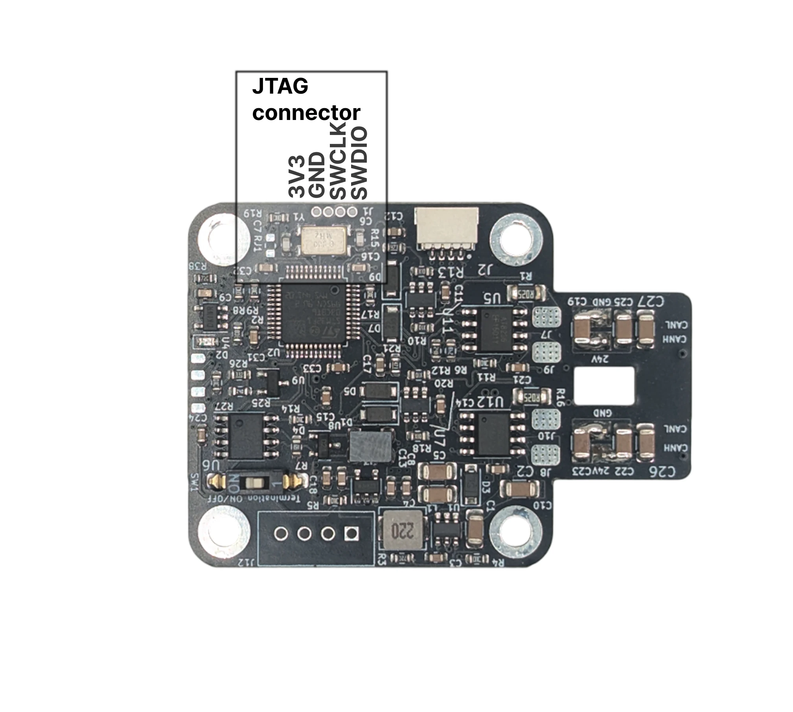
Steps¶
- Connect the adapter to the JTAG pads and the PC.
- In the programmer, connect to the target (SWD). The STM32F103CB shows up with 128 KB of flash.
- Erase the chip, or at least the application region: the old firmware and the bootloader must not overlap.
- Program the bootloader binary at address
0x08000000. - Disconnect the adapter, power the driver. The bootloader finds no valid application and waits in bootloader mode, with the LED blinking.
- Flash the firmware release through the bootloader, over UART or CAN, as in Updating through the bootloader.
#Infoshows the new release.#Default, enter the motor parameters, calibrate,#Save.
Check
#Info prints the release you flashed, and a driver powered up while bl_flash.py list or Motor GUI's
Scan bootloaders is polling answers in its first two seconds: the bootloader is there. If the firmware does
not start, see Updating through the bootloader: when it fails.
Memory layout
0x08000000–0x080022FF bootloader, 0x08002C00 its configuration page (board ID, the application's CRC),
0x08003000–0x0801FFFF the application (116 KB). The bootloader keeps a magic value in RAM to hand over
to the application in about 10 ms on a normal boot.
The programmer's settings¶
In ST-LINK Utility, Target → Settings with SWD and the default frequency works; Target → Program & Verify
with the start address 0x08000000. The pictures of the old flashing procedure apply to the connection and the
settings dialog:
| Settings | Programming |
|---|---|
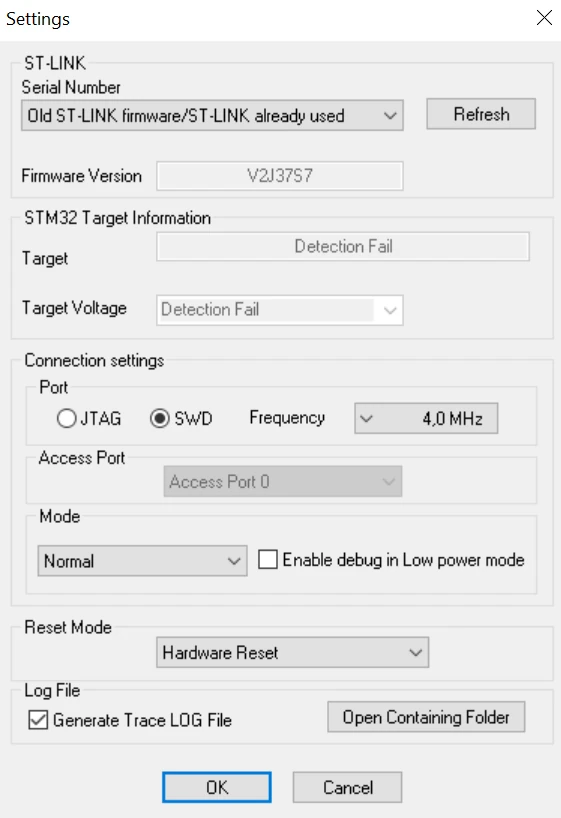 |
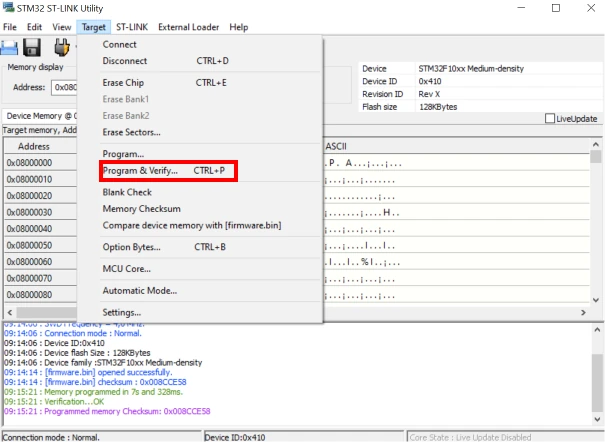 |


The same adapter uploads a firmware you build yourself, see Building from source.
Building from source¶
The firmware is a PlatformIO project for the Arduino core on the STM32F103CB, in the STEPFOC firmware folder
of the firmware repository
on the bootloader-version branch.
Building¶
- Install Visual Studio Code and the PlatformIO extension.
- Clone the repository and check out
bootloader-version. - Open the
STEPFOC firmwarefolder in VS Code; PlatformIO fetches the platform (ststm32@15.4.1) and builds with the PlatformIO Build button orpio run. The image is.pio/build/genericSTM32F103CB/firmware.bin.
The project is linked for the bootloader: VECT_TAB_OFFSET=0x3000, the linker script ldscript_bootloader.ld,
the upload offset 0x08003000 and a maximum size of 118784 bytes, in platformio.ini. A build that exceeds the
size fails to link.
Check
PlatformIO ends the build with SUCCESS, and .pio/build/genericSTM32F103CB/firmware.bin is there. If it
fails, the first error above the summary names the cause.
Uploading¶
PlatformIO runs on Windows, Linux and macOS alike. On Linux, an upload with the programming adapter also needs
PlatformIO's udev rules (99-platformio-udev.rules, in the PlatformIO documentation), and a serial port the
dialout group.
- Through the bootloader: flash the built
firmware.binwithbl_flash.pyor Motor GUI as in Updating through the bootloader. This is how a release is installed, and works on any driver with the bootloader. - With the programming adapter: Upload in PlatformIO uses ST-LINK and writes the image at
0x08003000. It leaves the bootloader alone, but it does not update the image CRC the bootloader keeps; see the warning below. The serial monitor (the plug icon) opens the UART at 256000 withsend_on_enter, so you can type commands to the driver from the same window.
After an ST-LINK upload the firmware does not start
At every power-up the bootloader checks the firmware against the CRC it stored at the last flash through the
bootloader. After an upload with the programming adapter that CRC no longer matches, so the bootloader stays in
bootloader mode, with the LED blinking, instead of starting the new firmware. Flash the same firmware.bin
once more through the bootloader to recover. Once the bootloader is on the board, install every firmware
through it.

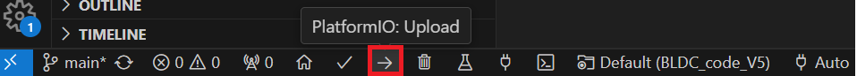
Where things are¶
src/constants.h |
FIRMWARE_VERSION, the CAN command IDs, the EEPROM map, the loop and PWM frequencies |
src/common.h |
the controller and PID structures with their defaults |
src/communication.cpp |
the UART command handlers |
src/communication_CAN.cpp |
the CAN receive switch and the transmit functions |
src/SerialPacketParser.cpp |
the UART parser: it splits a line into the command and its argument (up to 108 it also kept the list of names it accepted) |
src/motor_control.cpp |
the control loops, the calibration routine, the gripper state machine |
src/bootloader_config.cpp |
the vector table offset and the reset into the bootloader |
release_guide.md |
how a release is cut: version bump, build, tag, GitHub release with firmware.json |
Making a release¶
release_guide.md in the repository is the procedure: bump FIRMWARE_VERSION, build, commit the source change
with the rebuilt Binaries/firmware.bin, tag V<number>, create the GitHub release with the image and
firmware.json and the release notes. This site's tools/sync_firmware.py reads a release by its tag; the
version box names the release.
A firmware for a board without a bootloader¶
The main branch builds a firmware linked at 0x08000000 for boards that have no bootloader. It stops at
release 103 and is not maintained; install the bootloader instead,
Installing the bootloader on an older board.
8. Troubleshooting
Troubleshooting¶
By symptom. The error flags and what clears them are in Errors and recovery; the faults of the firmware that are known and not yet fixed, with what to do until they are, in Known issues.
The motor does not move¶
flowchart TD
A([The motor does not move]) --> B{Does the driver answer?}
B -- no --> C[The supply and its polarity, the LED;<br>UART: the baud rate, TX and RX;<br>CAN: the node ID, 1 Mbit/s, the termination]
B -- yes --> D{Calibrated?}
D -- no --> E[Enter the motor parameters, then #Cal and #Save]
D -- yes --> F{An error active? The LED on steadily}
F -- yes --> G[#Error names it: fix the cause, then #Clear]
F -- no --> H{A current limit above 0?}
H -- no --> I[#Ilim to the stepper's rated current, #Save]
H -- yes --> J[Command a setpoint in a closed-loop mode;<br>#Mode and #Info show the state]The driver does not answer¶
| Symptom | Check |
|---|---|
| No LED | the supply, DC+ and DC−, the power cable's orientation. If the cable was the wrong way round the driver is destroyed |
| LED on, nothing on the terminal | 256000 baud; TX to RX and RX to TX; the adapter's port; 3.3 V adapter; the line ending CR+LF |
| LED on, nothing on CAN | the node ID; 1 Mbit/s on the adapter; termination (about 60 Ω across CAN H and CAN L with everything unpowered); the CAN cable's orientation |
Unknown command |
the name's spelling and case: #Kpiq, not #kpiq; an argument with a space in it (#WdFb 2000,0,1000,2, not #WdFb 2000, 0, 1000, 2) |
Wrong firmware for this board (product lock), the LED on steadily |
the other product's firmware was flashed: a Spectral Micro image on a STEPFOC. Flash the STEPFOC firmware; the configuration was not touched (The product lock) |
| the LED keeps blinking and nothing answers after a firmware update | the bootloader has no valid firmware, or its CRC does not match after an upload with the programming adapter: flash again through the bootloader, see Updating through the bootloader |
Motor GUI¶
| Symptom | Check |
|---|---|
| the browser offers no port | a Chromium-based browser (Chrome, Edge, Brave, Opera); Firefox and Safari have no Web Serial |
| the port is listed but will not open | another program holds it: a terminal, PlatformIO's monitor, the Arduino serial monitor |
| the port opens, nothing appears | the driver's power; TX and RX crossed on a non-Source adapter; the baud rate on a non-Source adapter (256000) |
| No connection on CAN | the CANvas adapter's port; the bus termination; the node ID of the driver; 1 Mbit/s |
| the calibration does not start | calibration runs over the serial connection only, not over CAN |
| Unsaved changes after a power cycle | the settings were not saved to the driver; Save writes them |
| the firmware update finds no bootloader | power-cycle the driver while the GUI scans, to catch the bootloader's 2 s window. A driver with firmware 103 or older from the main branch has no bootloader: Installing the bootloader on an older board |
Calibration¶
The messages and their causes are in Motor parameters and calibration. The ones that come back most:
| Symptom | Cause |
|---|---|
Magnet test: Failed |
magnet too far, axially magnetised, or missing |
| the motor wobbles left and right during calibration | one coil is not connected |
| the motor does not move in the open-loop step | a coil open or not soldered; calibration then fails at the next step with Phase order is wrong! |
Phase order is wrong! |
the motor did not respond to the commutation check; wiring, current limit, magnet |
| calibration succeeds, the motor then runs badly or in the wrong direction | the magnet slipped on the shaft; glue it and calibrate again |
after Calibration success! the motor turns slowly by itself for about a minute |
the encoder table and the anti-cogging that follow a #Cal; let them finish, they save everything (What follows the calibration) |
the runs after the calibration stopped: #Info shows the encoder table or the anti-cogging not on |
a command came in, the shaft was blocked or an error came up; the state is in parameters 52 and 43 (When a run fails). #Save keeps the calibration; #Encal all runs both again |
| the anti-cogging does not switch on (parameter 37 stays 0) | no set is identified for that form; run #Cogcal save, or calibrate. After an encoder table measured on its own the set is switched off until it is identified again |
calibration succeeds but the LED stays on and #Error shows nothing |
should not happen with firmware 106 and newer, which replaces a damaged configuration block with the defaults at power-up; if #Info shows -1: #Default, parameters, calibrate again |
The motor¶
| Symptom | Cause |
|---|---|
| crunching or whining at speed | the current limit or the current loop gains too high; lower #Ilim, lower #Cbw and calibrate again, or lower #Kpiq |
| humming, oscillating at rest | #Kpv or #Kpp too high; see Current limit and loop tuning |
| weak torque | #Ilim low; the supply's current limit; the wrong #R/#L (the computed current gains are off) |
| the motor is hot | normal for a stepper at its rated current; lower #Ilim, enable the thermistor |
| it stops with a Vbus error when decelerating | the supply cannot absorb the returned energy; a different supply, or a brake resistor |
| it stops with a velocity error | the speed passed 30,000,000 ticks/s, a fixed threshold that #Vlimit does not change: a runaway, so check the magnet and the calibration |
| it loses position with a load | that is a torque limit: a stepper under FOC does not lose steps, it falls behind; raise #Ilim within the motor's rating, or more motor |
| it holds position with a sawtooth noise | the position loop gain; the magnet distance |
Low-quality motors¶
Motors with visibly bad windings, an uneven back-EMF or a resistance that differs between the two coils calibrate poorly and run rough. The tested motors are known good.
The magnet and the encoder¶
- The distance is 1 mm. "Magnet Good" from the magnet test does not mean the distance is right, only that the field is strong enough.
- A magnet touching the chip can destroy the microcontroller; a magnet too far gives a noisy, wrong position.
- The magnet must be diametrically magnetised and centred on the shaft.
The driver gets hot or shuts down¶
The firmware does not monitor the driver stage: if the stage stops on its own, for heat or a short, the motor loses torque and no error is reported. Lower the current limit, give the board airflow, check the motor leads for a short. Near 2.8 A the driver needs cooling.
After a firmware update¶
#Info shows the new release. If the values look wrong or the LED stays on: #Default, enter the motor
parameters, #Cal, #Save. A release note says when an update clears the calibration. After an update to 109,
Upgrading from older firmware says what to run: a calibration, then the velocity
gains.
A Vbus error right after power-up, cleared by #Clear, was the supply ramping up; from firmware 109 a low supply is
not checked in the first 500 ms.
Getting help¶
Support says where to ask and what to include; #Info's output is the first thing.
Known issues¶
The faults in the STEPFOC firmware that are known and not yet fixed, and what to do until they are. The pages that describe each part say the same where it matters; this page collects them in one place. Which releases work together is in Versions and compatibility.
STEPFOC firmware¶
Seen in: 109.
| What happens | What to do | More | |
|---|---|---|---|
| KI-3 | The serial number is not read back from the EEPROM at power-up, so #SERNUM, Motor GUI and Send_Respond_Device_Info report 1, and every #Save writes that 1 over the stored number. |
Tell drivers apart by their CAN node ID. To keep a serial number stored, set it with #SERNUM before every #Save. |
Saving the configuration |
| KI-4 | For anyone reading or changing the source, the start values in common.h are not the factory defaults (the gripper and calibrated flags start at 1, the pole pairs at 50, Max_Vbus at 29500 mV). The EEPROM replaces them at power-up, so a running driver does not show them. |
Take the defaults from the Defaults page, which lists what #Default writes, or from Set_Default_config() in EEPROM.cpp. |
Defaults |
| KI-5 | While the E-stop bit of the last Send_gripper_data_pack (or #Gripstop 1) is 1, the driver raises the gripper E-stop error again on every control cycle, so Send_Clear_Error or #Clear alone does not clear it. |
Send a gripper frame with the E-stop bit 0 (or #Gripstop 0) first, then clear the error. |
Gripper mode: moving |
| KI-6 | The answer to a 5-byte Send_gripper_data_pack goes out before the driver has acted on the command, so its object detection and error bits are those of the moment before, for example 3 (position reached) from the previous move. | Judge the new move by the answers to later frames, or poll with an empty Send_gripper_data_pack. | Gripper mode: moving |
| KI-7 | A 5-byte Send_gripper_data_pack, Send_Clear_Error or #Clear during the gripper calibration stops it without a message and leaves its counters as they were, so the next calibration starts part way through; it may skip the opening or give up early. |
Send only empty status polls while the gripper calibrates (up to about 24 s). After an interrupted calibration, switch the driver off and on before you calibrate again. | Gripper mode: calibrating |
| KI-8 | The action bit in Respond_Gripper_data_pack is a copy of the last command's action bit; the driver never clears it, so it stays 1 after the move has ended. | Tell the end of a move by the object detection, 3 position reached, 1 or 2 stopped on an object. | Respond_Gripper_data_pack |
| KI-9 | Open loop (#Openloop, #gosteps) puts #Openv on the coils without a current limit; #Ilim does not apply. The default 5000 mV drives about 4.5 A through a 1.1 Ω coil. |
Set #Openv to the motor's rated current times its phase resistance first, and keep open-loop tests short. |
Open-loop stepping |
| KI-10 | The velocity error trips only above a fixed 30,000,000 ticks/s, about 1830 revolutions per second and far above any speed a stepper reaches; #Vlimit does not change it, so it does not catch a motor that runs away. |
Watch the speed in your host and send Send_Idle or Send_ESTOP when it is wrong. | Errors and recovery |
| KI-11 | Only motion frames and answered status requests reset the watchdog. Setting frames (gains, limits, Idle, Clear) and UART commands do not, so a host that only configures the driver, or a terminal session with a saved watchdog, ends in a watchdog error. | While the watchdog runs, send a status request such as Send_Respond_Encoder_data within every watchdog period. Before you work over UART alone, set the watchdog to 0 over CAN and save. | Over CAN: a control loop |
| KI-12 | The driver error flag (Driver_error, Driver error in #Error) is never raised. STEPFOC reads no fault output of its driver stage, so a stage that shuts down for heat or a short only makes the motor lose torque, with no error. |
Watch the current and the position in your host; a commanded motor that goes limp points to the driver stage. Lower the current limit and give the board air. | Troubleshooting: the driver gets hot |
| KI-13 | #Dir stores a flag that #Info prints as Phase direction, but the control code does not use it: it does not reverse the motor. |
To make the other direction positive, negate the setpoints and the values you read back in your host. | Wiring: phase order and direction |
| KI-14 | #Mode prints Gripper mode in voltage-torque mode (#Uq), and nothing at all in gripper mode, HALL mode, the angle-offset search, open-loop steps (#gosteps) and the encoder-table run. |
In those modes go by the command you sent last, not by #Mode. |
UART commands: status and utility |
| KI-15 | In idle the driver brakes, with the coils shorted, at every power-up and also with an error; #Coast is not kept by #Save. The current a turned motor drives through the shorted coils is not limited. |
Send #Coast (or Send_Settings) after every power-up if the motor must turn freely in idle, and do not let a load drive a braking motor fast. |
Braking in idle |
| KI-19 | The encoder-table run that follows every #Cal holds a field current of 80 % of the current limit for about 20 s. After #Default the limit is 1700 mA, so the coils then carry about 1.4 A, more than a smaller stepper is rated for. |
Set #Ilim for the motor before #Cal (a Motor GUI preset sets it). Calibration uses its own limit for its steps and puts yours back before the encoder table runs. |
Calibration: what follows it |
Fixed¶
| What happened | Fixed in | More | |
|---|---|---|---|
| KI-1 | The current limit of Send_Limits over CAN is used as sent, also above the driver's 2800 mA; only #Ilim over UART clamps it. |
109: Send_Limits stops the current limit at 2800 mA and ignores a negative value | Send_Limits |
| KI-2 | Calibration sets the current limit to 1600 mA and leaves it there, whatever it was before; a #Save right after calibration stores the 1600 mA. |
109: calibration puts back the current limit that was in force when it started | Calibration: save |
Something that is not here¶
Check the symptom tables first. If it is still not explained, Report a problem says what to include so it can be reproduced. A fixed issue stays on this page, under "Fixed", with the release that fixes it.
Appendix
Firmware release notes¶
What changed in each firmware release, from the release notes in the firmware repository, up to the release this site describes.
Upgrading from older firmware says what a driver keeps and what to run when it moves to 109.
V109 (2026-11-10)¶
STEPFOC firmware V109 — application image for flashing via the Spectral bootloader. From 109 the STEPFOC and the Spectral Micro share their version numbers. Everything below is described in the manual: STEPFOC docs; what a driver keeps and what to run after the update: Upgrading from older firmware.
New features¶
- Parameters: any setting or read-out by number over CAN (commands 36-38) or
#Par: the gains and limits, the watchdog, the current loop, the speed estimate, the tool id and more (parameters 1-87). Identity (39) and telemetry (40) frames. - Capture, histogram and buffers (41-43): record three signals from the control loop, read the encoder and anti-cogging tables.
- Watchdog actions: on a lost host the driver can idle, brake, coast, hold the position, or descend at a capped speed, with a fallback time.
- Current loop from R, L and one bandwidth (parameter 49, default 160 Hz); the direct PLL speed estimate at 60 Hz by default; commutation delay compensation, 166 µs by default; a position input filter and a velocity-integral deadband.
- Encoder table and anti-cogging measured on the driver:
#Calruns the calibration, then the encoder table and the anti-cogging identification, and saves;#Calonlyis the calibration alone. - Sound through the motor: tones, a queue of notes and samples (CAN 44 and 45,
#Tone). - Identification:
#Infoand parameters 84-87 report the build (git commit), the board ID and a calibration ID. - Settings in blocks with their own checksums; a reset keeps the CAN ID; a product lock refuses a Spectral image on a STEPFOC board.
Calibration¶
- The angle alignment locks the rotor with the calibration current through the coil's resistance (it used a fixed 0.5 V, too weak for small motors with a high coil resistance). On a 20 mm stepper the alignment offset now comes out 6× steadier from run to run; 25 of 25 calibrations passed.
- Kt and KV are measured in four spins alternating direction at a forced 6 V; a warning only when two same-direction spins differ by more than 5 %.
#Calfrom a moving motor switches the bridge off first; a failed calibration switches it off at once; an E-stop ends a calibration, and#Calis refused while one is latched (Cal: not started, the E-stop is latched (#Clear first)); the alignment starts from its first stage after a calibration that was ended from outside.#Calangleis refused while the driver is in error.- The current limit is put back when a calibration ends.
Safety¶
- Limits: a negative or not-a-number value is ignored by the legacy CAN frames (limits, gains, Kt, voltage limit 0-60000 mV);
#Ilimand#Vlimittake the magnitude; the current of a gripper move stays within 0-2800 mA;#PPtakes 1-200 pole pairs, only while idle. PWM duties stay between 0 and 100 %. - The current-sense zero waits for the motor supply: started on USB before the supply, the driver used a zero about 100 mA off. It now says so in
#Infoand measures the zero by itself once the supply is there. - No undervoltage error while the supply ramps up at power-up.
CAN bus¶
- A gripper poll right after a new move command no longer cancels it as new: object detection reports contact again (it read "at position" while pressing on an object). The same in every release before 109.
- The current and PD frames set their setpoint and mode together. Length codes above 8 are read as 8; extended (29-bit) frames are ignored.
- Watchdog: setting its time or a save starts a fresh window; a negative time means off; hold and descend no longer use the last moving loop's delay compensation.
Bug fixes¶
- After
#Cal, a host that takes the driver within 3 s drops the encoder-table and anti-cogging runs (they used to start by themselves at the next idle).#Encaland#Cogcalstart only on their own words. While such a run turns the motor, a capture is not armed and the histogram is not changed. - A storage block whose check fails is read up to three times before its defaults are used.
#Infosays the anti-cogging is saved only while what is in RAM equals what is stored. - The current-loop integrals are cleared whenever the bridge brakes or coasts. The sound queue and sample buffer no longer replay old content after a stop; a pitch the driver cannot play answers
Tone: not played.
Compatibility¶
- Python library 1.21 or newer (
pip install --upgrade Spectral-BLDC), Motor GUI 0.5.0. - The calibration and the settings of 108 are kept. Not tested on the bench for this release: an upgrade from V103 with the ST-Link, and a downgrade.
Assets¶
stepfoc-firmware-V109.bin— application firmware image (flash at0x08003000, target STM32F103CB).firmware.json— manifest with version, size, and SHA-256 for download verification by the web flasher.
Integrity¶
- SHA-256:
94bc56430195b323f48dd47237be99700623ec8d0ae391f974a809e3eae123cc - Size: 112088 bytes
Built from commit 118fe17 on bootloader-version (#Info shows it as Build: 118FE17). Includes bootloader entry support (CAN/UART reset-into-bootloader).
V108 (2026-08-26)¶
STEPFOC firmware V108 — application image for flashing via the Spectral bootloader.
Bug fixes¶
- Fixed calibration (
#Cal) spuriously failing withPhase order is wrong!on otherwise-healthy motors. The "confirm commutation" pre-check (before the real angle-offset search) commands a pure torque-axis voltage using the not-yet-calibrated encoder angle — depending on a given unit's actual rotor-to-encoder mounting angle, that command could land almost entirely on the wrong axis and produce ~zero torque, failing the check even though nothing was actually broken. Bench-confirmed on a real unit. - Fix: retry the pre-check once at a 90° angle bias before declaring failure — guaranteed to land within 45° of the true torque axis on at least one of the two tries. The downstream angle-offset search is unaffected and already independent of this pre-check.
- Added
Spin-confirm delta/Vbusdiagnostics to#Cal's failure report, for the rare case both tries still fail.
Assets¶
stepfoc-firmware-V108.bin— application firmware image (flash at0x08003000, target STM32F103CB).firmware.json— manifest with version, size, and SHA-256 for download verification by the web flasher.
Integrity¶
- SHA-256:
25cbc4887ca2c192eba6e708930eb6b6c677fd1e76299313c3b3ce3459e0e8a1 - Size: 99188 bytes
Built from commit 46b4911 on bootloader-version. Includes bootloader entry support (CAN/UART reset-into-bootloader).
V107 (2026-08-24)¶
STEPFOC firmware V107 — application image for flashing via the Spectral bootloader.
Bug fixes¶
- Fixed PD mode (
IN_DATA_PACK_PDover CAN): the commanded speed was written intoFeedforward_speed, butPD_mode()readsVelocity_setpointfor its KD term — so the KD (velocity-damping) term of the impedance controller was always evaluated against a stale/zero setpoint and had no effect. The CAN handler now writes the field the control law actually reads.IN_DATA_PACK_1/ position mode is unaffected —Feedforward_speedthere is correct and continues to feed the position cascade.
CAN bus¶
- Added a generic settings command (
IN_SETTINGS) so future boolean settings don't each need their own command ID. Payload ismask+value(one byte each), one bit per setting — only bits set in the mask are applied, so a sender only needs to know about the bits it cares about. - First setting on this command: brake vs. coast (bit 0), previously only selectable over UART (
Brake/Coast), now selectable over CAN as well.
Assets¶
stepfoc-firmware-V107.bin— application firmware image (flash at0x08003000, target STM32F103CB).firmware.json— manifest with version, size, and SHA-256 for download verification by the web flasher.
Integrity¶
- SHA-256:
63699037c79318e1d78738edcb13e9f9bc00a3393dc5803f920b244a60622ae2 - Size: 98972 bytes
Built from commit 04ec180 on bootloader-version. Includes bootloader entry support (CAN/UART reset-into-bootloader).
V106 (2026-07-05)¶
STEPFOC firmware V106 — application image for flashing via the Spectral bootloader.
CAN bus¶
- The controller now drains up to 8 CAN messages per pass instead of just 1, so short bursts (multiple commands sent back-to-back, or a busy multi-node bus) no longer silently drop messages once the 3-deep hardware FIFO fills.
- A CAN peripheral that fails to initialize no longer bricks the board — UART stays fully usable, only the CAN bus is skipped.
Safety¶
- Added a hardware watchdog (100ms). If the control loop ever stops running, the board resets instead of leaving the motor driven at a stale duty cycle.
- Fixed a bug where
Torque_modecould silently overwrite your commanded Iq setpoint when clamping to the current limit — reading it back after clamping now shows what you actually asked for, and raising the current limit afterward immediately restores the original commanded torque instead of requiring the command to be resent. - Fixed undefined behavior in a serial-protocol integer conversion (
fourBytesToInt). - Synced default configuration values that had drifted between two locations in the code, so a fresh
#Defaultand a freshly-flashed board's built-in defaults now agree.
EEPROM / configuration integrity¶
- Added CRC validation over the saved configuration, split into two independent halves: calibration data (resistance, inductance, Kt/KV, angle offset, current-loop gains, etc.) and settings (PID tuning, limits, watchdog config, CAN ID, etc.).
- This means a corrupted save (e.g. from a power loss mid-write) is detected and safely defaulted instead of silently running with garbage values — and critically, a future firmware update that only adds a new setting can no longer wipe your calibration, since the two are validated independently.
- Boards upgrading from older, pre-CRC firmware keep their existing calibration automatically — no need to recalibrate after this update.
- A few unused slots were reserved in the calibration block for upcoming features (e.g. magnet alignment), so those can be added later without another migration.
Performance¶
- PWM output no longer re-resolves which timer/channel it's writing to on every single call (it was doing this 4x per control tick) — resolved once and cached, freeing up ISR headroom.
- Velocity calculation switched from a floating-point divide to an integer multiply.
Usability¶
- New
#Helpcommand — prints a summary of the available commands. - Serial now responds with "Unknown command" for unrecognized input instead of silently ignoring it.
- Calibration now prints progress during the angle-offset search (previously up to ~40 seconds of silence that could look like the board had hung).
#Errornow also reports driver faults (undervoltage/thermal/overcurrent), not just the other error types.#Infonow always reports live ISR execution time, useful for checking control-loop headroom on the bench.
Assets¶
stepfoc-firmware-V106.bin— application firmware image (flash at0x08003000, target STM32F103CB).firmware.json— manifest with version, size, and SHA-256 for download verification by the web flasher.
Integrity¶
- SHA-256:
bc061fb273e7c836e3180fa597ecd373e7e357b0eab9130b63a7fd19b70a6073 - Size: 98940 bytes
Built from commit 661e7d3 on bootloader-version. Includes bootloader entry support (CAN/UART reset-into-bootloader).
V105 (2026-07-04)¶
STEPFOC firmware V105 — application image for flashing via the Spectral bootloader.
What's new¶
- Reversed stepper phase wiring now calibrates automatically — no more "switch phases and try again." The firmware detects the wiring and compensates it in software, so all 8 phase-wiring permutations calibrate identically and symmetrically.
#Infonow reports the firmware's own build version, so the version is correct immediately after flashing (no#Defaultneeded).
Assets¶
stepfoc-firmware-V105.bin— application firmware image (flash at0x08003000, target STM32F103CB).firmware.json— manifest with version, size, and SHA-256 for download verification by the web flasher.
Integrity¶
- SHA-256:
0d80ce3cf78109f6ff54697425ed475ffca4e97e220d72fe0823ce1bd60a4908 - Size: 95924 bytes
Built from commit bda57d6 on bootloader-version. Includes bootloader entry support (CAN/UART reset-into-bootloader).
V103 (2025-12-28)¶
First stable release for public
V102 (2025-12-28)¶
First official release for the public
V101 (2025-09-29)¶
Initial fully functional release based on spectral micro firmware.
Versions and compatibility¶
Which firmware release works with which bootloader, Python library, PAR6 runtime and board revision. One row per firmware release, newest first.
| Firmware | Released | Bootloader | Spectral Micro equivalent | Python library (Spectral-BLDC) | PAR6 runtime | STEPFOC PCB | Docs |
|---|---|---|---|---|---|---|---|
| 109 | 2026-11-10 | required | 109 (from 109 the two share their version numbers; there is no Spectral Micro 108) | 1.21 or newer (the calls for the commands added in 109: parameters, identity, telemetry, buffers, the watchdog's coast and descend) | 0.9 or newer (it sends watchdog action 0, the legacy response) | v1 | 109 |
| 108 | 2026-08-26 | required (installed on boards shipped with 105 or newer, and on some shipped before) | 107 | 1.20 or newer | 0.9 or newer | v1 | 108 |
| 107 | 2026-08-24 | required | 107, without its calibration fix (which came with STEPFOC 108) | 1.20 or newer | 0.9 or newer | v1 | not published |
| 106 | 2026-07-05 | required | 106 | 1.19 or newer | 0.9 or newer | v1 | not published |
| 105 | 2026-07-04 | required (the first release that needs it) | 105 | 1.19 or newer | 0.9 or newer | v1 | not published |
| 103 | 2025-12-28 | none (flashed with a programming adapter) | 101 | 1.17 or newer | 0.9 or newer | v1 | 103 |
#Info prints the firmware release a driver runs; Send_Respond_Device_Info returns it over CAN.
Hardware revisions¶
What changed in each revision of the STEPFOC board, and which firmware and which revision of this manual go with
it. The board reports its hardware revision in #Info (Hardware version) and in Send_Respond_Device_Info.
| Revision | Since | Changes | Firmware | Manual |
|---|---|---|---|---|
| v1 | first production | — | 101 and newer; 105 and newer ship with the bootloader, and so did some boards before 105, most likely with 103 | this manual |
Boards with release 103 or older from the main branch have no bootloader;
Installing the bootloader on an older board brings them to the current firmware.
Drivers that report 103 says how to tell which kind you have.
Theory corner¶
The control concepts behind the driver's modes, for readers who want to know why a setting does what it does. Nothing here is needed to use the driver; the chapters say what to type.
Field-oriented control of a stepper¶
A hybrid stepper is a two-phase synchronous motor with many pole pairs: 50 for a 1.8° motor, so one mechanical revolution is 50 electrical cycles. A conventional stepper driver drives it blindly: it advances the current pattern one step at a time and relies on the rotor following. The torque the rotor receives depends on the angle between the stator field and the rotor, the load angle; it is largest a quarter of an electrical cycle ahead of the rotor and zero when the two are aligned. Because the driver does not know where the rotor is, it keeps full current in the coils at all times, so that even a badly placed field produces enough torque, and it still loses steps when the load angle exceeds 90° electrical.
Field-oriented control (FOC) closes that gap with a measurement of the rotor angle. The encoder on the motor shaft gives the mechanical angle \(\theta\); with the pole pairs \(p\) and the angle offset \(\theta_0\) found by calibration, the electrical angle is \(\theta_e = p\,\theta + \theta_0\). The two coil currents \(I_A\) and \(I_B\) are transformed into the rotor's frame of reference (the Park transform):
\(I_q\), the quadrature current, is the part of the current that stands at right angles to the rotor field and produces torque: \(\tau = K_t\, I_q\). \(I_d\), the direct current, is aligned with the field and produces none. Two PI controllers regulate \(I_q\) to the torque demand and \(I_d\) to zero by choosing the voltages \(U_q\) and \(U_d\); the inverse transform turns those into the two coil voltages, applied by PWM at 25 kHz. The loop runs at 6250 Hz.
The consequences are what makes a FOC stepper behave like a servo: the current is only what the torque needs, so the motor runs cool and quiet; the field is always placed where it produces the most torque per ampere; and a step is never lost, because the controller knows the rotor position at every instant and works from the error, not from a count of pulses.
Calibration supplies the constants this needs. The pole pairs come from the step angle. The current loop gains
follow from the coil's resistance \(R\) and inductance \(L\) and the chosen bandwidth \(\omega_c = 2\pi f_c\) (#Cbw):
\(K_p = L\,\omega_c\) and \(K_i = R\,\omega_c\) cancel the coil's electrical time constant and give a first-order
response at \(f_c\). The firmware computes a discrete-time form of these. It keeps \(K_i\) per control loop: Kiiq
is about \(R\,\omega_c\) × 160 µs, so do not enter \(R\,\omega_c\) as #Kiiq. Firmware 108 and older divided both
gains by 7, a loop of about 70 Hz; 109 uses the formula at 160 Hz.
The angle offset is found by locking the rotor with the stator
field and reading where it settles, then refined by a sweep for the offset at which the motor turns alike in both
directions. In theory the torque constant follows from the velocity constant: in SI units \(K_t = 1/K_V\) (with
\(K_V\) in rpm/V, \(K_t \approx 9.55/K_V\) Nm/A). The firmware estimates \(K_V\) from the speed the motor reaches at
500 mA per volt of a fixed 6 V limit (the supply voltage, if that is lower) and uses \(K_t = 8.27/K_V\); treat
both as estimates.
The cascade of loops¶
Position, velocity and current are controlled by three loops nested inside one another:
The position loop is proportional: its output is a speed demand, limited by the velocity limit. The velocity loop is a PI controller: its output is a current demand, limited by the current limit; the integral term removes the steady-state error a load would otherwise leave. The current loop is the innermost and fastest. Each loop must be slower than the one inside it, by a factor of five to ten, for the inner loop to look like an ideal actuator to the outer one; that is why the loops are tuned from the inside out, and why a current loop bandwidth of 160 Hz (the default from firmware 109) leaves room for a velocity loop of a few tens of hertz and a position loop below that.
A command picks where the cascade is entered: a current setpoint uses the current loop alone, a speed setpoint the two inner loops, a position setpoint all three. The feedforward terms the CAN motion frames carry are added to the demands rather than computed from an error: a speed feedforward is added to the position loop's output, a current feedforward to the velocity loop's output. A host that knows the trajectory can command it directly and leave the loops to correct what is left, which gives a faster, smoother response than letting the loops produce the whole demand from the error.
An integrator accumulates error over time, and keeps accumulating while the output is at its limit; the overshoot
this causes when the limit is released is windup. The velocity loop's integrator is clamped to the current
limit, and #Rstint resets the integrators on every new setpoint, which suits a host that sends one setpoint
after another in large steps.
Impedance control¶
Impedance control does not prescribe a motion or a force. It prescribes the relation between the two: how much force the motor produces when it is displaced from its setpoint and how fast. The driver's PD mode implements a spring and a damper around the setpoint:
with the stiffness \(K_P\) in Nm/rad, the damping \(K_D\) in Nm·s/rad, and a current feedforward \(I_{ff}\) for a known load such as gravity. The torque is produced by the current loop (\(I_q = \tau / K_t\)), which is what makes FOC a prerequisite: a stepper driven blindly cannot produce a commanded torque.
The firmware's gains are in its own units. KP is in mA per encoder tick and KD in mA per tick/s (0.14 and
0.0028 by default). KP times the position error in ticks, plus KD times the speed error in ticks/s, plus the
feedforward, is the Iq setpoint in mA. A stiffness \(K\) in Nm/rad is KP = \(K\) × 0.3835 ÷ \(K_t\), with \(K_t\) in
Nm/A. A damping in Nm·s/rad converts to KD the same way.
Pushed off its setpoint by an external force \(F\), the motor yields by \(\Delta\theta = \tau_{ext}/K_P\) and pushes back with that force; let go, it returns, with the damper settling the motion. A small \(K_P\) makes a soft joint, a large one a stiff joint; \(K_D\) without \(K_P\) is a pure damper. The setpoint can move, in which case the virtual spring drags the rotor along a trajectory with a bounded force — the property legged robots, hand-guided arms and anything that touches people or an uncertain environment need. The impedance loop is also what a position loop is not: the position loop's integral action removes any steady-state deflection and so makes the joint as stiff as the current limit allows, which is the right thing for a machine tool and the wrong thing for a leg.
The full impedance model includes an inertia term, \(M\ddot\theta\); the driver, like most joint controllers, leaves it out, so the apparent inertia is the motor's own.
Admittance control¶
Admittance is the inverse relation: the controller measures the force and commands a motion,
on top of a stiff position controller. It is the natural form for a machine that has a force sensor and a position loop that cannot be made soft, such as an industrial arm; impedance control is the natural form for a machine whose actuator is a torque source, such as a FOC motor. The driver has no force sensor and implements impedance; a host that wants admittance behaviour can estimate the external torque from \(K_t I_q\) minus the known load and command positions accordingly, with the limits of that estimate (friction, cogging, the current loop's accuracy).
Compliance and stiffness¶
Stiffness \(K\) is the force per unit of displacement; compliance is its inverse, \(C = 1/K\), the displacement per unit of force. Passive compliance is in the mechanism — a spring, a flexible finger, a belt; active compliance is in the controller — the impedance loop above. The driver offers three points on that scale: the position mode, stiff up to the current limit; the PD mode, as stiff as \(K_P\); and the current mode, which is no stiffness at all, a torque source the host shapes as it likes.
The current limit #Ilim is a force limit in every mode: the largest torque the motor will produce before it
yields, whatever the loops ask. Set it for the motor's rating, and for the mechanism's.
Which mode¶
| Mode | Behaviour under an external force | Use |
|---|---|---|
| Position | holds the position up to the current limit, then yields | positioning, machines, anything that must not deflect |
| Velocity | holds the speed up to the current limit | conveyors, wheels, spindles |
| PD (impedance) | deflects in proportion to the force, returns when released | legs, arms that touch things or people, hand guiding, teleoperation |
| Current (torque) | produces the commanded torque, moves as the load dictates | a host that closes its own loop, gravity compensation, force-limited pressing |
Resources
Glossary¶
- Activated
- A flag the driver keeps (
#Activate, Send_gripper_data_pack). In gripper mode a move is carried out only while the gripper is activated. - ADDITIONAL2
- A spare pin of the driver, usable as an analog input or a digital input/output. HALL mode homes the motor against a sensor wired to it.
- Angle offset (theta offset)
- The angle between the encoder's zero and the motor's electrical zero, found by calibration and stored. The driver needs it to place the current vector relative to the rotor.
- Anti-cogging
- A current added to the current setpoint, a function of the electrical angle, that cancels the motor's own
torque ripple (its pull towards the detents and the ripple of current-sensing errors). Identified on the driver
(
#Cogcal, parameter 43). - Back-EMF
- The voltage a turning motor generates in its own coils, proportional to speed. It opposes the supply, limits the top speed at a given voltage. Calibration estimates KV from the speed the motor reaches per volt.
- Board ID
- The bootloader's own address, 0 to 13, stored in its configuration page. Saving the configuration (
#Save) writes the CAN node ID into it. - Bootloader
- The program in the first 12 KB of the driver's flash on boards shipped with firmware 105 or newer, and on some shipped before. It starts the firmware, and loads a new firmware over UART or CAN. See The bootloader.
- Calibration
- The routine (
#Cal) that checks the magnet and the supply, takes the motor's resistance, inductance and pole pairs, computes the current loop gains, spins the motor in open loop to learn the wiring, finds the angle offset and measures Kt, KV and the flux linkage. Its result is kept with#Save. - CAN ID (node ID)
- The address of the driver on the CAN bus, 0 to 13 (the bootloader reserves 14 and 15). It occupies bits 10 to 7 of the 11-bit CAN frame identifier; the command ID occupies bits 6 to 1 and the error bit is bit 0.
- CANvas
- Source Robotics' USB-to-CAN adapter. It appears as a serial port and speaks slcan, which
python-canand Motor GUI use. - Command ID
- The number, 0 to 63, in bits 6 to 1 of a CAN frame identifier that says which message the frame carries. The API reference lists every command ID.
- Commutation
- Placing the stator current so that it produces torque at the rotor's present angle. FOC does it continuously from the encoder angle and the angle offset; a conventional stepper driver does it blindly, step by step.
- Commutation delay compensation (parameter 64)
- Turning the output voltage forward by the angle the rotor covers between the angle reading and the moment the voltage reaches the motor. 166 µs on STEPFOC by default.
- Control mode
- What the driver is doing with the motor: idle, position, velocity, current, PD (impedance), voltage torque, open loop, HALL, gripper, or calibration. A command that carries a setpoint puts the driver in the matching mode.
- Current loop bandwidth (
#Cbw, parameter 49) - How fast the current loop follows a change of its setpoint, in Hz. The current loop gains follow from it and
the motor's resistance and inductance: Kp = ω·L, Ki = ω·R. The firmware keeps Ki per control loop:
Kiiqis about ω·R × 160 µs. 160 Hz by default from firmware 109. - Current-sense zero
- The reading of a current sensor with no current flowing. From firmware 109 the driver measures it at every start-up and subtracts it; the anti-cogging identification can trim it further.
- d-q frame
- The rotating frame of reference FOC works in: the q axis is at right angles to the rotor field and the current on it (Iq) produces torque; the d axis is along the field and its current (Id) produces none, so it is held at 0.
- Daisy chain
- Several drivers on one CAN bus and one supply, each driver's second CAN and power connector feeding the next.
- Diametrical magnet
- A disc magnet whose poles are across its diameter, so the field turns with the shaft. The encoder needs this kind; an axially magnetised disc looks the same and does not work.
- EEPROM
- The non-volatile memory on the driver that holds the configuration and the calibration.
#Savewrites it,#Defaultrestores the factory values. - Encoder table
- A correction of the encoder's small angle error around the turn, measured on the driver (
#Encal, parameter 52) and saved with the configuration. - Encoder ticks
- The unit of position: the 14-bit magnetic encoder gives 16384 ticks per revolution of the motor shaft, counted over as many revolutions as the motor makes. Speed is in ticks per second.
- Error bit
- Bit 0 of every CAN frame identifier the driver sends: 1 while any error is active.
- Feedforward
- A term added to a loop's output from what is known in advance rather than from the error: the motion frames carry a speed and a current feedforward so a host that knows the trajectory can command it directly, leaving the loops to correct the rest.
- Field-oriented control (FOC)
- Controlling a motor by regulating the stator current as a vector in the rotor's frame, from a measurement of the rotor angle. On a stepper it replaces the fixed step currents with sinusoidal currents that follow the rotor, which gives smooth, quiet, efficient motion with no lost steps and a known position.
- Firmware release
- One build of the firmware, numbered 103, 105, 106, … and tagged
V103,V105, … in the firmware repository.#Infoprints the release a driver runs. This documentation describes one release; the version selector switches between them. - Flux linkage
- The rotor's magnetic flux as seen by a coil, in weber; calibration computes it from Kt.
- Gripper mode
- The driver running a gripper (
#Gripper 1): jaw positions from 0 (open) to 255 (closed), a speed, a current limit that becomes the grip force, and object detection. - HALL mode
- Homing against a sensor on ADDITIONAL2: the motor turns at a set speed until the sensor triggers, then holds the position reached. With a level trigger it holds only while the pin stays at that level.
- Heartbeat
- A frame (Respond_Heartbeat) the driver sends at a set interval so the host knows it is alive. Off by default.
- Impedance (PD) mode
- The control mode in which the driver behaves like a spring and a damper around a position setpoint, with the
stiffness
KPand the dampingKD, plus a current feedforward. - Iq, Id
- The two components of the motor current in the d-q frame: Iq produces torque, Id is normally held at 0. The current mode's setpoint and limit are Iq values.
- Kt, KV
- The motor's torque constant (torque per ampere) and velocity constant (speed per volt), found by calibration. Kt turns a current into an estimated torque; KV gives the top speed at a supply voltage.
- Microstepping
- Driving a stepper with intermediate current levels between full steps. Only the open-loop commands
(
#gosteps,#microstep) use it; under FOC the current follows the rotor continuously. - Motor GUI
- Source Robotics' browser tool for the driver: tuning, plots and firmware updates over a serial or CAN adapter.
- Open loop
- Driving the motor as a plain stepper, without the encoder in the loop:
#Openloop,#gosteps, and the open-loop spin of the calibration. - Parameter
- A setting reached by its number through Send_Parameter and Send_Get_Parameter (CAN 36 to 38) or
#Par(firmware 109 and newer). The numbers are permanent. - Phase order
- How the stepper's two coils are connected to A+/A− and B+/B−. Firmware 105 and newer learns the wiring during calibration and compensates it; firmware 103 asks for the wires to be swapped when it is reversed.
- PLL (speed estimate)
- A phase-locked loop that follows the encoder count and gives the speed with less lag than a moving average. The default speed estimate of STEPFOC from firmware 109 (parameter 50).
- Pole pairs
- The number of electrical cycles per mechanical revolution: 50 for a 1.8° stepper, 100 for a 0.9° stepper. Set
with
#PPbefore calibration. - Product lock
- The stamp in the EEPROM of the product that calibrated a board. A firmware that finds the other product's stamp drives nothing (firmware 109 and newer).
- Remote frame
- A CAN frame with the RTR bit set and no data: a request. The host asks for data with a remote frame under a command ID, and the driver answers with a data frame under the same ID.
- Sound (
#Tone, CAN 44 and 45) - Tones, a queue of notes and recorded samples the driver adds to its output voltage while it holds or moves, so the motor plays them (firmware 109 and newer).
- Spectral Micro
- Source Robotics' BLDC driver, STEPFOC's sister: similar hardware and firmware and practically the same commands, for three-phase brushless motors.
- Step angle
- The angle of one full step of a stepper: 1.8° for the common 200-step motor, 0.9° for a 400-step motor. It sets the pole pairs: 360 ÷ (4 × step angle).
- Termination
- The 120 Ω resistor the first and the last node of a CAN bus need. The switch on the driver turns it on.
- Tool id (
#Tool, parameter 1) - What a drive is built into: 0 none, 1 SSG-48, 11 to 33 an MSG, 200 to 254 a customer's tool.
- Vbus
- The supply voltage at the driver, measured and printed in mV. Outside the limits the driver raises a Vbus error.
- Watchdog
- A timer the driver resets with every motion frame and every status request it answers. When it is set (Send_Watchdog) and runs out, the driver reports a watchdog error and stops; from firmware 109 it holds, brakes, coasts or descends as the watchdog's action says.
Downloads and files¶
Everything to download for STEPFOC, at the versions these pages describe. The versions come from one file,
versions.yml, so this page changes with them; which versions work together is in
Versions and compatibility.
Firmware and software¶
| What | Version | Download | How to install |
|---|---|---|---|
Firmware image (stepfoc-firmware-V<number>.bin), its manifest firmware.json and the release notes |
109 (2026-11-10) | the GitHub release | Updating through the bootloader |
| Firmware source, a PlatformIO project | the same release | the firmware folder at the tag | Building from source |
| The bootloader binary, for a board without one | 0.1 (2026-06-05) | bin | Installing the bootloader on an older board |
The bootloader's host tool bl_flash.py |
the same release | host_tools | Updating through the bootloader |
Python library (Spectral-BLDC) |
1.21 (2026-11-10) | pip install Spectral-BLDC; the source and examples on GitHub, at that version |
With Python |
| Motor GUI | runs in the browser, always the latest | motorgui.com | Motor GUI |
| CAN definitions for this release: JSON, and DBC files for the motion layouts | this site's release | CAN frame tool and downloads | |
| ST-LINK USB driver, for the programming adapter on Windows | STSW-LINK009 | Installing the bootloader on an older board | |
| STM32CubeProgrammer, for the programming adapter | STM32CubeProgrammer | Installing the bootloader on an older board |
The version links open the files at exactly that release; the dates are those of the releases on GitHub, and on PyPI for the Python library. Motor GUI has no versions to choose: the page is always the current one. Known faults of the firmware are on Known issues.
CAD and hardware files¶
The latest files, on the main branch of the firmware repository.
| What | Where |
|---|---|
| STEP model of the board | STEP files |
| Magnet spacers, NEMA 17 and NEMA 23 spacers | Stepper motor accessories |
| The magnet tool | Tools |
More¶
| What | Where |
|---|---|
| Source Robotics Toolbox (joints from encoder ticks) | Source-Robotics-Toolbox |
| CANvas USB-to-CAN adapter | CANvas-adapter |
| All firmware releases | Releases |
| This documentation | STEPFOC-docs |
| Shop | source-robotics.com |
API reference
API reference¶
Every CAN message and every UART command of the firmware release this site describes, the defaults the firmware starts with, the error flags, and the map from the Python library's calls to the messages they send.
Where the facts come from¶
The command IDs, the frame lengths the firmware accepts, the responses it sends, the list of UART commands with
their kind (Set/Get, Get or action), their argument type, the mode each enters and what it prints, the parameter
numbers, and the defaults are read from the firmware's source at its release tag by tools/sync_firmware.py in
the documentation repository, and the pages are built from that at every build. The descriptions, units and byte layouts are
written by hand, and the build fails when they name a command the firmware does not have, or miss one it has, or
when a byte layout does not fit the frame. The firmware version is in the version box on the
landing page.
Conventions¶
- Bytes are numbered from 0, the first byte on the bus (
data[0]). Multi-byte values are big-endian: the most significant byte first. Floats are IEEE 754 single precision in 4 bytes. - Bits inside a byte are numbered from the most significant bit: bit 7 is the first flag the firmware packs into the byte, bit 0 the last.
- Encoder ticks: 16384 per revolution; speeds in ticks per second; currents in mA; voltages in mV.
- UART command names are case-sensitive and spelled exactly as the firmware compares them.
In the API reference¶
- CAN protocol: the identifier, the three kinds of message, every message by group, and every parameter
- UART commands: the syntax and every command by group
- Defaults
- Errors and LED states
- Python library: library call → message
CAN frame tool and downloads¶
Build or inspect a frame using the command definitions of this manual's firmware release. All calculations run in your browser; the tool does not connect to an adapter or send commands to hardware.
Downloads¶
Command definitions (JSON) · Position DBC · Velocity DBC · Current DBC
The JSON includes the firmware tag, source commit, message IDs, every documented layout and its bit order. The DBC files cover nodes 0 to 13, with both the clean and fault-bit identifiers of driver replies. Reserved commands are omitted. Values use the firmware's native units: ticks, ticks/s, mA and the units in the CAN reference.
Choose the DBC for the Send_data_pack_1 layout your host sends:
| File | Command layout |
|---|---|
| Position DBC | 8 bytes: position, speed feedforward, current feedforward |
| Velocity DBC | 5 bytes: speed, current feedforward |
| Current DBC | 2 bytes: current |
The three layouts share a CAN identifier. DBC cannot select a layout from the frame's length, so load the matching file; the browser decoder below handles all three lengths. Other message layouts are the same in each download.
An RTR request uses the same identifier as its data reply. DBC describes the data reply; it does not represent the request's RTR flag or the empty gripper status poll. Both are supported by the browser tool.
The gripper's two object-detection bits have an unusual order: bit 5 is the low bit, bit 4 the high bit.
The DBC signal gripper_object_detection_raw retains the wire value and supplies text labels (raw 2 =
object while closing, raw 1 = object while opening). The browser decoder converts that pair to the firmware's
numeric status (1 = closing, 2 = opening).
Try a frame¶
The example 0x07A, data C8 1E 01 2C C0, is a command to gripper node 0: position 200, speed 30,
current 300 mA, activate and action set, E-stop and release direction clear. These are an illustration of the
encoding; the device's current and motion limits still apply. Select another message above the fields to build
one of its documented forms. To inspect a reply, enter its identifier and data bytes below.
Loading the firmware's command definitions…
Check
The example decodes to the values above. Change the identifier to 0x1FA to see the same command
addressed to node 3. An invalid length or out-of-range field produces an explanation instead of a frame.
For wiring, termination, host timing and recovery, use Over CAN. To look up a message's purpose and accepted lengths, use the CAN reference.
CAN messages
CAN protocol¶
CAN 2.0, 1 Mbit/s, 11-bit identifiers. The identifier carries the node ID (bits 10 to 7, 0 to 15), the command ID (bits 6 to 1, 0 to 63) and, in frames from the driver, the error bit (bit 0). Over CAN explains how the pieces are used; this page lists them.
Three kinds of message:
- Send_… — the host sends data to the driver. A few are answered (the motion commands with Respond_data_pack_1, the gripper command with Respond_Gripper_data_pack); most are not.
- Send_Respond_… — the host asks for data with a remote frame (RTR bit set, no data) under the command ID; the driver answers with a data frame under the same command ID.
- Respond_… — frames only the driver sends.
Multi-byte values are big-endian (data[0] first); floats are IEEE 754 single precision; bits inside a byte are numbered from the most significant bit (bit 7 first).
Every message¶
| ID | Message | Direction | Length | Group |
|---|---|---|---|---|
| 0 | Send_ESTOP | host → driver | 0 | System |
| 1 | Send_Clear_Error | host → driver | 0 | System |
| 2 | Send_data_pack_1 | host → driver | 2, 5, 8 | Motion |
| 3 | Respond_data_pack_1 | driver → host | 8 | Motion |
| 4 | Send_data_pack_PD | host → driver | 8 | Motion |
| 5 | Respond_data_pack_2 | driver → host | 0 | Motion |
| 6 | Send_data_pack_2 | host → driver | not implemented | Motion |
| 7 | Respond_data_pack_3 | driver → host | 0 | Motion |
| 8 | Send_data_pack_3 | host → driver | not implemented | Motion |
| 9 | Respond_Heartbeat | driver → host | 0 | Status requests |
| 10 | Send_Respond_Ping | host → driver as a remote frame, driver → host as a data frame | 0 (remote) / 0 | Status requests |
| 11 | Send_CAN_ID | host → driver | 1 | System |
| 12 | Send_Idle | host → driver | 0 | System |
| 13 | Send_Save_config | host → driver | 0 | System |
| 14 | Send_Reset | host → driver | 0 | System |
| 15 | Send_Watchdog | host → driver | 5 | System |
| 16 | Send_PD_Gains | host → driver | 8 | Gains and limits |
| 17 | Send_Current_Gains | host → driver | 8 | Gains and limits |
| 18 | Send_Velocity_Gains | host → driver | 8 | Gains and limits |
| 19 | Send_Position_Gains | host → driver | 4 | Gains and limits |
| 20 | Send_Limits | host → driver | 8 | Gains and limits |
| 21 | Send_Iq | host → driver | not implemented | Motion |
| 22 | Send_Kt | host → driver | 4 | Gains and limits |
| 23 | Send_Respond_Temperature | host → driver as a remote frame, driver → host as a data frame | 0 (remote) / 2 | Status requests |
| 24 | Send_Respond_Voltage | host → driver as a remote frame, driver → host as a data frame | 0 (remote) / 2 | Status requests |
| 25 | Send_Respond_Device_Info | host → driver as a remote frame, driver → host as a data frame | 0 (remote) / 7 | Status requests |
| 26 | Send_Respond_State_of_Errors | host → driver as a remote frame, driver → host as a data frame | 0 (remote) / 2 | Status requests |
| 27 | Send_Respond_Iq_data | host → driver as a remote frame, driver → host as a data frame | 0 (remote) / 2 | Status requests |
| 28 | Send_Respond_Encoder_data | host → driver as a remote frame, driver → host as a data frame | 0 (remote) / 8 | Status requests |
| 29 | Send_Cyclic_command | host → driver | not implemented | System |
| 30 | Send_Heartbeat_Setup | host → driver | 4 | System |
| 31 | Send_data_pack_HALL | host → driver | 4 | Motion |
| 32 | Respond_data_hall | driver → host | 4 | Motion |
| 33 | Send_Respond_Kt | host → driver as a remote frame, driver → host as a data frame | 0 (remote) / 4 | Status requests |
| 34 | Send_Voltage_Limit | host → driver | 4 | Gains and limits |
| 35 | Send_Settings | host → driver | 2 to 8 | System |
| 36 | Send_Parameter | host → driver | 5 | Parameters and buffers |
| 37 | Send_Get_Parameter | host → driver | 1 | Parameters and buffers |
| 38 | Respond_Parameter | driver → host | 5 | Parameters and buffers |
| 39 | Send_Respond_Identity | host → driver as a remote frame, driver → host as a data frame | 0 (remote) / 8 | Status requests |
| 40 | Send_Respond_Telemetry | host → driver as a remote frame, driver → host as a data frame | 0 (remote) / 8 | Status requests |
| 41 | Send_Buffer_Read | host → driver | 5 | Parameters and buffers |
| 42 | Respond_Buffer_Data | driver → host | 8 | Parameters and buffers |
| 43 | Send_Buffer_Write | host → driver | 8 | Parameters and buffers |
| 44 | Send_Sound | host → driver | 8 | Sound |
| 45 | Send_Sound_Samples | host → driver | 1 to 8 | Sound |
| 60 | Respond_Gripper_data_pack | driver → host | 4 | Gripper |
| 61 | Send_gripper_data_pack | host → driver | 0, 5 | Gripper |
| 62 | Send_gripper_calibrate | host → driver | 0 | Gripper |
By group¶
- Motion: the motion commands and their answers, HALL homing
- Gains and limits: the loop gains, the limits, Kt
- Status requests: temperature, voltage, device info, errors, current, encoder, Kt, identity, telemetry, the heartbeat
- System: node ID, E-stop, idle, save, reset, clear, watchdog, heartbeat setup, settings
- Parameters and buffers: the parameters behind Send_Parameter and Send_Get_Parameter, every one of them, and the buffers: capture, histogram, anti-cogging, encoder table
- Sound: tones, the queue and samples through the motor
- Gripper: the gripper command, calibration and the gripper state
The Python library¶
Every message the host can send has a method of the same name in Spectral_BLDC.SpectralCAN, listed in
Python library.
Tools and downloads¶
Build or decode a CAN frame, and download this firmware's JSON and DBC definitions.
Motion¶
The commands that move the motor and the frames that come back.
Send_data_pack_1¶
ID 2host → driver2 or 5 or 8 bytesPython: Send_data_pack_1()
The motion command. Its length decides the control mode the driver enters: 8 bytes command a position with a speed and a current feedforward, 5 bytes a speed with a current feedforward, 2 bytes a current. Send 0 for a feedforward you do not use. A frame of any other length is ignored (the driver flags it as a wrong data length) but still answered.
8 bytes — position setpoint with speed and current feedforward (position mode)
| Byte | Bit | Field | Type | Meaning |
|---|---|---|---|---|
| 0-2 | Position setpoint | signed 24-bit | encoder ticks | |
| 3-5 | Speed feedforward | signed 24-bit | encoder ticks/s | |
| 6-7 | Current feedforward | signed 16-bit | mA |
5 bytes — speed setpoint with current feedforward (velocity mode)
| Byte | Bit | Field | Type | Meaning |
|---|---|---|---|---|
| 0-2 | Speed setpoint | signed 24-bit | encoder ticks/s | |
| 3-4 | Current feedforward | signed 16-bit | mA |
2 bytes — current setpoint (current mode)
| Byte | Bit | Field | Type | Meaning |
|---|---|---|---|---|
| 0-1 | Current setpoint | signed 16-bit | mA |
The driver answers with Respond_data_pack_1.
Every form resets the watchdog. With Rstint set, the integral accumulators are cleared on each new setpoint. From firmware 109 a position or speed frame that follows another mode (idle, current, PD, a watchdog trip) starts the velocity integral from zero, so a release from a wound-up mode does not kick; one that follows position or velocity mode keeps it. The new setpoint and the mode change reach the control loop together.
Send_data_pack_PD¶
ID 4host → driver8 bytesPython: Send_data_pack_PD()
Puts the driver in impedance (PD) mode and sets the position, speed and current feedforward of the PD loop, whose gains are KP and KD (Send_PD_Gains).
8 bytes
| Byte | Bit | Field | Type | Meaning |
|---|---|---|---|---|
| 0-2 | Position setpoint | signed 24-bit | encoder ticks | |
| 3-5 | Speed setpoint | signed 24-bit | encoder ticks/s | |
| 6-7 | Current feedforward | signed 16-bit | mA |
The driver answers with Respond_data_pack_1.
Firmware 106 and older wrote the speed into the feedforward instead of the PD loop's speed setpoint, so the speed term had no effect; 107 fixed it.
Send_data_pack_HALL¶
ID 31host → driver4 bytesPython: Send_data_pack_HALL()
Homing against a sensor: the driver spins at the given speed until the input on the ADDITIONAL2 pin shows the trigger condition, then latches the position it reached as its position setpoint and holds it. With a level trigger (0 or 1) it holds only while the pin stays at that level: when the pin changes back, the driver spins on again until the level returns. The edge trigger (2) holds after the first edge. Sending the command again while the driver is already in HALL mode does not re-arm it; leave the mode first.
4 bytes
| Byte | Bit | Field | Type | Meaning |
|---|---|---|---|---|
| 0-2 | Speed | signed 24-bit | encoder ticks/s; the sign gives the direction | |
| 3 | Trigger | unsigned 8-bit | 0 = trigger when the pin is low, 1 = when it is high, 2 = on any edge |
The driver answers with Respond_data_hall.
Firmware 103 read only bit 7 of byte 3 (0 or 1); the edge trigger (2) came later.
Respond_data_pack_1¶
ID 3driver → host8 bytes
The driver's answer to Send_data_pack_1 and Send_data_pack_PD: where the motor is, how fast it turns and the current it draws. The Python library stores them as position, speed and current.
The frame (8 bytes)
| Byte | Bit | Field | Type | Meaning |
|---|---|---|---|---|
| 0-2 | position | signed 24-bit | encoder ticks | |
| 3-5 | speed | signed 24-bit | encoder ticks/s | |
| 6-7 | current | signed 16-bit | Iq in mA |
Respond_data_hall¶
ID 32driver → host4 bytes
The driver's answer to Send_data_pack_HALL: the position and the state of the sensor input. Python attributes: position, HALL_trigger, additional_pin2, hall_index.
The frame (4 bytes)
| Byte | Bit | Field | Type | Meaning |
|---|---|---|---|---|
| 0-2 | position | signed 24-bit | encoder ticks | |
| 3 | 7 | HALL_trigger | bit | 1 while the driver waits for the trigger (with a level trigger, also again after the pin left the level), 0 while it holds |
| 3 | 6 | additional_pin2 | bit | the raw level of the ADDITIONAL2 pin |
| 3 | 5 | hall_index | bit | 1 once the trigger has been seen (latched) |
Send_data_pack_2¶
ID 6host → drivernot implemented
Reserved. The firmware has no handler for this ID and the Python library's call does nothing.
Send_data_pack_3¶
ID 8host → drivernot implemented
Reserved. The firmware has no handler for this ID and the Python library's call does nothing.
Respond_data_pack_2¶
ID 5driver → host0 bytes
Reserved; the driver never sends it.
Respond_data_pack_3¶
ID 7driver → host0 bytes
Reserved; the driver never sends it.
Send_Iq¶
ID 21host → drivernot implemented
Reserved; the firmware has no handler for this ID. Use the 2-byte form of Send_data_pack_1 for a current setpoint.
Gains and limits¶
The commands that set the loop gains and the limits. None of them is answered; save with Send_Save_config.
Send_PD_Gains¶
ID 16host → driver8 bytesPython: Send_PD_Gains()
Sets KP and KD, the gains of the impedance (PD) loop. Keep them with Send_Save_config.
8 bytes
| Byte | Bit | Field | Type | Meaning |
|---|---|---|---|---|
| 0-3 | KP | float 32 | ||
| 4-7 | KD | float 32 |
The driver does not answer this command.
Send_Current_Gains¶
ID 17host → driver8 bytesPython: Send_Current_Gains()
Sets Kp and Ki of the PI current loop of Iq. The Id loop keeps its gains; over UART, #Kpiq and #Kiiq set both loops, and so do parameters 11 and 12, a calibration and parameter 49.
8 bytes
| Byte | Bit | Field | Type | Meaning |
|---|---|---|---|---|
| 0-3 | Kp_iq | float 32 | ||
| 4-7 | Ki_iq | float 32 |
The driver does not answer this command.
Send_Velocity_Gains¶
ID 18host → driver8 bytesPython: Send_Velocity_Gains()
Sets Kp and Ki of the PI velocity loop.
8 bytes
| Byte | Bit | Field | Type | Meaning |
|---|---|---|---|---|
| 0-3 | Kpv | float 32 | ||
| 4-7 | Kiv | float 32 |
The driver does not answer this command.
Send_Position_Gains¶
ID 19host → driver4 bytesPython: Send_Position_Gains()
Sets Kp of the P position loop.
4 bytes
| Byte | Bit | Field | Type | Meaning |
|---|---|---|---|---|
| 0-3 | Kpp | float 32 |
The driver does not answer this command.
Send_Limits¶
ID 20host → driver8 bytesPython: Send_Limits()
Sets the speed limit and the current limit the loops may reach. From firmware 109 the current limit stops at the driver's maximum of 2800 mA, as #Ilim does, and a negative value or one that is not a number is ignored. Firmware 108 and older stored the limit as sent. Send no more than the motor's rated current.
8 bytes
| Byte | Bit | Field | Type | Meaning |
|---|---|---|---|---|
| 0-3 | Speed limit | float 32 | encoder ticks/s | |
| 4-7 | Current limit | float 32 | mA |
The driver does not answer this command.
Send_Kt¶
ID 22host → driver4 bytesPython: Send_Kt()
Sets the motor's torque constant Kt, which the driver uses to estimate torque from current.
4 bytes
| Byte | Bit | Field | Type | Meaning |
|---|---|---|---|---|
| 0-3 | Kt | float 32 | Nm/A |
The driver does not answer this command.
Send_Voltage_Limit¶
ID 34host → driver4 bytesPython: Send_Voltage_Limit()
Sets the voltage limit of the current loops (the same value as #Vlim), in mV. 0 means use the supply voltage. Added in firmware 105. From firmware 109 it takes 0 to 60000 mV, as parameter 17 does; a value outside is ignored.
4 bytes
| Byte | Bit | Field | Type | Meaning |
|---|---|---|---|---|
| 0-3 | Voltage limit | signed 32-bit | mV; 0 = Vbus |
The driver does not answer this command.
Status requests¶
Data the host asks for with a remote frame (RTR bit set, no data); the driver answers with a data frame with the same command ID. And the heartbeat, which the driver sends on its own.
Send_Respond_Ping¶
ID 10host → driver as a remote frame, driver → host as a data frameremote frame, 0 bytesPython: Send_Respond_Ping()
Asks the driver to answer with an empty frame, to see that it is on the bus.
The frame (0 bytes)
| Byte | Bit | Field | Type | Meaning |
|---|---|---|---|---|
The driver answers with Send_Respond_Ping.
Send_Respond_Temperature¶
ID 23host → driver as a remote frame, driver → host as a data frameremote frame, 0 bytesPython: Send_Respond_Temperature()
Asks for the thermistor temperature. Meaningful only with the thermistor enabled (#Term 1).
The frame (2 bytes)
| Byte | Bit | Field | Type | Meaning |
|---|---|---|---|---|
| 0-1 | temperature | signed 16-bit | °C |
The driver answers with Send_Respond_Temperature.
Send_Respond_Voltage¶
ID 24host → driver as a remote frame, driver → host as a data frameremote frame, 0 bytesPython: Send_Respond_Voltage()
Asks for the supply voltage.
The frame (2 bytes)
| Byte | Bit | Field | Type | Meaning |
|---|---|---|---|---|
| 0-1 | voltage | unsigned 16-bit | mV |
The driver answers with Send_Respond_Voltage.
Send_Respond_Device_Info¶
ID 25host → driver as a remote frame, driver → host as a data frameremote frame, 0 bytesPython: Send_Respond_Device_Info()
Asks for the driver's identity: hardware version and batch date from the EEPROM, the serial number, and the firmware release (from firmware 105 on this is the build's own version; before, a value from the EEPROM). This firmware does not read the serial number back from the EEPROM at power-up: it reports 1 until #SERNUM sets it.
The frame (7 bytes)
| Byte | Bit | Field | Type | Meaning |
|---|---|---|---|---|
| 0 | HARDWARE_VERSION | unsigned 8-bit | PCB revision | |
| 1 | BATCH_DATE | unsigned 8-bit | production batch | |
| 2 | SOFTWARE_VERSION | unsigned 8-bit | firmware release, e.g. 108 | |
| 3-6 | SERIAL_NUMBER | unsigned 32-bit | serial number as held in RAM: 1 after a power-up |
The driver answers with Send_Respond_Device_Info.
Send_Respond_State_of_Errors¶
ID 26host → driver as a remote frame, driver → host as a data frameremote frame, 0 bytesPython: Send_Respond_State_of_Errors()
Asks for every error flag and the calibrated, activated, watchdog and product-lock states.
The frame (2 bytes)
| Byte | Bit | Field | Type | Meaning |
|---|---|---|---|---|
| 0 | 7 | error | bit | any error is active |
| 0 | 6 | temperature_error | bit | motor over the temperature limit |
| 0 | 5 | encoder_error | bit | the encoder reports no magnet (too weak a field) |
| 0 | 4 | vbus_error | bit | supply voltage outside the limits |
| 0 | 3 | driver_error | bit | reserved; never set by this firmware (STEPFOC does not read a fault output of its driver stage) |
| 0 | 2 | velocity_error | bit | speed above 30,000,000 ticks/s, a fixed threshold (not #Vlimit) |
| 0 | 1 | current_error | bit | reserved; never set by this firmware |
| 0 | 0 | estop_error | bit | Send_ESTOP was received |
| 1 | 7 | calibrated | bit | the motor is calibrated |
| 1 | 6 | activated | bit | the controller is activated |
| 1 | 5 | watchdog_error | bit | the watchdog ran out |
| 1 | 4 | wrong_product | bit | from firmware 109: this firmware is on the other product's board (the product lock) and drives nothing |
The driver answers with Send_Respond_State_of_Errors.
Send_Respond_Iq_data¶
ID 27host → driver as a remote frame, driver → host as a data frameremote frame, 0 bytesPython: Send_Respond_Iq_data()
Asks for the measured Iq current.
The frame (2 bytes)
| Byte | Bit | Field | Type | Meaning |
|---|---|---|---|---|
| 0-1 | current | signed 16-bit | mA |
The driver answers with Send_Respond_Iq_data.
Send_Respond_Encoder_data¶
ID 28host → driver as a remote frame, driver → host as a data frameremote frame, 0 bytesPython: Send_Respond_Encoder_data()
Asks for the position and the filtered speed, as 32-bit values. Python attributes position and speed.
The frame (8 bytes)
| Byte | Bit | Field | Type | Meaning |
|---|---|---|---|---|
| 0-3 | position | signed 32-bit | encoder ticks | |
| 4-7 | speed | signed 32-bit | encoder ticks/s |
The driver answers with Send_Respond_Encoder_data.
Send_Respond_Kt¶
ID 33host → driver as a remote frame, driver → host as a data frameremote frame, 0 bytesPython: Send_Respond_Kt()
Asks for the torque constant Kt the driver uses. Added in firmware 105.
The frame (4 bytes)
| Byte | Bit | Field | Type | Meaning |
|---|---|---|---|---|
| 0-3 | Kt | float 32 | Nm/A |
The driver answers with Send_Respond_Kt.
Send_Respond_Identity¶
ID 39host → driver as a remote frame, driver → host as a data frameremote frame, 0 bytesPython: Send_Respond_Identity()
Asks what the drive is: the product, the tool it is built into, the firmware release, the hardware version, the pole pairs, whether it is calibrated, and eight flags. A host can check it before it commands or flashes a drive. Added in firmware 109. Python attributes product_id, product_name, tool_id, firmware_version, identity_hardware_version, pole_pairs, identity_calibrated, identity_flags.
The frame (8 bytes)
| Byte | Bit | Field | Type | Meaning |
|---|---|---|---|---|
| 0 | product | unsigned 8-bit | 1 STEPFOC, 2 Spectral Micro: the firmware that answers | |
| 1 | tool_id | unsigned 8-bit | parameter 1: 0 none, 1 SSG-48, 11-33 MSG, 200-254 your own | |
| 2-3 | firmware_version | unsigned 16-bit | the release, e.g. 109 | |
| 4 | hardware_version | unsigned 8-bit | PCB revision from the EEPROM | |
| 5 | pole_pairs | unsigned 8-bit | the motor's pole pairs; 0 if outside 0-255 | |
| 6 | calibrated | unsigned 8-bit | 1 calibrated, 0 not | |
| 7 | 0 | gripper | bit | the driver is set up as a gripper (#Gripper 1) |
| 7 | 1 | brake_on_idle | bit | idle brakes (1) or coasts (0) |
| 7 | 2 | commutation_reversed | bit | calibration found the coils wired the other way round |
| 7 | 3 | settings_block2 | bit | the EEPROM has the bank settings block 2 lives in, so parameters 1-5 can be saved |
| 7 | 4 | wrong_product | bit | this firmware is on the other product's board (the product lock) and drives nothing |
| 7 | 5 | sense_zero_measured | bit | the current-sense zero was measured at start-up and is plausible |
| 7 | 6 | cogging_saved | bit | the anti-cogging in use is the one saved in the EEPROM |
| 7 | 7 | switching_zero_in_use | bit | the current-sense zero measured with the bridge switching is in use (parameter 46) |
The driver answers with Send_Respond_Identity.
The flags in byte 7 are numbered the usual way, bit 0 the least significant (unlike the error bytes, which the firmware packs from bit 7 down).
Send_Respond_Telemetry¶
ID 40host → driver as a remote frame, driver → host as a data frameremote frame, 0 bytesPython: Send_Respond_Telemetry()
Asks for the temperature, the supply voltage, both error bytes and the current in one frame, all from the same moment: one request instead of four. Added in firmware 109. The Python library fills the same attributes as the four separate answers.
The frame (8 bytes)
| Byte | Bit | Field | Type | Meaning |
|---|---|---|---|---|
| 0-1 | temperature | signed 16-bit | °C (meaningful with the thermistor enabled) | |
| 2-3 | voltage | signed 16-bit | supply voltage in mV | |
| 4 | errors_1 | unsigned 8-bit | the error flags, as byte 0 of Send_Respond_State_of_Errors | |
| 5 | errors_2 | unsigned 8-bit | calibrated, activated, watchdog, wrong product, as byte 1 of Send_Respond_State_of_Errors | |
| 6-7 | current | signed 16-bit | Iq in mA |
The driver answers with Send_Respond_Telemetry.
Respond_Heartbeat¶
ID 9driver → host0 bytes
The frame the driver sends on its own at the heartbeat interval (Send_Heartbeat_Setup); empty. Off by default. Any other frame the driver sends resets the heartbeat timer, so a driver that answers motion commands at a high rate never sends a heartbeat.
The frame (0 bytes)
| Byte | Bit | Field | Type | Meaning |
|---|---|---|---|---|
System¶
Identity, saving, resetting, errors, the watchdog, the heartbeat and the settings.
Send_CAN_ID¶
ID 11host → driver1 bytesPython: Send_CAN_ID()
Gives the driver a new node ID, 0 to 13 (the firmware accepts up to 15, but the bootloader reserves 14 and 15: a driver on one of those cannot be updated over CAN). Saving the configuration (Send_Save_config) also writes the ID into the bootloader's board ID. The driver answers to the new ID at once; the ID is kept over a power cycle only after Send_Save_config.
1 bytes
| Byte | Bit | Field | Type | Meaning |
|---|---|---|---|---|
| 0 | ID | unsigned 8-bit | 0 to 13; 14 and 15 are accepted but reserved by the bootloader |
The driver does not answer this command.
Send_ESTOP¶
ID 0host → driver0 bytesPython: Send_ESTOP()
Stops the motor and raises the E-stop error, which stays until Send_Clear_Error.
The driver does not answer this command.
Send_Idle¶
ID 12host → driver0 bytesPython: Send_Idle()
Puts the driver in idle mode (the motor coasts or brakes, see Send_Settings).
The driver does not answer this command.
Send_Save_config¶
ID 13host → driver0 bytesPython: Send_Save_config()
Writes the current configuration (gains, limits, calibration, CAN ID, heartbeat, watchdog, gripper flag) to the EEPROM, and the CAN ID into the bootloader's board ID. From firmware 109 it also writes the tool id and the watchdog fallback (settings block 2), the anti-cogging set with its mode and scale, and the encoder table with its on/off flag, parameter 56 and the current-sense zero trims, each block with its own checksum; of the two large blocks only the 16-byte pages that changed are written. Not kept: the idle behaviour of Send_Settings, the current loop bandwidth, and every parameter the parameter table marks as not kept. It also writes the serial number held in RAM, which is 1 after a power-up unless #SERNUM set it, over the stored one. A drive stopped by the product lock writes nothing.
The driver does not answer this command.
Send_Reset¶
ID 14host → driver0 bytesPython: Send_Reset()
Resets the driver. From firmware 105 the reset lands in the bootloader, which waits 2 s for a flashing host and then starts the firmware again; this is how a firmware update begins.
The driver does not answer this command.
Send_Clear_Error¶
ID 1host → driver0 bytesPython: Send_Clear_Error()
Clears the error flags and goes to idle; it also ends a watchdog hold or descend. An error whose cause is still present comes straight back. A calibration error is cleared only by calibrating. A gripper E-stop comes back until the E-stop bit of Send_gripper_data_pack is 0 again.
The driver does not answer this command.
Send_Watchdog¶
ID 15host → driver5 bytesPython: Send_Watchdog()
Sets the watchdog: when the time runs out the driver reports a watchdog error and does what the action byte says. Every valid motion frame (Send_data_pack_1, Send_data_pack_PD, Send_data_pack_HALL, Send_gripper_data_pack) and every request the driver answers (status requests, Send_Get_Parameter, Send_Buffer_Read) resets it. From firmware 109 so do Send_Save_config and Send_Watchdog itself, which starts a fresh window. The other setting frames (gains, limits, Idle, Clear, Settings, Send_Parameter) do not. 0 turns it off (the default). From firmware 109 the driver acts on the action byte, but only when the watchdog is the only active error: any other error gets the legacy response. Hold and descend run for the fallback time (parameter 2, 2 s by default), then the after-action (parameter 5); they start only if the driver was in position, velocity, current, PD or gripper mode, otherwise it stays as idle was. The watchdog explains each action. Send_Save_config keeps the watchdog, and a kept watchdog runs from power-up: a host that sends nothing within the time finds the driver in watchdog error, and clears it with Send_Clear_Error. The same values are parameters 6 and 7.
5 bytes
| Byte | Bit | Field | Type | Meaning |
|---|---|---|---|---|
| 0-3 | Time | unsigned 32-bit | ms; 0 = off | |
| 4 | Action | unsigned 8-bit | 0 legacy (brake or coast as idle does), 1 hold the position, 2 brake, 3 coast, 4 descend at the fallback current and speed; other values act as 0 |
The driver does not answer this command.
Firmware 108 and older store the action byte without acting on it. The Python library sends all five actions from 1.21 ('Idle', 'Hold', 'Brake', 'Coast', 'Descend'); 1.20 and older send only 0, 1 or 2.
Send_Heartbeat_Setup¶
ID 30host → driver4 bytesPython: Send_Heartbeat_Setup()
Sets the heartbeat interval in ms; 0 turns the heartbeat off (the default). Kept by Send_Save_config.
4 bytes
| Byte | Bit | Field | Type | Meaning |
|---|---|---|---|---|
| 0-3 | Interval | unsigned 32-bit | ms; 0 = off |
Send_Settings¶
ID 35host → driver2 to 8 bytes
Sets boolean settings that have no command of their own: a mask byte says which settings the frame touches, a value byte gives their new values; settings outside the mask are left alone. Bit 0 is the idle behaviour: 1 brake (phases shorted), 0 coast. The setting is not kept by Send_Save_config: at power-up the driver brakes. Added in firmware 107. The Python library has Send_Settings and Send_Brake_Coast from 1.21; 1.20 and older have no call for it.
2 bytes
| Byte | Bit | Field | Type | Meaning |
|---|---|---|---|---|
| 0 | Mask | unsigned 8-bit | bit 0 = write the idle behaviour | |
| 1 | Value | unsigned 8-bit | bit 0: 1 brake, 0 coast |
The driver does not answer this command.
Send_Cyclic_command¶
ID 29host → drivernot implemented
Reserved. The firmware has no handler for this ID and the Python library's call does nothing.
Parameters and buffers¶
From firmware 109 a setting that has no command of its own is a parameter: a number from 1 to 87 behind one pair of commands, Send_Parameter (ID 36) to set it and Send_Get_Parameter (ID 37) to read it, answered with Respond_Parameter (ID 38). The identifier has room for only 64 command IDs, so new settings no longer use them up. Parameter numbers are permanent: a number is never given a new meaning. Number 73 is not used and stays free.
The buffers are the larger data a drive holds: a capture of three signals, a histogram, the anti-cogging set and the encoder table. Send_Buffer_Read (ID 41) reads them in 8-byte frames, Respond_Buffer_Data (ID 42) carries them, and Send_Buffer_Write (ID 43) writes the anti-cogging set.
Over UART, #Par does the same: #Par lists every parameter, #Par 56 reads one, #Par 56,0 sets it
(Status and utility).
Setting and reading a parameter¶
A set is not answered: read the value back to know what the driver took. A value outside a parameter's range is clamped, replaced or refused, as the table says, and a read-only number ignores the write.
import Spectral_BLDC as Spectral
comms = Spectral.CanCommunication(bustype='slcan', channel='COM41', bitrate=1000000)
motor = Spectral.SpectralCAN(node_id=0, communication=comms)
motor.Send_Parameter(56, 0) # nothing runs by itself after the next #Calangle
motor.Send_Get_Parameter(56) # read it back
message, ids = comms.receive_can_messages(timeout=0.1)
if message is not None:
motor.UnpackData(message, ids)
print(motor.parameters.get(56))
motor.Send_Save_config() # keep it over a power cycle
Send_Parameter, Send_Get_Parameter and the buffer calls need the Spectral-BLDC library 1.21 or newer.
Send_Parameter takes the value itself: a gain or a limit (8 to 16 and 20) is sent as a float, so
motor.Send_Parameter(16, 1500) sets a current limit of 1500 mA; every other parameter takes a whole number.
The commands¶
Send_Parameter¶
ID 36host → driver5 bytesPython: Send_Parameter()
Sets one parameter by its number (the parameter table). Firmware 109 gives new settings a parameter number instead of a command ID of their own, since the identifier has room for only 64 command IDs. A value outside a parameter's range is clamped, replaced or refused as the table says; a number the firmware does not know, or a read-only one, is ignored. The driver does not answer: read the value back with Send_Get_Parameter. A value set this way lives in RAM until Send_Save_config, like every other setting; the table says which parameters Save keeps.
5 bytes
| Byte | Bit | Field | Type | Meaning |
|---|---|---|---|---|
| 0 | Parameter | unsigned 8-bit | the parameter number, 1-87 | |
| 1-4 | Value | signed 32-bit | the new value, in the parameter's unit; for the gains, limits and Kt (8-16, 20) a float's bit pattern |
The driver does not answer this command.
A data frame of another length, or a remote frame, is ignored and flagged as a wrong data length. It does not reset the watchdog.
Send_Get_Parameter¶
ID 37host → driver1 bytesPython: Send_Get_Parameter()
Asks for the value in force of one parameter. The answer, Respond_Parameter, comes under ID 38, not 37: a host and a driver must never send data frames with the same identifier, because two sent at the same moment collide. Resets the watchdog. The Python library stores the value in parameters[number].
1 bytes
| Byte | Bit | Field | Type | Meaning |
|---|---|---|---|---|
| 0 | Parameter | unsigned 8-bit | the parameter number |
The driver answers with Respond_Parameter.
Respond_Parameter¶
ID 38driver → host5 bytes
The answer to Send_Get_Parameter: the number and the value in force. For a number the firmware does not know the frame carries the number alone (1 byte; the Python library sets unknown_parameter). The gains, limits and Kt (parameters 8 to 16 and 20) travel as the bit pattern of an IEEE-754 float, the others as integers.
The frame (5 bytes)
| Byte | Bit | Field | Type | Meaning |
|---|---|---|---|---|
| 0 | parameter | unsigned 8-bit | the parameter number | |
| 1-4 | value | signed 32-bit | the value in force; a float's bits for 8-16 and 20 |
Send_Buffer_Read¶
ID 41host → driver5 bytesPython: Send_Buffer_Read()
Asks for entries of one of the drive's buffers: the capture, the histogram, the anti-cogging harmonics or table, or the encoder table. The driver answers with one Respond_Buffer_Data frame per entry (for the two tables, one per three values), sent from its main loop whenever a transmit mailbox is free, so a long read-out never holds up the control loop or other answers. A new request replaces one still in progress; count 0 cancels it. Entries past the end are not sent. Resets the watchdog.
5 bytes
| Byte | Bit | Field | Type | Meaning |
|---|---|---|---|---|
| 0 | Kind | unsigned 8-bit | 0 capture (up to 1024 samples: parameter 32 says how many), 1 histogram (256 bins), 2 anti-cogging harmonics (8 slots), 3 anti-cogging table (256 values), 4 encoder table (128 values) | |
| 1-2 | First | unsigned 16-bit | the first index | |
| 3-4 | Count | unsigned 16-bit | how many entries; 0 cancels a read-out |
The driver does not answer this command.
Respond_Buffer_Data¶
ID 42driver → host8 bytes
One entry of a buffer, the answer to Send_Buffer_Read. The first two bytes say which: the kind in the top three bits, the index in the other thirteen (kind × 8192 + index). The six bytes after them depend on the kind, as the table below the frame says.
The frame (8 bytes)
| Byte | Bit | Field | Type | Meaning |
|---|---|---|---|---|
| 0-1 | header | unsigned 16-bit | kind × 8192 + index | |
| 2-3 | word_a | signed 16-bit | capture: channel A; histogram: the count (unsigned); harmonics: the harmonic number (0 = slot unused); tables: entry index | |
| 4-5 | word_b | signed 16-bit | capture: channel B; histogram: the sum's upper 16 bits; harmonics: a, the cosine term in mA; tables: entry index + 1 | |
| 6-7 | word_c | signed 16-bit | capture: channel C; histogram: the sum's lower 16 bits; harmonics: b, the sine term in mA; tables: entry index + 2 (0 past the end) |
| Kind | Index | Bytes 2-7 |
|---|---|---|
| 0 capture | the sample, oldest first, 0 to parameter 32 − 1 | channels A, B and C, each in its signal's unit (the parameter table lists the signals) |
| 1 histogram | the bin, 0-255 over one electrical turn or one motor turn | the count (unsigned 16-bit), then the sum (signed 32-bit); the bin's mean is sum ÷ count |
| 2 anti-cogging harmonics | the slot, 0-7 | the harmonic of the electrical angle (1-32, 0 = unused), a and b in mA: the slot adds a·cos(h·θ) + b·sin(h·θ) |
| 3 anti-cogging table | the first of three values, 0-255 | three values in mA, 64 angle counts apart (256 per electrical turn) |
| 4 encoder table | the first of three values, 0-127 | three corrections in 1/16 encoder count, 128 per motor turn |
Send_Buffer_Write¶
ID 43host → driver8 bytesPython: Send_Cogging_Harmonic(), Send_Cogging_Table()
Writes the anti-cogging set: kind 2 one harmonic slot per frame, kind 3 three table values per frame, in the Respond_Buffer_Data layout. Other kinds are ignored (the encoder table cannot be written), and so is a harmonic above 32. The set lives in RAM until Send_Save_config; switch it on with parameter 37. The driver does not answer.
8 bytes
| Byte | Bit | Field | Type | Meaning |
|---|---|---|---|---|
| 0-1 | Header | unsigned 16-bit | kind × 8192 + index; kind 2 or 3 | |
| 2-3 | Word A | signed 16-bit | kind 2: the harmonic (1-32, 0 = unused); kind 3: value at index | |
| 4-5 | Word B | signed 16-bit | kind 2: a in mA; kind 3: value at index + 1 | |
| 6-7 | Word C | signed 16-bit | kind 2: b in mA; kind 3: value at index + 2 |
The driver does not answer this command.
Every parameter¶
The number and the name are read from the firmware; the rest is checked against its source. Access: a read-only parameter ignores a write; a run parameter starts or stops a run when written and gives its state when read.
Watchdog and tool¶
Parameters 1 to 5 live in settings block 2 of the EEPROM, 6 and 7 in the first settings block beside the other settings; Send_Save_config keeps all seven. A value outside a range is clamped, replaced or ignored, as the Value column says.
| No. | Name | Access | Value | Kept by Save | What it is |
|---|---|---|---|---|---|
| 1 | PARAM_TOOL_ID |
set, read | 0 none, 1 SSG-48, 11-33 MSG, 200-254 your own tools; a value outside 0-255 is ignored. Default 0 | yes, settings block 2 | What the drive is built into. For an MSG the tens digit is the rail (1 = 100, 2 = 150, 3 = 200 mm) and the units digit the stepper (1 = 21.5, 2 = 40, 3 = 60 mm). Also #Tool; reported in the identity frame. |
| 2 | PARAM_WD_FALLBACK_TIME |
set, read | ms, 0-60000 (clamped). Default 2000 | yes, settings block 2 | How long watchdog hold or descend runs before the after-action takes over. |
| 3 | PARAM_WD_FALLBACK_CURRENT |
set, read | mA, signed, -32768 to 32767 (outside: 0). Default 0 | yes, settings block 2 | The current watchdog descend applies. 0 lets gravity lower a joint; a gripper gets its grip current. |
| 4 | PARAM_WD_FALLBACK_SPEED |
set, read | ticks/s, 0-65535 (outside: 1000). Default 1000 | yes, settings block 2 | The speed watchdog descend never exceeds, in either direction. |
| 5 | PARAM_WD_AFTER_ACTION |
set, read | 0 legacy, 2 brake, 3 coast (any other value: 0). Default 0 | yes, settings block 2 | What follows hold or descend when the fallback time has run out. |
| 6 | PARAM_WD_TIME |
set, read | ms, 0 = off (a negative value: 0). Default 0 | yes, settings block 1 | The watchdog time, the same value Send_Watchdog sets. |
| 7 | PARAM_WD_ACTION |
set, read | 0 legacy, 1 hold, 2 brake, 3 coast, 4 descend (outside 0-255: 0; 5-255 act as legacy). Default 0 | yes, settings block 1 | What a trip of the watchdog alone does, the same value as byte 4 of Send_Watchdog. |
Gains, limits and settings¶
The values in force, readable and writable by parameter (their own commands, given in each row, still work). A float travels as its IEEE-754 bit pattern, big-endian, the way the gain commands send it; over UART #Par 9,0.02 sets Kpv. A write goes to RAM like the commands' own; Send_Save_config keeps it. Parameter 23, the product stamp, stays read only.
| No. | Name | Access | Value | Kept by Save | What it is |
|---|---|---|---|---|---|
| 8 | PARAM_KPP |
set, read | float; 0 or more, below 10^9 (negative or not a number: refused) | yes | Kp of the position loop (Send_Position_Gains, #Kpp). |
| 9 | PARAM_KPV |
set, read | float; 0 or more, below 10^9 (negative or not a number: refused) | yes | Kp of the velocity loop (Send_Velocity_Gains, #Kpv). |
| 10 | PARAM_KIV |
set, read | float; 0 or more, below 10^9 (negative or not a number: refused) | yes | Ki of the velocity loop (Send_Velocity_Gains, #Kiv). |
| 11 | PARAM_KPIQ |
set, read | float; 0 or more, below 10^9 (negative or not a number: refused) | yes | Kp of the current loops; writing it sets the Iq and the Id loop, as #Kpiq does (Send_Current_Gains sets the Iq loop only). A calibration and parameter 49 set it too. |
| 12 | PARAM_KIIQ |
set, read | float; 0 or more, below 10^9 (negative or not a number: refused) | yes | Ki of the current loops; writing it sets the Iq and the Id loop, as #Kiiq does (Send_Current_Gains sets the Iq loop only). A calibration and parameter 49 set it too. |
| 13 | PARAM_KP |
set, read | float; 0 or more, below 10^9 (negative or not a number: refused) | yes | KP, the stiffness of the impedance (PD) loop (Send_PD_Gains). |
| 14 | PARAM_KD |
set, read | float; 0 or more, below 10^9 (negative or not a number: refused) | yes | KD, the damping of the impedance (PD) loop (Send_PD_Gains). |
| 15 | PARAM_VELOCITY_LIMIT |
set, read | float, ticks/s; 0 or more, below 10^9 (otherwise refused) | yes | The velocity limit (Send_Limits, #Vlimit). |
| 16 | PARAM_CURRENT_LIMIT |
set, read | float, mA; 0-2800 (negative or above 2800: refused) | yes | The current limit (Send_Limits, #Ilim). |
| 17 | PARAM_VOLTAGE_LIMIT |
set, read | mV, 0-60000 (outside: refused); 0 = the supply voltage | yes | The voltage limit of the current loops (Send_Voltage_Limit, #Vlim). |
| 18 | PARAM_BRAKE_COAST |
set, read | 1 brake, 0 coast (any value but 0: brake) | no: the driver brakes at every power-up | The idle behaviour (Send_Settings bit 0, #Brake, #Coast). |
| 19 | PARAM_HEARTBEAT_MS |
set, read | ms, 0-60000 (outside: refused); 0 = off | yes | The heartbeat interval (Send_Heartbeat_Setup). |
| 20 | PARAM_KT |
set, read | float, Nm/A; 0 or more, below 10^9 (otherwise refused) | yes | The torque constant (Send_Kt, #Kt, calibration). |
| 23 | PARAM_BOARD_PRODUCT |
read only | 1 STEPFOC, 2 Spectral Micro, 0 none | yes, settings block 2 (stamped by the firmware) | The product lock: the product that calibrated this board. Stamped at the first start-up of a calibrated board and at every save. A firmware that finds the other product's stamp drives nothing (see Errors). |
The motor¶
| No. | Name | Access | Value | Kept by Save | What it is |
|---|---|---|---|---|---|
| 76 | PARAM_R_MOHM |
set, read | mΩ, 1-100000 (outside: refused) | yes, with the calibration | The phase resistance of one coil, the same value as #R (in Ω there). The current gains follow at the next calibration or when parameter 49 is written. |
| 77 | PARAM_L_UH |
set, read | µH, 1-1000000 (outside: refused) | yes, with the calibration | The phase inductance of one coil, the same value as #L (in H there). The current gains follow at the next calibration or when parameter 49 is written. |
| 78 | PARAM_POLE_PAIRS |
set, read | 1-200, only while the driver is idle (otherwise refused); calibration accepts 50, 75, 100 and 125 | yes, with the calibration | The motor's pole pairs, the same value as #PP. Calibrate after a change. |
Current sensing and the current loop¶
The current-sense zero is the ADC reading with no current flowing, in counts from 2048 (1 count is about 1.6 mA). The driver measures it at every start-up with the bridge off; the trim is added to it.
| No. | Name | Access | Value | Kept by Save | What it is |
|---|---|---|---|---|---|
| 21 | PARAM_SENSE1_OFFSET |
set, read | counts from 2048, -400 to 400 (outside: refused) | no: measured again at every start-up | The current-sense zero of channel 1 in use. Measured at start-up (the trim, 59, added); writable for tests, until the next start-up. |
| 22 | PARAM_SENSE2_OFFSET |
set, read | counts from 2048, -400 to 400 (outside: refused) | no: measured again at every start-up | The current-sense zero of channel 2 in use, as 21. |
| 40 | PARAM_SENSE1_OFFSET_OFF |
read only | counts from 2048 | no: measured at every start-up | The zero of channel 1 measured with the bridge off, the trim added. |
| 41 | PARAM_SENSE2_OFFSET_OFF |
read only | counts from 2048 | no: measured at every start-up | The zero of channel 2 measured with the bridge off, the trim added. |
| 42 | PARAM_SENSE_ZERO_SWITCHING |
read only | 0 not run, 1 measuring, 2 in use, 3 rejected (implausible), 4 interrupted (a command or an error came first), 5 measured, not in use | no | The second zero measurement, made in idle after start-up with the bridge switching at 50 % duty. On the bench it made the current ripple worse, so it is measured and kept but not used unless 46 asks for it. |
| 46 | PARAM_SENSE_ZERO_USE_SWITCHING |
set, read | 1 the zero measured with the bridge switching, 0 the bridge-off zero. Default 0 | no | Which zero is in use. 1 takes effect only while 42 reads 5 (measured, not in use). |
| 47 | PARAM_SENSE1_OFFSET_SW |
read only | counts from 2048 | no | The zero of channel 1 measured with the bridge switching. |
| 48 | PARAM_SENSE2_OFFSET_SW |
read only | counts from 2048 | no | The zero of channel 2 measured with the bridge switching. |
| 49 | PARAM_CURRENT_BANDWIDTH |
set, read | Hz, 10-625 (outside, or with R or L not set: refused). 160 at every start-up | no; the gains it sets are kept by Save | Writing it sets Kp_iq and Ki_iq at once from R, L and this bandwidth, as #Cbw does. Reading gives the bandwidth the gains in force amount to with the R and L in force (0 without them). |
| 58 | PARAM_ID_SETPOINT |
set, read | mA, -3000 to 3000 (outside: refused). Default 0 | no | The d-axis current setpoint, as #Id. It makes no torque, only more current in the coils. |
| 59 | PARAM_ZERO_TRIM1 |
set, read | counts, -60 to 60 (outside: refused). Default 0 | yes, encoder block | The trim added to the zero of channel 1 measured at every start-up. The anti-cogging identification with the trim (43 = 4 or 5, and the runs after a calibration) sets it; writing it moves the zero in use at once. |
| 60 | PARAM_ZERO_TRIM2 |
set, read | counts, -60 to 60 (outside: refused). Default 0 | yes, encoder block | The trim of channel 2, as 59. |
| 61 | PARAM_THETA_OFFSET |
read only | 0.1° electrical | yes, with the calibration | The electrical offset between the encoder and the motor, found by calibration (#Offset in rad). |
| 62 | PARAM_TRIM_H1_BEFORE |
read only | 0.1 mA | no | The 1st harmonic of the anti-cogging set before the last trim, the error the trim corrects. |
| 63 | PARAM_TRIM_H1_AFTER |
read only | 0.1 mA | no | The 1st harmonic after the last trim. A trim that does not lower it by 30 % is taken back. |
| 64 | PARAM_COMM_DELAY_US |
set, read | µs, 0-500 (outside: refused), 0 = off. Default 166 | no: 166 at every start-up | Commutation delay compensation: the output voltage is turned forward by the angle the rotor covers in this time. Applied in the closed-loop modes above 100 ticks/s. |
| 65 | PARAM_FAST_TRIG |
set, read | 1 from the integer sine table, 0 from the float routine. Default 0 | no | Where the transforms of every control loop take sin and cos from. The table was not faster on the bench. |
Speed estimate and the velocity loop¶
| No. | Name | Access | Value | Kept by Save | What it is |
|---|---|---|---|---|---|
| 50 | PARAM_SPEED_ESTIMATOR |
set, read | 0 moving average, 1 PLL, 2 direct PLL (outside: refused). Default 2 | no: 2 at every start-up | The speed the loops, the watchdog descend, telemetry and the capture use. Calibration and the gripper's stop detection always use the moving average. |
| 51 | PARAM_SPEED_PLL_BANDWIDTH |
set, read | Hz, 10-312 (outside: refused). Default 60 | no: 60 at every start-up | The natural frequency of both PLLs. |
| 74 | PARAM_INPUT_FILTER_HZ |
set, read | Hz, 0-250 (outside: refused), 0 = off. Default 0 | no | The position input filter, position and PD modes: a critically damped filter between the host's position setpoints and the loops, which also makes the speed from them. Only for hosts that send positions without the speed; about the host's setpoint rate ÷ 12. |
| 75 | PARAM_VEL_INT_DEADBAND |
set, read | ticks, 0-2000 (outside: refused), 0 = off. Default 0 | no | Position mode: the velocity integral sees the position error less this band, so a holding motor stops pushing against a small error. It trades holding current for accuracy. |
Anti-cogging¶
| No. | Name | Access | Value | Kept by Save | What it is |
|---|---|---|---|---|---|
| 37 | PARAM_COGGING_MODE |
set, read | 0 off, 1 harmonics, 2 table. Default 0 | yes, anti-cogging block | Which form of the stored anti-cogging is added to the current setpoint in velocity and position modes. 1 or 2 is refused while the stored set holds nothing for that form: read it back. |
| 38 | PARAM_COGGING_SCALE |
set, read | percent, 0-200 (clamped). Default 100 | yes, anti-cogging block | How much of the stored anti-cogging is applied. |
| 43 | PARAM_COGCAL |
set starts or stops a run; read gives its state | Write 0 abort, 1 identify, 2 identify and save, 3 encoder table, then anti-cogging, then save all, 4 identify with the current-sense zero trim, 5 the same and save. Read 0 idle, 1 turning forward, 2 turning backward, 3 done (harmonics on), 4 aborted, 5 failed (an error, or not calibrated), 6 failed (the shaft did not turn), 7 a combined run is measuring the encoder table, 8 the combined run's encoder table failed (52 says why), 9 not used, 10 switched off (the encoder table was measured again on its own), 11 done without the trim | the result, when started with 2, 3 or 5 | The anti-cogging identification on the drive: one motor turn forward and one back in velocity mode at the speed of 44. The shaft must be free to turn. A command from a host or an error aborts it. |
| 44 | PARAM_COGCAL_SPEED |
set, read | ticks/s, 100-20000 (clamped). Default 1500 | no | The speed the identification turns at. |
| 45 | PARAM_COGCAL_RIPPLE |
read only | 0.1 mA rms | no | The cogging current the last identification found, rms. |
Encoder table¶
| No. | Name | Access | Value | Kept by Save | What it is |
|---|---|---|---|---|---|
| 52 | PARAM_ENCAL |
set starts or stops a run; read gives its state | Write 0 abort, 1 measure and use, 2 measure, use and save, 3 then the anti-cogging and save all. Read 0 idle, 1 turning forward, 2 turning backward, 3 done (in use), 4 aborted, 5 failed (an error, or not calibrated), 6 failed (the rotor did not follow the field), 7 rejected (over 4° peak to peak, or an offset move over 60° electrical) | the table, when started with 2 or 3 | Measures the encoder table: the field turns the rotor open loop one shaft turn forward and one back at 2048 ticks/s (about 20 s). The shaft must be free. |
| 53 | PARAM_ENCAL_USE |
set, read | 1 on, 0 off; 1 only when a table was measured; refused while one is being measured | yes, encoder block | Corrects the encoder reading with the table. |
| 54 | PARAM_ENCAL_PP |
read only | 0.01° of the shaft | with the table | The table's error, peak to peak (0 without a table). |
| 55 | PARAM_ENCAL_ONCE |
read only | 0.01° of the shaft | with the table | The once-per-turn part of the error, its amplitude (mostly a magnet off the axis). |
| 56 | PARAM_AFTER_CAL |
set, read | 0 nothing, 1 or 2 anti-cogging (outside: refused). Default 2 on a drive with no encoder block saved | yes, encoder block | What follows a #Calangle: any value but 0 identifies the anti-cogging again and saves the whole configuration. #Cal does not read it: it always runs the encoder table and the anti-cogging, and #Calonly never does. |
| 57 | PARAM_ENCAL_OFFSET |
read only | 0.1° electrical | no | How far the last encoder-table run moved the electrical offset. |
Capture and histogram¶
The signal numbers: 0 none, 1 measured Iq (mA), 2 measured Id (mA), 3 Iq setpoint with the anti-cogging (mA), 4 speed (ticks/s, saturates at ±32767), 5 speed ÷ 16, 6 position (ticks, the low 16 bits), 7 position error (ticks), 8 electrical angle (0-16383 per electrical turn, from the encoder alone), 9 encoder (0-16383 per motor turn), 10 Vbus (10 mV), 11 and 12 the two current-sense readings (counts after the zero), 13 the control interrupt's time (µs), 14 the anti-cogging feedforward (mA), 15 the Iq setpoint without the anti-cogging (mA), 16 the Uq setpoint (mV), 17 and 18 the d and q voltage the output transform received (mV). None of these settings is saved.
| No. | Name | Access | Value | Kept by Save | What it is |
|---|---|---|---|---|---|
| 24 | PARAM_CAPTURE_SOURCE_A |
set, read | signal 0-18 (outside: 0). Default 4, speed | no | The signal of channel A, which is also the trigger channel. |
| 25 | PARAM_CAPTURE_SOURCE_B |
set, read | signal 0-18 (outside: 0). Default 1, Iq | no | The signal of channel B. |
| 26 | PARAM_CAPTURE_SOURCE_C |
set, read | signal 0-18 (outside: 0). Default 8, electrical angle | no | The signal of channel C. |
| 27 | PARAM_CAPTURE_DIVIDER |
set, read | control loops per sample, 1-65535 (clamped). Default 1 | no | One sample every N control loops of 160 µs. |
| 28 | PARAM_CAPTURE_TRIGGER |
set, read | 0 stop, 1 now, 2 on an error, 3 channel A rising through the level, 4 falling through it (outside: 0) | no | 1 to 4 clear the buffer and arm a capture; 0 stops one and keeps what was recorded. The error trigger fires when the error flag rises, a watchdog trip included; an error already present does not fire it. |
| 29 | PARAM_CAPTURE_LEVEL |
set, read | channel A's unit, -32768 to 32767 (saturated). Default 0 | no | The level of triggers 3 and 4. |
| 30 | PARAM_CAPTURE_PRETRIGGER |
set, read | samples, 0-1023 (clamped). Default 0 | no | How many samples from before the trigger the capture keeps. |
| 31 | PARAM_CAPTURE_STATE |
read only | 0 idle, 1 armed, 2 recording, 3 done | no | Where the capture stands. |
| 32 | PARAM_CAPTURE_COUNT |
read only | samples, 0-1024 | no | The samples readable with buffer kind 0. |
| 33 | PARAM_CAPTURE_TRIGGER_INDEX |
read only | sample index; -1 before a trigger | no | Which sample of the read-out is the trigger sample. |
| 34 | PARAM_HIST_X |
set, read | 0 off, 1 electrical angle, 2 encoder (256 bins each; outside: 0) | no | 1 or 2 clear the histogram and start it; 0 stops it and keeps the data readable. |
| 35 | PARAM_HIST_Y |
set, read | signal 0-18 (outside: 0). Default 3, Iq setpoint | no | The signal summed per bin. Set it before 34. |
| 36 | PARAM_HIST_SAMPLES |
read only | samples | no | Samples summed since the start. The histogram stops by itself when one bin holds 65535. |
| 39 | PARAM_CAPTURE_LENGTH |
read only | 1024 | — | The samples per channel a capture holds. |
Loop time¶
| No. | Name | Access | Value | Kept by Save | What it is |
|---|---|---|---|---|---|
| 66 | PARAM_PROFILE_CHECKS |
read only | 0.1 µs, a running average over about 64 loops | — | The control interrupt's checks (errors, watchdog). |
| 67 | PARAM_PROFILE_READ |
read only | 0.1 µs, a running average over about 64 loops | — | Reading the encoder, the currents and the supply voltage. |
| 68 | PARAM_PROFILE_TRANSFORM |
read only | 0.1 µs, a running average over about 64 loops | — | Sin, cos and the current transform. |
| 69 | PARAM_PROFILE_CONTROL |
read only | 0.1 µs, a running average over about 64 loops | — | The control mode, its loops and the PWM. |
| 70 | PARAM_PROFILE_REST |
read only | 0.1 µs, a running average over about 64 loops | — | The rest of the interrupt (the capture). |
| 71 | PARAM_FAST_READ |
set, read | 1 on, 0 off. Default 1 | no: on at every start-up | The ADC and the encoder read by register instead of through the library calls; about 14 µs less per loop. |
| 72 | PARAM_FAST_PWM |
set, read | 1 on, 0 off. Default 1 | no: on at every start-up | The PWM compare registers written directly; about 4 µs less per loop. |
Sound¶
None of the sound settings is saved; see Sound.
| No. | Name | Access | Value | Kept by Save | What it is |
|---|---|---|---|---|---|
| 80 | PARAM_SOUND_STATE |
read only | bits 0-7 events queued, 8-18 samples buffered, 24 a tone sounds, 25 the queue plays, 26 samples play, 27 the samples ran dry | — | What the sound is doing; a host that refills the queue or the sample buffer reads it. |
| 81 | PARAM_SOUND_LIMIT_MV |
set, read | mV, 0-6000 (outside: refused). Default 2000; 0 refuses sound and stops what plays | no: 2000 at every start-up | The sound's voltage at most, all tones and samples together. |
| 82 | PARAM_SOUND_AXIS |
set, read | 1 the q axis (default), 0 the d axis (outside: refused) | no: 1 at every start-up | Which axis carries the sound. The q axis makes torque, a small ripple at the tone's pitch, and was much louder on the bench; the d axis makes no torque and is quieter. |
Status¶
| No. | Name | Access | Value | Kept by Save | What it is |
|---|---|---|---|---|---|
| 79 | PARAM_FEATURES |
read only | bits, see What is in force | — | What is in force and what is running, one bit each. |
| 83 | PARAM_STACK_UNUSED |
read only | bytes; -1 if it was not measured | — | The stack margin: RAM between the heap and the stack that the stack has not used since start-up (setup() fills it with a pattern at its end, and this counts the bytes the pattern is still in). The stack needs about 1.5 to 2 KB of the about 7 KB there are; a value far below that means the drive is short of RAM. |
| 84 | PARAM_BUILD_COMMIT |
read only | the commit's first 7 hex digits as a number (bits 0-27); bit 28 set: built with uncommitted changes; 0 when git was not available at the build | — | The git commit the firmware was built from. #Info prints it as Build:, with a + for bit 28. |
| 85 | PARAM_BUILD_TIME |
read only | Unix seconds, UTC; 0 when the build did not set it | — | When the firmware was built. |
| 86 | PARAM_BOARD_ID |
read only | 32 bits, read as unsigned | — | This board: the chip's factory-unique 96-bit number folded into 32 bits. It never changes, also not with a new firmware or #Default. #Info prints it as Board ID:, 8 hex digits. |
| 87 | PARAM_CALIBRATION_ID |
read only | 32 bits, read as unsigned; 0 before the first calibration | yes, settings block 2 | A new number at every successful #Cal, #Calonly or #Calangle, so a host can tell one calibration from the next. Send_Save_config keeps it, and #Default sets it back to 0. #Info prints it as Calibration ID:, 8 hex digits. |
What is in force: parameter 79¶
Parameter 79 says in one read what the drive runs with. #Info prints the same at its end, under In force:.
Bit 0 is the least significant.
| Bit | Set when |
|---|---|
| 0 | the motor is calibrated |
| 1 | an encoder table is measured (in RAM) |
| 2 | the encoder table is in use (parameter 53) |
| 3 | an anti-cogging set is in RAM (harmonics or table) |
| 4 | anti-cogging is on (parameter 37 not 0) |
| 5 | anti-cogging is on as the table (otherwise as the harmonics) |
| 6 | the anti-cogging set in RAM is the one saved in the EEPROM |
| 7 | a current-sense zero trim is applied (parameter 59 or 60 not 0) |
| 8 | the current-sense zero measured with the bridge switching is in use (parameter 46) |
| 9 | commutation delay compensation is on (parameter 64 not 0) |
| 10 | the speed estimate is a PLL (parameter 50 is 1 or 2) |
| 11 | fast reading is on (parameter 71) |
| 12 | fast PWM is on (parameter 72) |
| 13 | sin and cos come from the integer table (parameter 65) |
| 14 | the position input filter is on (parameter 74 not 0) |
| 15 | the velocity-integral deadband is on (parameter 75 not 0) |
| 16-17 | parameter 56: what follows a #Calangle, 0 nothing, 1 or 2 the anti-cogging |
| 20 | a calibration is running (also #Calangle's search) |
| 21 | the encoder table is being measured |
| 22 | the anti-cogging is being identified |
| 23 | the runs after a calibration are about to start |
| 24 | sound is playing (Sound) |
Bits 18, 19 and 25 to 31 are 0.
Reading the capture¶
A capture records three signals inside the control loop, one sample every divider loops, 1024 samples per channel. It starts when parameter 28 is written: at once (1), when the error flag rises (2, a watchdog trip included), or when channel A rises (3) or falls (4) through the level of parameter 29. Parameter 30 keeps that many samples from before the trigger. Status and diagnostics shows a whole capture.
- Set the signals (24, 25, 26), the divider (27), the pre-trigger (30) and, for 3 and 4, the level (29).
- Write the trigger (28). Parameter 31 reads 1 (armed), 2 (recording), then 3 (done).
- Read parameter 32 (samples readable) and 33 (the trigger sample's index, −1 if none).
- Send_Buffer_Read with kind 0, first 0, count = parameter 32: one Respond_Buffer_Data frame per sample, oldest first.
The histogram works the same way with parameters 34 to 36 and kind 1: it adds a signal into 256 bins by the electrical angle or by the encoder, every control loop, until it is stopped or one bin holds 65535 samples.
Sound¶
Sound through the motor: tones, a queue of timed events and samples, added to the output voltage while the driver holds or moves. Sound explains how to use them; parameters 80 to 82 are in the parameter table.
Send_Sound¶
ID 44host → driver8 bytesPython: Send_Sound()
Plays sound through the motor: a tone now, a queue of timed events, or samples. The sound is added to the output voltage, on the q axis by default (parameter 82), and only while the driver holds or moves (position, velocity, current or PD mode); idle or an error stops all of it. Up to 4 tones sound at once (channels 0 to 3), from 20 Hz to below 3125 Hz, half the control-loop rate. Loudness is given as a current: the driver turns it into a voltage with the coil's impedance at that pitch, so low and high notes sound alike. The total voltage is limited to parameter 81 (2000 mV by default; 0 refuses sound). Added in firmware 109. The driver does not answer; parameter 80 says what plays. The Python library wraps the operations as Send_Tone, Send_Sound_Stop, Send_Sound_Event, Send_Sound_Play, Send_Sound_Clear, Send_Samples_Play and Send_Samples_Stop.
8 bytes
| Byte | Bit | Field | Type | Meaning |
|---|---|---|---|---|
| 0 | Operation | unsigned 8-bit | 0 stop everything (tones, queue, samples); 1 a tone now; 2 add an event to the queue; 3 play the queue; 4 play the samples; 5 samples off, buffer cleared; 6 clear the queue (tones that sound keep sounding) | |
| 1 | Channel | unsigned 8-bit | the tone channel, 0-3 (operations 1 and 2) | |
| 2-3 | A | unsigned 16-bit | 1, 2: the pitch in Hz (2: 0 silences the channel); 4: the sample rate in Hz, at most the loop rate | |
| 4-5 | B | unsigned 16-bit | 1, 2: the loudness in mA; 4: the voltage of a full-scale sample in mV | |
| 6-7 | C | unsigned 16-bit | 1: the duration in ms, 0 = until stopped; 2: the wait in ms before the next event, 0 = the next one starts with it |
The driver does not answer this command.
The queue holds 31 events and is played by the control loop with loop-exact timing: an event sets one channel's pitch and loudness, then waits. A chord is three events with wait 0 and a fourth with the chord's length. When the queue runs out, every channel falls silent. An event sent to a full queue is dropped. Samples: send them first with Send_Sound_Samples, then operation 4; the driver plays them at the given rate and stops when the buffer runs dry. A frame of another length, or a remote frame, is ignored. It does not reset the watchdog.
Send_Sound_Samples¶
ID 45host → driver1 to 8 bytesPython: Send_Samples()
Appends 1 to 8 samples (signed 8-bit, one per byte, −127 to 127 = full scale) to the driver's 1024-place sample buffer, which holds 1023 samples. Samples that do not fit are dropped; parameter 80 says how many are buffered. Send_Sound with operation 4 plays them. Added in firmware 109. The driver does not answer.
8 bytes — eight samples; a shorter frame carries fewer
| Byte | Bit | Field | Type | Meaning |
|---|---|---|---|---|
| 0 | Sample 1 | signed 8-bit | the next sample | |
| 1 | Sample 2 | signed 8-bit | ||
| 2 | Sample 3 | signed 8-bit | ||
| 3 | Sample 4 | signed 8-bit | ||
| 4 | Sample 5 | signed 8-bit | ||
| 5 | Sample 6 | signed 8-bit | ||
| 6 | Sample 7 | signed 8-bit | ||
| 7 | Sample 8 | signed 8-bit |
The driver does not answer this command.
Gripper¶
The commands of gripper mode (#Gripper 1, saved).
Send_gripper_data_pack¶
ID 61host → driver0 or 5 bytesPython: Send_gripper_data_pack()
The gripper command, for a driver set up as a gripper (#Gripper 1, saved). Position, speed and the current limit of the move, plus the activate, action and E-stop bits. A move is carried out only while the gripper is calibrated, activated and the action bit is 1. An empty frame (0 bytes) only asks for the state.
5 bytes
| Byte | Bit | Field | Type | Meaning |
|---|---|---|---|---|
| 0 | Position | unsigned 8-bit | 0 fully open, 255 fully closed | |
| 1 | Speed | unsigned 8-bit | 0 slowest, 255 fastest | |
| 2-3 | Current | signed 16-bit | current limit of the move in mA; from firmware 109 the move uses its magnitude, at most the driver's 2800 mA; see the gripper manual for the safe range | |
| 4 | 7 | Activate | bit | 1 activate the gripper, 0 deactivate |
| 4 | 6 | Action | bit | 1 go to the position, 0 idle |
| 4 | 5 | E-stop | bit | 1 raises the gripper E-stop error, again on every control cycle until a frame with this bit 0 arrives; then Send_Clear_Error |
| 4 | 4 | Release direction | bit | read by the firmware but not used |
The driver answers with Respond_Gripper_data_pack.
Send_gripper_calibrate¶
ID 62host → driver0 bytesPython: Send_gripper_calibrate()
Starts the gripper calibration (the jaws find their end stops). Needed after every power-up.
The driver does not answer this command.
Respond_Gripper_data_pack¶
ID 60driver → host4 bytes
The driver's answer to Send_gripper_data_pack: position, measured current, and the state bits. Python attributes gripper_position, gripper_current, gripper_activated, gripper_action_status, gripper_object_detection, gripper_temperature_error, gripper_timeout_error, gripper_estop_error, gripper_calibrated. The Python library 1.20 and older combine the two object-detection bits the wrong way round, so their gripper_object_detection reads 2 for an object found while closing and 1 for one found while opening; 1.21 and newer read them as the table says.
The frame (4 bytes)
| Byte | Bit | Field | Type | Meaning |
|---|---|---|---|---|
| 0 | gripper_position | unsigned 8-bit | 0 fully open, 255 fully closed | |
| 1-2 | gripper_current | signed 16-bit | measured current in mA | |
| 3 | 7 | gripper_activated | bit | 1 activated |
| 3 | 6 | gripper_action_status | bit | the action bit of the last Send_gripper_data_pack (1 after #Grippos); the driver never clears it, so it stays 1 after the move ends: the object detection tells when the move has ended |
| 3 | 5-4 | gripper_object_detection | 2 bits | bit 5 is the low bit, bit 4 the high bit: 0 moving, 1 object detected while closing, 2 object detected while opening, 3 at the position |
| 3 | 3 | gripper_temperature_error | bit | a copy of the thermistor temperature error |
| 3 | 2 | gripper_timeout_error | bit | a copy of the CAN watchdog error (Send_Watchdog), not a move timeout |
| 3 | 1 | gripper_estop_error | bit | the E-stop bit of Send_gripper_data_pack (or #Gripstop 1) was set |
| 3 | 0 | gripper_calibrated | bit | 1 calibrated |
UART commands
UART commands¶
Every command the firmware release this site describes understands over the serial port. The kind, the argument type, the mode a command enters and what it prints are read from the firmware; the descriptions are written by hand. Over UART explains the protocol.
Syntax¶
- A Set/Get command sets the value when a number follows and prints the current value either way.
- A Get command only prints.
- An Action command does something; a number after it is ignored. (In firmware 108 and older
#Idleand#PWMwith a number were answeredUnknown command.) - Names are case-sensitive, at most 19 characters; the argument is one word of at most 19 characters, without
spaces, so a list is written with commas (
#WdFb 2000,0,1000,2,#Par 56,0); the line ends with LF (CR before it is fine). Firmware 108 and older allowed 20 characters for name and number together. 256000 baud, 8N1, 3.3 V. - A name the firmware does not know is answered
Unknown command.
Every command¶
| Command | Kind | Argument | Group |
|---|---|---|---|
#Activate |
Action | Status and utility | |
#Brake |
Action | Motion | |
#Cal |
Action | Calibration and motor parameters | |
#Calangle |
Action | Calibration and motor parameters | |
#Calibrated |
Set/Get | int | Calibration and motor parameters |
#Calonly |
Action | Calibration and motor parameters | |
#Calpwr |
Set/Get | float | Calibration and motor parameters |
#CANID |
Set/Get | int | Status and utility |
#Cbw |
Set/Get | float | Gains and limits |
#Clear |
Action | Status and utility | |
#Close |
Action | Motion | |
#Coast |
Action | Motion | |
#Cogcal |
Set/Get | Calibration and motor parameters | |
#Cyc |
Set/Get | int | Status and utility |
#Cyca |
Set/Get | int | Status and utility |
#Default |
Action | Status and utility | |
#Dir |
Set/Get | int | Calibration and motor parameters |
#Encal |
Set/Get | Calibration and motor parameters | |
#Error |
Get | Status and utility | |
#Flux |
Set/Get | float | Calibration and motor parameters |
#gosteps |
Set/Get | int | Motion |
#Gripact |
Set/Get | int | Gripper |
#Gripcal |
Action | Gripper | |
#Gripcur |
Set/Get | int | Gripper |
#Gripinfo |
Get | Gripper | |
#Gripper |
Set/Get | int | Gripper |
#Grippos |
Set/Get | int | Gripper |
#Gripstop |
Set/Get | int | Gripper |
#Gripvel |
Set/Get | int | Gripper |
#HALL |
Action | Motion | |
#Help |
Action | Status and utility | |
#Iabc |
Get | Status and utility | |
#Id |
Set/Get | float | Motion |
#Idle |
Get | Motion | |
#Ilim |
Set/Get | int | Gains and limits |
#Info |
Action | Status and utility | |
#Iq |
Set/Get | float | Motion |
#Iqoffset |
Set/Get | int | Calibration and motor parameters |
#KD |
Set/Get | float | Gains and limits |
#Kiid |
Set/Get | float | Gains and limits |
#Kiiq |
Set/Get | float | Gains and limits |
#Kiv |
Set/Get | float | Gains and limits |
#KP |
Set/Get | float | Gains and limits |
#Kpid |
Set/Get | float | Gains and limits |
#Kpiq |
Set/Get | float | Gains and limits |
#Kpp |
Set/Get | float | Gains and limits |
#Kpv |
Set/Get | float | Gains and limits |
#Kt |
Set/Get | float | Calibration and motor parameters |
#KV |
Set/Get | float | Calibration and motor parameters |
#L |
Set/Get | float | Calibration and motor parameters |
#LED |
Set/Get | int | Status and utility |
#Magnet |
Get | Calibration and motor parameters | |
#microstep |
Set/Get | int | Motion |
#Mode |
Get | Status and utility | |
#Offset |
Set/Get | float | Calibration and motor parameters |
#Openloop |
Set/Get | float | Motion |
#Opens |
Set/Get | float | Calibration and motor parameters |
#Openv |
Set/Get | int | Calibration and motor parameters |
#P |
Set/Get | int | Motion |
#Par |
Set/Get | int | Status and utility |
#Param |
Get | Status and utility | |
#PD |
Set/Get | int | Motion |
#PDI |
Set/Get | int | Motion |
#PDV |
Set/Get | int | Motion |
#Phase |
Get | Calibration and motor parameters | |
#PP |
Set/Get | int | Calibration and motor parameters |
#Product |
Action | Status and utility | |
#Pullconfig |
Get | Status and utility | |
#PWM |
Get | Status and utility | |
#R |
Set/Get | float | Calibration and motor parameters |
#Reset |
Action | Status and utility | |
#Resv |
Set/Get | int | Calibration and motor parameters |
#Rstint |
Set/Get | int | Gains and limits |
#Save |
Action | Status and utility | |
#SERNUM |
Set/Get | int | Status and utility |
#stepinterval |
Set/Get | int | Motion |
#Temp |
Get | Status and utility | |
#Term |
Set/Get | int | Status and utility |
#Tlim |
Set/Get | int | Status and utility |
#Tone |
Set/Get | Status and utility | |
#Tool |
Set/Get | int | Status and utility |
#Ud |
Set/Get | int | Motion |
#Uq |
Set/Get | int | Motion |
#V |
Set/Get | int | Motion |
#Vbus |
Get | Status and utility | |
#Vlim |
Set/Get | int | Gains and limits |
#Vlimit |
Set/Get | int | Gains and limits |
#Vmax |
Set/Get | int | Status and utility |
#Vp |
Set/Get | int | Calibration and motor parameters |
#WdFb |
Set/Get | int list | Status and utility |
By group¶
- Motion: setpoints and modes
- Gains and limits: the loop gains, the limits, the integrator reset, the current loop bandwidth
- Calibration and motor parameters:
CalandCalonly, the motor's R, L and pole pairs, the constants calibration finds, the calibration settings, the encoder table (Encal) and the anti-cogging (Cogcal) - Status and utility: save, reset, defaults, identity, errors, temperature, the cyclic output, any parameter (
Par), the tool id, the watchdog fallback, the product lock - Gripper: gripper mode
Motion¶
| Command | Kind | Argument | What it does | Response |
|---|---|---|---|---|
#Iq |
Set/Get | float: current setpoint in mA | Current (torque) control with the given Iq setpoint. Enters current mode. | the measured Iq in mA |
#Id |
Set/Get | float: current setpoint in mA | Sets the Id setpoint; normally left at 0. Also parameter 58. | the measured Id in mA |
#V |
Set/Get | int: speed setpoint in encoder ticks/s | Velocity control with the given speed. Enters velocity mode. | the measured speed in ticks/s |
#Uq |
Set/Get | int: voltage in mV | Voltage-torque mode with the given q-axis voltage (no current loop). Enters voltage torque mode. | the Uq setpoint in mV |
#Ud |
Set/Get | int: voltage in mV | The d-axis voltage used in voltage-torque mode; does not change the mode. | the Ud setpoint in mV |
#Brake |
Action | Goes to idle with the motor braking (phases shorted); also the idle behaviour from then on. Not kept by Save: the driver brakes at every power-up. Enters idle mode. | Brake 1 |
|
#HALL |
Action | Homing against the sensor on ADDITIONAL2 at 3000 ticks/s, triggered when the pin is low. It holds while the pin stays low and spins on when the pin goes high again (see Send_data_pack_HALL for the CAN form with a chosen speed and trigger). Enters HALL mode. | HALL |
|
#Coast |
Action | Goes to idle with the motor coasting (phases open); also the idle behaviour until the next power-up, which brakes again. Not kept by Save. Enters idle mode. | Coast 0 |
|
#P |
Set/Get | int: position setpoint in encoder ticks | Position control to the given position. Enters position mode. | the measured position in ticks |
#PD |
Set/Get | int: position setpoint in encoder ticks | Impedance (PD) control around the given position with the gains KP and KD. Enters PD mode. | the measured position in ticks |
#PDV |
Set/Get | int: speed setpoint in encoder ticks/s | The speed setpoint of the PD loop. | the PD speed setpoint |
#PDI |
Set/Get | int: current feedforward in mA | The current feedforward of the PD loop. | the PD current feedforward |
#Idle |
Get | Goes to idle; the motor coasts or brakes as set by Brake / Coast. | Idle |
|
#Close |
Action | Leaves open loop and goes back to closed-loop idle. Enters idle mode. | nothing | |
#microstep |
Set/Get | int: microsteps per electrical cycle | The microsteps gosteps makes per electrical cycle (four full steps), 16 by default. | the microstep setting |
#stepinterval |
Set/Get | int: step time in µs | The time between two microsteps of gosteps, 1000 µs by default. It is rounded down to whole control cycles of 160 µs, and is 160 µs at the least. | the step interval |
#gosteps |
Set/Get | int: number of microsteps (sign = direction) | Moves the given number of microsteps open loop, one every stepinterval, at the voltage set by Openv, then goes to idle. With microstep 16, 16 steps are one electrical cycle: four full steps, 7.2° on a 1.8° motor. Enters open-loop steps mode. | Moving for N steps |
#Openloop |
Set/Get | float: electrical speed in rad/s | Spins the motor open loop, as a plain stepper, with the voltage set by Openv. The voltage is not current-controlled and Ilim does not apply: see Open-loop stepping on Control modes. Enters open loop mode. | the open-loop speed |
Gains and limits¶
| Command | Kind | Argument | What it does | Response |
|---|---|---|---|---|
#Vlimit |
Set/Get | int: speed in encoder ticks/s | The speed limit: it clamps the speed setpoint of the velocity loop, and in position mode the speed the position loop asks for. The velocity integrator is clamped to the current limit (Ilim), not to this. From firmware 109 a negative number counts as its magnitude. | the current limit |
#Vlim |
Set/Get | int: voltage in mV | The voltage limit of the current loops (Ud and Uq), 6000 mV by default. It keeps the loops of low-resistance steppers stable, and it also caps the top speed. 0, or a value above the supply voltage, means the supply voltage. | the current limit in mV |
#Kpp |
Set/Get | float: gain | Kp of the position loop. | the current value |
#KP |
Set/Get | float: gain | KP of the impedance (PD) loop. | the current value |
#KD |
Set/Get | float: gain | KD of the impedance (PD) loop. | the current value |
#Kpv |
Set/Get | float: gain | Kp of the velocity loop. | the current value |
#Kpiq |
Set/Get | float: gain | Kp of the Iq current loop; also sets Kpid. | the current value |
#Kpid |
Set/Get | float: gain | Kp of the Id current loop. | the current value |
#Kiv |
Set/Get | float: gain | Ki of the velocity loop. | the current value |
#Kiiq |
Set/Get | float: gain | Ki of the Iq current loop; also sets Kiid. | the current value |
#Kiid |
Set/Get | float: gain | Ki of the Id current loop. | the current value |
#Ilim |
Set/Get | int: current in mA | The Iq current limit, 1700 mA after #Default. Set it to the rated phase current of your motor; this command clamps it to 2800 mA and takes the magnitude of a negative number (from firmware 109 Send_Limits over CAN stops at 2800 mA too). Calibration uses 1600 mA for its steps and, from firmware 109, puts it back when it ends. | the current limit |
#Cbw |
Set/Get | float: bandwidth in Hz, 10 to 625 | The current loop bandwidth. From firmware 109 setting it computes Kpiq and Kiiq at once from R and L, the way calibration does, and prints them (the same as parameter 49); a value outside 10-625, or with R or L at 0, changes nothing. Not kept by Save: 160 Hz at every power-up, but the gains it set are kept. | the bandwidth, then Kp_iq = …, Ki_iq = … |
#Rstint |
Set/Get | int: 0 or 1 | Whether the integral accumulators are reset on every new setpoint. | the setting |
Calibration and motor parameters¶
| Command | Kind | Argument | What it does | Response |
|---|---|---|---|---|
#R |
Set/Get | float: resistance in Ω | The phase resistance of the motor (one coil). STEPFOC does not measure it; enter the datasheet value before Cal. Also parameter 76, in mΩ. | the current value |
#L |
Set/Get | float: inductance in H | The phase inductance of the motor (one coil); enter the datasheet value before Cal. Also parameter 77, in µH. | the current value |
#Kt |
Set/Get | float: Nm/A | The torque constant, found by calibration. | the current value |
#KV |
Set/Get | float: rpm/V | The velocity constant, found by calibration. | the current value |
#Flux |
Set/Get | float: Wb | The flux linkage, found by calibration. Works over UART from firmware 109; the parser of 108 and older accepted only the lowercase #flux, which had no handler. |
the current value |
#Calonly |
Action | The calibration alone: like Cal, but nothing follows it. Save afterwards with Save. Added in firmware 109. Enters idle mode. | the calibration log | |
#Cal |
Action | Runs the calibration routine (see Motor parameters and calibration), over the serial port only. Enter R, L and PP first, and the current limit for the motor: it uses its own 1600 mA for its steps and puts the limit back when it ends (firmware 108 and older left 1600 mA). From firmware 109, when it succeeds, the encoder table and then the anti-cogging with the current-sense trim follow by themselves, and everything is saved (about a minute; keep the shaft free). Enters idle mode. | the calibration log | |
#Calonly |
Action | The calibration alone: like Cal, but nothing follows it. Save afterwards with Save. Added in firmware 109. Enters idle mode. | the calibration log | |
#Calangle |
Action | Runs only an angle-offset search. It uses an older routine than the one in Cal, which gives up after about two minutes and keeps the offset it reached. Prints Idle at once, before the search starts. From firmware 109, when parameter 56 is not 0, the anti-cogging is identified again afterwards (with the current-sense trim) and everything is saved: the anti-cogging depends on the offset. After a timeout nothing follows and nothing is saved. From firmware 109 it is refused while the driver is in error. Enters angle-offset calibration mode. |
Idle, at once; Calangle: not started, the drive is in error (#Error, #Clear) when it is refused |
|
#Offset |
Set/Get | float: angle in rad | The angle offset between encoder zero and electrical zero, found by calibration. | the current value |
#Iqoffset |
Set/Get | int: current in mA | The current used by the angle-offset search. | the current value |
#Magnet |
Get | Reads the encoder's magnet status. | Magnet Good or Magnet Bad |
|
#Dir |
Set/Get | int: 0 or 1 | A stored flag that Info prints as Phase direction. The control code does not use it in this release; #Default writes 0. |
the current value |
#Phase |
Get | Prints the phase order found by calibration. | Phase order is: N |
|
#Resv |
Set/Get | int: voltage in mV | The voltage calibration starts the resistance test at (not used by STEPFOC, which does not measure resistance). | the current value |
#Calpwr |
Set/Get | float: power in W | The power calibration may dissipate in the resistance and inductance tests (not used by STEPFOC). | the current value |
#Openv |
Set/Get | int: voltage in mV | The voltage of the open-loop modes (Openloop, gosteps), 5000 mV at power-up. Calibration does not use it: its open-loop spin has a fixed 5000 mV. Not kept by Save. | the current value |
#Opens |
Set/Get | float: electrical speed in rad/s | The electrical speed of Openloop, the same value Openloop sets. Calibration does not use it. | the current value |
#Vp |
Set/Get | int: voltage in mV | Stored, but not used by this firmware: the phase-order check of calibration uses a fixed 3000 mV. | the current value |
#Encal |
Set/Get | nothing, or save, all, stop, on, off, state | The encoder table (see Encoder table and anti-cogging). Alone it measures the table and uses it: the field turns the rotor open loop one shaft turn each way at 2048 ticks/s, about 20 s, with the shaft free. save also saves; all then identifies the anti-cogging and saves both; stop aborts; on and off switch the correction (on only with a measured table, and neither while a run turns the motor); state, or any other word, only prints. The same as parameters 52 and 53. Added in firmware 109. |
Encoder table: <state>, then the table's error in degrees |
#Cogcal |
Set/Get | nothing, or save, trim, stop, state | The anti-cogging identification on the drive (see Encoder table and anti-cogging): one motor turn forward and one back in velocity mode at parameter 44's speed (1500 ticks/s, about 22 s), the shaft free to turn. save also saves; trim first corrects the current-sense zeros from the result and identifies again (not saved: parameter 43 = 5 trims and saves); stop aborts, also the encoder part of a combined run; state, or any other word, only prints. States 10 and 11 print their own text; 7 and 8, the encoder part of a combined run, show only in parameter 43. Added in firmware 109. |
Anti-cogging identification: <state>, the speed and the identified cogging in mA rms, and the harmonics when done |
#Calibrated |
Set/Get | int: 0 or 1 | The calibrated flag. #Calibrated 1 clears a calibration error without calibrating; the motor may still be uncalibrated. |
the flag |
#PP |
Set/Get | int: pole pairs | The motor's pole pairs: 50 for a 1.8° stepper, 75 for 1.2°, 100 for 0.9°, 125 for 0.72°. Calibration accepts only these values. Also parameter 78: 1-200, only while idle; from 109 #PP answers PP: not taken (1-200, and only while idle) otherwise. |
the current value |
Status and utility¶
| Command | Kind | Argument | What it does | Response |
|---|---|---|---|---|
#Vmax |
Set/Get | int: voltage in mV | The supply voltage above which a Vbus error is raised, 29000 mV after #Default. | Vmax in mV: N |
#Save |
Action | Writes the configuration to the EEPROM, and the CAN ID into the bootloader's board ID. Do it after calibration and after tuning. It also writes the serial number held in RAM (1 after a power-up, unless SERNUM set it) over the stored one. | Save |
|
#Reset |
Action | Resets the driver. From firmware 105 the reset lands in the bootloader, which waits 2 s for a flashing host and then starts the firmware again. | nothing | |
#Tlim |
Set/Get | int: temperature in °C | The temperature at which the temperature error is raised; 75 by default. | Temp limit N |
#Default |
Action | Writes the factory defaults to the EEPROM and loads them: the serial number, hardware version and batch date; the gripper flag, heartbeat, watchdog and thermistor (off); the motor parameters and the calibration (cleared); every gain and limit; from firmware 109 also the tool id (0), the watchdog fallback, the calibration ID (0), the anti-cogging set, the encoder table and its trims (cleared), and parameter 56 (back to 2). From firmware 109 the CAN ID is kept (0 only when no valid one is stored). See Defaults. | Loaded default config! |
|
#Temp |
Get | Prints the thermistor temperature. | °C, or Temp Off while the thermistor is disabled |
|
#Term |
Set/Get | int: 0 or 1 | Enables the thermistor measurement and the temperature error (off by default). | the setting |
#Mode |
Get | Prints the control mode. The voltage-torque mode prints Gripper mode; HALL, the angle-offset search, open-loop steps (gosteps), gripper mode and the encoder-table run print nothing. |
Idle mode, Position control, Speed control, Current control, PD control, Open loop, Gripper mode, Gripper calib mode |
|
#Vbus |
Get | Prints the supply voltage. | mV | |
#Error |
Get | Prints which errors are active. | No errors! or In error state! followed by one line per active error |
|
#Clear |
Action | Clears the errors and goes to idle. An error whose cause is still present comes straight back; a calibration error is cleared only by calibrating (or #Calibrated 1). Enters idle mode. |
Clear errors |
|
#Iabc |
Get | Prints the phase currents. | Ia, Ib in mA |
|
#PWM |
Get | Prints the PWM duty values. | the duties | |
#Help |
Action | Prints a short command reference. Added in firmware 106. | the reference | |
#Info |
Action | Prints the hardware version, batch date and firmware version, the control loop's execution time, the CAN ID, the calibration state, the thermistor and the supply voltage, the phase direction, phase order and commutation direction, and the motor parameters (pole pairs, angle offset, R, L, Kt, KV). From firmware 109 also the build, the board ID and the calibration ID, the CAN receive overruns and dropped transmits, the product, the current-sense zeros, the tool id, the watchdog and its fallback, settings block 2, the anti-cogging, and at the end the In force: section (see Status and diagnostics). Not the serial number (SERNUM), the gains (Param) or the errors (Error). |
the report | |
#Tool |
Set/Get | int: 0 to 255 | The tool id: what the drive is built into, 0 none, 1 SSG-48, 11-33 MSG (tens = rail ½/3 = 100/150/200 mm, units = stepper ½/3 = 21.5/40/60 mm), 200-254 your own. The same as parameter 1. Kept by Save. Added in firmware 109. | Tool ID: N, or Invalid tool id (0-255) |
#Tone |
Set/Get | f,mA[,ms], or off | A tone through the motor (see Sound): #Tone 440,250,1000 plays 440 Hz at a loudness of 250 mA for 1000 ms, on the axis parameter 82 picks. mA left out: 200; ms left out: 500; ms 0: until #Tone off. 20 Hz up to below 3125 Hz. It plays only while the driver holds or moves; from idle a calibrated driver first holds the position it is at (#Idle releases it). #Tone alone or #Tone off stops all sound. Added in firmware 109. Enters position mode. |
Tone 440 Hz, 250 mA, 1000 ms; from idle first Holding the position while it plays (#Idle releases it); Tone: not played (…) when it cannot; Tone off |
#Par |
Set/Get | int: n, or n,value | Any parameter by its number (see Parameters and buffers): alone it lists every parameter, #Par 56 reads one, #Par 56,0 sets it (no spaces); a gain or limit (8-16, 20) takes a decimal, e.g. #Par 9,0.02 sets Kpv. Added in firmware 109. |
P<n> = <value>; refused: out of range, read only, not now, or unknown when the driver did not take it; P<n> unknown |
#Product |
Action | nothing, or claim, clear | The product lock: prints this firmware and the board's stamp. claim stamps the board as this product (a repaired board, a motor the stamp rule misjudges), clear removes the stamp; power-cycle after either. Over UART only. Added in firmware 109. |
Firmware: STEPFOC; board stamp: … |
#WdFb |
Set/Get | int list: time_ms,current_mA,speed_ticks_s,after_action | The watchdog fallback, four numbers at once without spaces, e.g. #WdFb 2000,0,1000,2: how long hold or descend runs, descend's current and speed cap, and what follows (0 legacy, 2 brake, 3 coast). The same as parameters 2 to 5, clamped the same way; fewer than four numbers change nothing. Kept by Save. Added in firmware 109. |
Watchdog fallback: … ms, … mA, … ticks/s, then … |
#Param |
Get | Prints every gain of every loop. | the gains | |
#Cyc |
Set/Get | int: interval in ms (0 = off) | Sends position, speed and Iq on its own every interval: $ <position> <speed> <Iq>; for BetterSerialPlotter. |
Cyclic disabled when turned off |
#Cyca |
Set/Get | int: interval in ms (0 = off) | Like Cyc, in the Arduino plotter format Position:x,Speed:y,Iq:z. |
Cyclic disabled when turned off |
#CANID |
Set/Get | int: 0 to 13 | The CAN node ID. Use 0 to 13: the firmware accepts 14 and 15, but the bootloader reserves them and a driver on one of those cannot be updated over CAN. Kept over a power cycle after Save, which also writes it into the bootloader's board ID; from firmware 109 Default and a settings reset keep it too. | the ID, or Invalid CAN ID |
#SERNUM |
Set/Get | int: number | The serial number. This firmware does not read it back from the EEPROM at power-up: it reports 1 until set, and Save writes the value in RAM over the stored one. | Serial number is: N |
#Activate |
Action | Sets the activated flag. | Controller activated |
|
#Pullconfig |
Get | Prints the whole configuration on one line, for Motor GUI. | the configuration | |
#LED |
Set/Get | int: 0 or 1 | Turns the status LED on or off. | the LED state |
Gripper¶
| Command | Kind | Argument | What it does | Response |
|---|---|---|---|---|
#Gripper |
Set/Get | int: 0 or 1 | Whether this driver is a gripper. Save it; #Default clears it. |
the flag |
#Gripcal |
Action | Starts the gripper calibration: the jaws find their end stops at 500 mA. It prints nothing when it ends; after about 24 s without both end stops it gives up, uncalibrated. Gripinfo shows the result. Enters gripper calibration mode. | Gripper calibration! |
|
#Gripinfo |
Get | Prints the gripper state: calibrated, activated, end stops, position, current. | the report | |
#Gripstop |
Set/Get | int: 0 or 1 | The gripper E-stop bit. While it is 1 the driver raises the gripper E-stop error on every control cycle: set it to 0, then Clear. | the bit |
#Gripact |
Set/Get | int: 0 or 1 | The activate bit. | the bit |
#Gripcur |
Set/Get | int: current in mA | The current limit of gripper moves, 400 mA at power-up. From firmware 109 a move uses its magnitude, at most the driver's 2800 mA (108 and older used it as sent); see the gripper manual for the safe range. | the setpoint |
#Gripvel |
Set/Get | int: 0 to 255 | The speed setpoint of gripper moves, 50 at power-up. | the setpoint |
#Grippos |
Set/Get | int: 0 (open) to 255 (closed) | The position setpoint; also activates the gripper, sets the action bit and goes to gripper mode. Enters gripper mode. | the current position |
Defaults¶
The settings of the firmware at the release this site describes: their start values in common.h, and what
EEPROM.cpp does with each.
- Start value: the value in
common.h. A setting the EEPROM does not keep starts from it at every power-up. A kept setting is replaced at power-up by the value in the EEPROM, so its start value is only seen before that. - After
#Default: what#Defaultwrites to the EEPROM and loads; — means#Defaultdoes not change it. - Kept by
#Save: whether#Save(Send_Save_config) stores it, so that it survives a power cycle.
Internal state (error flags, counters, calibration steps, scratch variables) is left out; the error flags are in
Errors and LED states. A name after a value, such as 160 (CURRENT_BANDWIDTH_DEFAULT), is the
constant in constants.h the value comes from. existing_id for the CAN ID means that #Default keeps a valid
stored ID (0 when none is stored). The settings of firmware 109 that are parameters, the anti-cogging and the
encoder table among them, are in the parameter table with their defaults.
| Variable | Start value | After #Default |
Kept by #Save |
Firmware comment |
|---|---|---|---|---|
SERIAL_NUMBER |
1 | 111 in the EEPROM, not read back | written, not read back | |
HARDWARE_VERSION |
1 | 1 | yes | Version of the Spectral BLDC driver PCB |
BATCH_DATE |
1 | 125 | yes | Date the batch was produced |
SOFTWARE_VERSION |
1 | 109 | no: set by the firmware | Software release |
I_AM_GRIPPER |
1 | 0 | yes | Is motor controller gripper (1) or not (0) |
LED_ON_OFF |
1 | 1 | yes | Use LED for status indication |
theta_offset |
0.0f | 0 | yes | will be determined at calibration |
pole_pairs |
50 | 0 | yes | Number of pole pairs of your Stepper motor |
current_control_bandwidth |
160 (CURRENT_BANDWIDTH_DEFAULT) | — | no | Hz: the current PI gains come from R, L |
DIR_ |
1 | 0 | yes | When looking at the magnetic encoder counter-clockwise is POSITIVE rotation. |
Phase_order |
2 | 0 | yes | |
commutation_dir |
1 | 1 | yes | +1 or -1, auto-detected at calibration so +Iq/+velocity/+rotation map to +encoder rotation |
Thermistor_on_off |
0 | 0 | yes | Are we taking termistor mesurements? 0 is off, 1 is on |
Resistance |
0 | 0 | yes | Resistance of SINGLE PHASE of your BLDC motor |
Total_Resistance |
0 | 0 | yes | = 2 * Resistance + 2 * R_sense + 2 *Rdson |
Inductance |
0 | 0 | yes | Inductance of SINGLE PHASE of your BLDC motor |
Kt |
0 | 0 | yes | Torque constant of your BLDC motor |
flux_linkage |
0 | 0 | yes | Flux linkage of your BLDC motor |
KV |
0 | 0 | yes | |
Max_temperature |
75 | 75 | yes | Max temperature in degrees |
Min_temperature |
-20 | — | no | Min temperature in degrees |
Max_Vbus |
29500 | 29000 | yes | Max vbus voltage in mV |
Min_Vbus |
9000 | — | no | Min vbus voltage in mV |
watchdog_time_ms |
0 | 0 | yes | |
watchdog_action |
0 | 0 | yes | 0 legacy, 1 hold, 2 brake, 3 coast, 4 descend (watchdog_action.h) |
wd_fallback_time_ms |
2000 | 2000 | yes | how long hold/descend may run before the after-action |
wd_fallback_current |
0 | 0 | yes | mA, descend: the current applied (signed) |
wd_fallback_speed |
1000 | 1000 | yes | ticks/s, descend: the speed cap in either direction |
wd_after_action |
0 | 0 (WD_ACTION_LEGACY) | yes | after hold/descend: 0 legacy, 2 brake, 3 coast |
calibration_id |
0 | 0 in the EEPROM, not read back | written, not read back | parameter 87: new at every successful calibration |
tool_id |
0 | 0 | yes | what the drive is built into: 0 none, 1 SSG-48, 11-33 MSG, 200-254 custom |
board_product |
0 | 0 | yes | product lock stamp in block 2: 1 STEPFOC, 2 Spectral, 0 none |
sense1_offset |
0 | — | no | current-sense zero of channel 1, ADC counts from 2048 (start-up) |
sense2_offset |
0 | — | no | current-sense zero of channel 2 |
comm_delay_us |
166 (COMM_DELAY_DEFAULT_US) | — | no | parameter 64: commutation delay compensation, us |
input_filter_hz |
0 | — | no | parameter 74: the position input filter, Hz (0 = off) |
vel_int_deadband |
0 | — | no | parameter 75: the velocity integral's deadband, ticks (0 = off) |
sound_limit_mv |
2000 (SOUND_LIMIT_DEFAULT_MV) | — | no | parameter 81: the sound's voltage at most (batch 22) |
sound_axis |
1 | — | no | parameter 82: 1 the q axis (default: much louder on the bench), 0 the d axis |
fast_trig |
0 | — | no | parameter 65: 1 the transforms' sin/cos from the integer table (it was |
speed_estimator |
2 (SPEED_ESTIMATOR_DEFAULT) | — | no | parameter 50 |
speed_pll_bandwidth |
60 (SPEED_PLL_BANDWIDTH_DEFAULT) | — | no | parameter 51, Hz |
Heartbeat_rate_ms |
0 | 0 | yes | Motor controller will send data every Heartbeat_rate_ms |
Calibrated |
1 | 0 | yes | 0 if motor is not calibrated, 1 if it is calibrated |
Resistance_calc_voltage |
1000 | — | no | Voltage used to calculate resistance //1000 |
Calibration_power |
12 | — | no | Max power that can dissipate during inductance test. |
Open_loop_voltage |
5000 | — | no | Voltage to use when spinning the motor open loop. In mV |
Open_loop_speed |
20.0 | — | no | Speed to be used when spinning the motor open loop. In RAD/s |
Phase_voltage |
5000 | — | no | Max voltage to be used during Kv calculation |
cyclic_period |
0 | — | no | We send messages every cyclic_period |
CAN_ID |
0 | existing_id | yes | CAN id of THIS motor driver! No 2 motor drivers can share the same ID. |
brake_coast |
1 | — | no | 1 is brake 0 is coast |
trigger_value |
0 | — | no | 0=low level, 1=high level, 2=any edge |
calibration_offset_current |
500 | — | no | |
microstep |
16 | — | no | |
gosteps |
0 | — | no | |
step_interval |
1000 | — | no | step interval in microseconds |
Voltage_limit |
6000 | 6000 | yes | Voltage limit for Ud and Uq voltages. If 0 value of controller.VBUS_mV will be used |
Reset_integral_accumulator |
0 | 0 | yes | |
Kp_p |
5 | 5 | yes | |
Position_setpoint |
0 | — | no | |
Kp_v |
0.02 | 0.02 | yes | bench 2026-11-08: a bare NEMA 17 vibrates at 0.056 (speed PLL) or 0.04 |
Ki_v |
0.001 | 0.001 | yes | bench 2026-11-08 (kiv_sweep.py, KPV 0.02): rings at 0.004; 0.001 halves the |
Velocity_setpoint |
0 | — | no | -1.5 |
Velocity_limit |
800000 | 800000 | yes | Clamp integrals to this [TICKS/s] |
Velocity_limit_error |
30000000 | — | no | [TICKS/s] ; Velocity when we will report error / For stepper speed runout is around 250 nfo000 |
Kp_id |
7 | 7 | yes | motor1 |
Ki_id |
3 | 3 | yes | motor1 |
Id_setpoint |
0 | — | no | |
Kp_iq |
3 | 3 | yes | motor1 |
Ki_iq |
0.3 | 0.3 | yes | motor1 |
Iq_current_limit |
1700 | 1700 | yes | |
Id_current_limit |
0 | 0 | yes | |
Feedforward_current |
0 | — | no | |
KD |
0.0028 | 0.0028 | yes | [Nm*s/rad] |
KP |
0.1400 | 0.1400 | yes | [Nm/rad] |
Uq_setpoint |
0 | — | no | |
Ud_setpoint |
0 | — | no | |
position_setpoint |
0 | — | no | |
speed_setpoint |
50 | — | no | |
current_setpoint |
400 | — | no | |
action_status |
0 | — | no | -0 Stopped(or performing activation /automatic release). |
activated |
0 | — | no | |
release_direction |
0 | — | no | |
estop_status |
0 | — | no |
Errors and LED states¶
The LED¶
| Pattern | State |
|---|---|
| three short flashes, a pause | normal operation: calibrated, no error |
| fast flashing, about ten times a second | calibration running |
| a few flashes, then blinking for about 2 s after power-up | the bootloader waits for a host before it starts the firmware; it keeps blinking when there is no valid firmware |
| on, steady | error mode, or not calibrated |
| off | no power, or #LED 0 |
| Normal operation | Calibration | Error mode |
|---|---|---|
The error flags¶
The flags as the firmware keeps them, the line #Error prints for each, and where each sits in the two bytes of
Send_Respond_State_of_Errors (bits numbered from the most significant).
| Flag | #Error prints |
Byte, bit | Raised when |
|---|---|---|---|
Error |
In error state! |
0, 7 | any of the flags below is set (also the error bit of every CAN identifier) |
temperature_error |
Temp error |
0, 6 | the thermistor reads above #Tlim or below −20 °C (with #Term 1) |
encoder_error |
Encoder error |
0, 5 | the encoder reports no magnet (too weak a field) |
Vbus_error |
Vbus error |
0, 4 | the supply is below 9 V or above #Vmax (29000 mV after #Default); from firmware 109 a low supply is not checked in the first 500 ms after power-up |
Driver_error |
Driver error (undervoltage, thermal shutdown, or overcurrent) |
0, 3 | never in this firmware; reserved (STEPFOC reads no fault output of its driver stage) |
Velocity_error |
Velocity error |
0, 2 | the speed exceeds 30,000,000 ticks/s, a fixed threshold (Velocity_limit_error), not #Vlimit |
Current_error |
Current error |
0, 1 | never in this firmware; reserved |
ESTOP_error |
Received ESTOP command |
0, 0 | Send_ESTOP was received |
Calibrated (0) |
Not calibrated |
1, 7 (1 = calibrated) | the motor has not been calibrated |
Activated |
— | 1, 6 | the activated flag, not an error |
Watchdog_error |
Watchdog error |
1, 5 | the watchdog time passed without a motion frame or an answered request |
wrong_product |
Wrong firmware for this board (product lock) |
1, 4 | from firmware 109: the firmware found the other product's stamp, or a calibration its product cannot make, at start-up; it drives nothing |
Gripper mode has its own flags in Respond_Gripper_data_pack: a temperature error (a copy of the thermistor error), a timeout error (a copy of the CAN watchdog error, not a move timeout) and an E-stop error, which stays while the E-stop bit is 1; see the Gripper reference.
Clearing¶
#Clear and Send_Clear_Error clear every flag except Calibrated and go to idle; a flag whose cause persists is
set again at once. The watchdog, E-stop and velocity errors clear and stay clear; the Vbus, encoder and
temperature errors come back until the cause is gone, and so does a gripper E-stop while its E-stop bit is 1.
Calibration clears the calibration error. A wrong product stays until the right firmware is flashed. Clearing a
watchdog error also ends a watchdog hold or descend.
Python library¶
The Spectral-BLDC package (Spectral-BLDC-Python,
pip install Spectral-BLDC) has one method per CAN message in Spectral_BLDC.SpectralCAN, and
Spectral_BLDC.CanCommunication for the bus. With Python shows how they are used.
Calls and messages¶
| Library call | Sends | Answered with | Reference |
|---|---|---|---|
Send_data_pack_1() |
Send_data_pack_1 (ID 2) | Respond_data_pack_1 | Motion |
Send_data_pack_PD() |
Send_data_pack_PD (ID 4) | Respond_data_pack_1 | Motion |
Send_data_pack_HALL() |
Send_data_pack_HALL (ID 31) | Respond_data_hall | Motion |
Send_PD_Gains() |
Send_PD_Gains (ID 16) | — | Gains and limits |
Send_Current_Gains() |
Send_Current_Gains (ID 17) | — | Gains and limits |
Send_Velocity_Gains() |
Send_Velocity_Gains (ID 18) | — | Gains and limits |
Send_Position_Gains() |
Send_Position_Gains (ID 19) | — | Gains and limits |
Send_Limits() |
Send_Limits (ID 20) | — | Gains and limits |
Send_Kt() |
Send_Kt (ID 22) | — | Gains and limits |
Send_Voltage_Limit() |
Send_Voltage_Limit (ID 34) | — | Gains and limits |
Send_Respond_Ping() |
Send_Respond_Ping (ID 10) | Send_Respond_Ping (data frame) | Status requests |
Send_Respond_Temperature() |
Send_Respond_Temperature (ID 23) | Send_Respond_Temperature (data frame) | Status requests |
Send_Respond_Voltage() |
Send_Respond_Voltage (ID 24) | Send_Respond_Voltage (data frame) | Status requests |
Send_Respond_Device_Info() |
Send_Respond_Device_Info (ID 25) | Send_Respond_Device_Info (data frame) | Status requests |
Send_Respond_State_of_Errors() |
Send_Respond_State_of_Errors (ID 26) | Send_Respond_State_of_Errors (data frame) | Status requests |
Send_Respond_Iq_data() |
Send_Respond_Iq_data (ID 27) | Send_Respond_Iq_data (data frame) | Status requests |
Send_Respond_Encoder_data() |
Send_Respond_Encoder_data (ID 28) | Send_Respond_Encoder_data (data frame) | Status requests |
Send_Respond_Kt() |
Send_Respond_Kt (ID 33) | Send_Respond_Kt (data frame) | Status requests |
Send_Respond_Identity() |
Send_Respond_Identity (ID 39) | Send_Respond_Identity (data frame) | Status requests |
Send_Respond_Telemetry() |
Send_Respond_Telemetry (ID 40) | Send_Respond_Telemetry (data frame) | Status requests |
Send_CAN_ID() |
Send_CAN_ID (ID 11) | — | System |
Send_ESTOP() |
Send_ESTOP (ID 0) | — | System |
Send_Idle() |
Send_Idle (ID 12) | — | System |
Send_Save_config() |
Send_Save_config (ID 13) | — | System |
Send_Reset() |
Send_Reset (ID 14) | — | System |
Send_Clear_Error() |
Send_Clear_Error (ID 1) | — | System |
Send_Watchdog() |
Send_Watchdog (ID 15) | — | System |
Send_Heartbeat_Setup() |
Send_Heartbeat_Setup (ID 30) | — | System |
Send_Parameter() |
Send_Parameter (ID 36) | — | Parameters and buffers |
Send_Get_Parameter() |
Send_Get_Parameter (ID 37) | Respond_Parameter | Parameters and buffers |
Send_Buffer_Read() |
Send_Buffer_Read (ID 41) | — | Parameters and buffers |
Send_Cogging_Harmonic(), Send_Cogging_Table() |
Send_Buffer_Write (ID 43) | — | Parameters and buffers |
Send_Sound() |
Send_Sound (ID 44) | — | Sound |
Send_Samples() |
Send_Sound_Samples (ID 45) | — | Sound |
Send_gripper_data_pack() |
Send_gripper_data_pack (ID 61) | Respond_Gripper_data_pack | Gripper |
Send_gripper_calibrate() |
Send_gripper_calibrate (ID 62) | — | Gripper |
The calls for the messages added in firmware 109 (Send_Parameter, Send_Get_Parameter, Send_Respond_Identity,
Send_Respond_Telemetry, Send_Buffer_Read, Send_Cogging_Harmonic, Send_Cogging_Table, Send_Sound, Send_Samples), and the actions 'Coast' and
'Descend' of Send_Watchdog, come with library 1.21. It also adds calls built on the
parameters, among them Send_Watchdog_Fallback, Send_Tool_ID, Send_Cogging_Mode, Send_Capture_Setup,
Send_Capture_Trigger, Send_Histogram, Send_Cogging_Calibrate and Send_Encoder_Calibrate; the sound calls Send_Tone,
Send_Sound_Stop, Send_Sound_Event, Send_Sound_Play, Send_Sound_Clear, Send_Samples_Play and Send_Samples_Stop on top
of Send_Sound and Send_Samples; and the module Spectral_BLDC.music (note names, ringtone melodies, MIDI and WAV
files as queue events and samples, see Sound).
The same release adds Spectral_BLDC.helpers, blocking functions that send a request and wait for the answer:
get_parameter and set_parameter (which reads the value back), read_identity, read_telemetry, features,
read_buffer, capture, wait_for_state (for the encoder table, the anti-cogging and other runs), and
play_events and stream_samples for sound. They are for setting up and diagnostics, not for the inside of a fast
control loop. The library's examples folder shows them at work: parameters_and_status.py, capture.py,
calibration_features.py, watchdog.py and sound.py.
The same release is stricter about what it sends and reads:
Send_Parametertakes the value itself. Parameters 8 to 16 and 20 are sent as floats (Send_Parameter(16, 1500)is 1500 mA); every other parameter takes a whole number, and anything else raisesValueError.- A position or a speed that does not fit 24 bits, or a current that does not fit 16 bits, raises
ValueError; 1.20 wrapped it round.Send_Voltage_LimitraisesValueErroroutside 0 to 60000 mV. - A node ID must be 0 to 15.
UnpackDataignores frames from other nodes, remote frames and extended frames.- Parameters 79, 80 and 84 to 87 read as unsigned numbers.
- A send that fails returns
Falseand is logged once.
Receiving¶
CanCommunication.receive_can_messages(timeout) returns (message, ids): the raw python-can message and a tuple
ids with node_id, command_id and error_bit from the identifier, or (None, None) after the timeout.
SpectralCAN.UnpackData(message, ids) decodes the message into the object's attributes:
| Message | Attributes |
|---|---|
| Respond_data_pack_1 | position, speed, current |
| Respond_data_hall | position, HALL_trigger, additional_pin2, hall_index |
| Send_Respond_Encoder_data | position, speed |
| Send_Respond_Iq_data | current |
| Send_Respond_Temperature | temperature |
| Send_Respond_Voltage | voltage |
| Send_Respond_Device_Info | HARDWARE_VERSION, BATCH_DATE, SOFTWARE_VERSION, SERIAL_NUMBER |
| Send_Respond_State_of_Errors | error, temperature_error, encoder_error, vbus_error, driver_error, velocity_error, current_error, estop_error, calibrated, activated, watchdog_error; from 1.21 also wrong_product |
| Send_Respond_Identity (1.21 and newer) | product_id, product_name, tool_id, firmware_version, identity_hardware_version, pole_pairs, identity_calibrated, identity_flags |
| Send_Respond_Telemetry (1.21 and newer) | temperature, voltage, the error flags as above, current |
| Respond_Parameter (1.21 and newer) | parameters[number] (floats for 8-16 and 20), unknown_parameter; tool_id and watchdog_fallback when those parameters come in |
| Respond_Buffer_Data (1.21 and newer) | capture[index], histogram[bin], cogging_harmonics[slot], cogging_table[index], encoder_table[index] |
| Send_Respond_Kt | Kt |
| Send_Respond_Ping | ping (1) |
| Respond_Heartbeat | heartbeat (1) |
| Respond_Gripper_data_pack | gripper_position, gripper_current, gripper_activated, gripper_action_status, gripper_object_detection, gripper_temperature_error, gripper_timeout_error, gripper_estop_error, gripper_calibrated |
Object detection in the library
Library 1.20 and older assemble gripper_object_detection with the two bits swapped relative to the
firmware, so they report 1 where the gripper sends 2 (object detected while opening) and 2 where it sends 1
(object detected while closing); 0 and 3 are unaffected. 1.21 and newer read them right.
Guides
Guides¶
Worked examples with code, from a first Python program to a leg, a gravity-compensated arm and two motors coupled over a network. They were written with the Spectral Micro BLDC driver and run unchanged on STEPFOC: the CAN commands and the Python library are the same.
- Python: read a driver's position and speed over CAN
- Quadruped leg: the kinematics and control of a two-motor leg
- Gravity compensation: hold a link against gravity with a current feedforward
- Bilateral teleoperation: two motors that follow each other, with force feedback
More examples, including a mobile robot and the SimpleFOC firmware, are in the Spectral-BLDC-Python examples and in the Spectral Micro documentation.
Python guide¶
Written with the Spectral Micro
This guide was written with the Spectral Micro BLDC driver. STEPFOC uses the same CAN commands and the same Python library, so the same code runs on STEPFOC: where the guide says "Spectral Micro BLDC", read "STEPFOC".
More examples are in the Spectral-BLDC-Python examples folder.
Examples¶
import Spectral_BLDC as Spectral
import time
# Init comms channel
Communication1 = Spectral.CanCommunication(bustype='slcan', channel='COM41', bitrate=1000000)
# Init motor object
Motor1 = Spectral.SpectralCAN(node_id=0, communication=Communication1)
while True:
# Send this msg to the motor controller, it will respond with position and speed data
Motor1.Send_Respond_Encoder_data()
# Get CAN msg, timeout tells us to continue if there is no msg after in this case 0.2 s
message, UnpackedMessageID = Communication1.receive_can_messages(timeout=0.2)
# If there was a msg unpack it
if message is not None:
print(f"Message is: {message}")
print(f"Node ID is : {UnpackedMessageID.node_id}")
print(f"Message ID is: {UnpackedMessageID.command_id}")
print(f"Error bit is: {UnpackedMessageID.error_bit}")
print(f"Message length is: {message.dlc}")
print(f"Is is remote frame: {message.is_remote_frame}")
print(f"Timestamp is: {message.timestamp}")
# Here we unpack the data from the packet
Motor1.UnpackData(message,UnpackedMessageID)
# We are interested in position and speed data that was requested by calling Send_Respond_Encoder_data
print(f"Motor position is: {Motor1.position}")
print(f"Motor speed is: {Motor1.speed}")
else:
print("No message after timeout period!")
print("")
time.sleep(1 )
Quadruped robot guide¶
Written with the Spectral Micro
This guide was written with the Spectral Micro BLDC driver. STEPFOC uses the same CAN commands and the same Python library, so the same code runs on STEPFOC: where the guide says "Spectral Micro BLDC", read "STEPFOC".
Intro¶
In this guide we will show you how you can control a leg of any quadruped robot using Spectral micro BLDC drivers.
If you can control one of them you can control all the rest!
After you finish this guide you will be able to do something like this: video
Python API and toolbox
This guide leverages Spectral BLDC python API and Source robotics toolbox

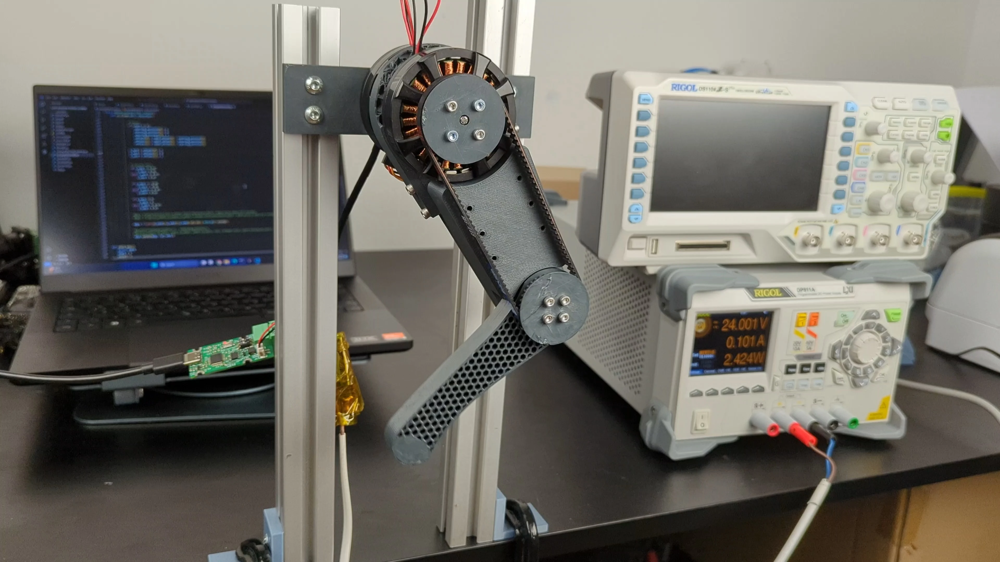
Building the LEG
In this guide we only recommend you the hardware you can use to build the robot you designed. We do not offer already made designs you can build!
This guide will cover:
- How to define the robot leg kinematic chain
- How to execute simple trajectories with the leg
What you will need:
- 2 x spectral micro BLDC
- Wires to connect everything up: CAN wires, Power wires
- 2 x BLDC motors
- 1 x CAN adapter
- 1 x 24V power supply
- A Laptop or raspberry pi

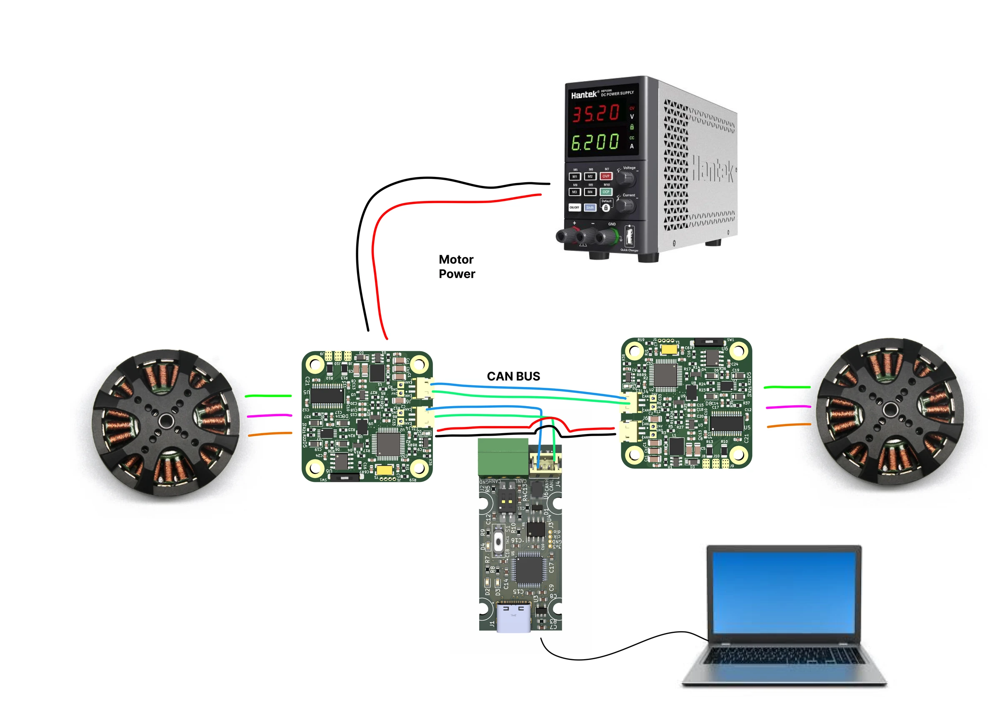
The setup will be the same for any kind of quadruped leg. You will need to follow the diagram above to wire everything up.
- First you need to calibrate your Spectral BLDC drivers with the motors you are using.
- After that change the CAN ids of one of the drivers to CAN 1. You can do it by using UART commands: #CANID 1 and after that #Save
- Now connect CAN adapters CAN bus to one of the drivers and then from that driver connect to the second driver. Make sure that last driver in chain has its CAN termination resistor in "ON" state
- Connect the power to both drivers. (Use daisy chain)
Leg kinematics¶

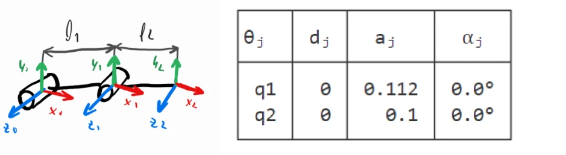
First you will need to assign coordinate frames to your leg model.
We already did it but if you want to learn more on how and why check this Link
Now we will need to find DH (Denavit-Hartenberg) table values. You can learn more on how and why we did it Here!
value l1 is 0.112 meters and value l2 is 0.1 meters. The frame 2 is the end / foot of our leg.
Testing / Calibrating the leg¶
Before running the main code lets check if the comms are working and get initial position values of our robot leg. This code will try to get data from the 2 motors of our robot leg. We are most interested in position data of those 2 motors. Position the leg like shown in this image. Run the leg_calib code and write down position values of each motor.

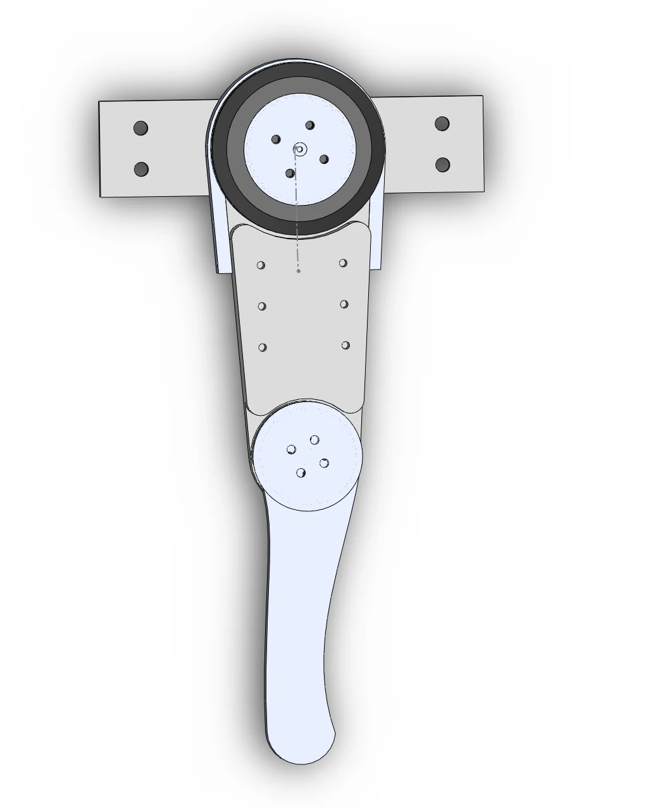
import Spectral_BLDC as Spectral
import time
Communication1 = Spectral.CanCommunication(bustype='slcan', channel='COM6', bitrate=1000000)
Motor = []
Motor.append(Spectral.SpectralCAN(node_id=0, communication=Communication1))
Motor.append(Spectral.SpectralCAN(node_id=1, communication=Communication1))
timeout_setting = 0.00005
while True:
Motor[0].Send_Respond_Encoder_data()
Motor[1].Send_Respond_Encoder_data()
for i in range(1, 7): # Loop 9-1=8 to check for received data
message, UnpackedMessageID = Communication1.receive_can_messages(timeout=timeout_setting)
print(f"unpack {i} is: {UnpackedMessageID}")
# Check if UnpackedMessageID is not None
if UnpackedMessageID is not None:
#print(Motor)
# Update received id index; meaning that we received response from that CAN ID
Motor[UnpackedMessageID[0]].UnpackData(message,UnpackedMessageID)
print(f"Motor {UnpackedMessageID [0]}, speed is: {Motor[UnpackedMessageID[0]].speed}, current is {Motor[UnpackedMessageID[0]].current },pos is {Motor[UnpackedMessageID[0]].position}")
"""
print(f"Motor {UnpackedMessageID[0]}, speed is: {Motor[UnpackedMessageID[0]].speed}")
print(f"Error is: {Motor[UnpackedMessageID[0]].error}")
print(f"Temperature rror is: {Motor[UnpackedMessageID[0]].temperature_error}")
print(f"Encoder error is: {Motor[UnpackedMessageID[0]].encoder_error}")
print(f"Vbus error is: {Motor[UnpackedMessageID[0]].vbus_error}")
print(f"Driver error is: {Motor[UnpackedMessageID[0]].driver_error}")
print(f"Velocity error is: {Motor[UnpackedMessageID[0]].velocity_error}")
print(f"Current error is: {Motor[UnpackedMessageID[0]].current_error}")
print(f"Estop error is: {Motor[UnpackedMessageID[0]].estop_error}")
print(f"Watchdog error is: {Motor[UnpackedMessageID[0]].watchdog_error}")
print(f"Calibrated is: {Motor[UnpackedMessageID[0]].calibrated}")
print(f"Activated is: {Motor[UnpackedMessageID[0]].activated}")
"""
time.sleep(0.5)
Follow a specific trajectory¶
Joint level control involves directly controlling the angles or positions of the robot's individual joints. Each joint is treated as an independent actuator, and the control system sends commands to each joint to achieve the desired angles.
For this example we will not use joint level control but a different method called Task/Cartesian Level Control.
Task or cartesian level control focuses on controlling the position and orientation of the robot's end-effector in a Cartesian coordinate system (X, Y, Z coordinates and orientations). In our robot leg case we don't have Z axes (or orientation) and our end-effector is foot (end of our robot leg).
In this example we will follow a circle trajectory i X,Y plane. We defined that trajectory with our function generate_circle_coords and with parameters:
- center - Tuple representing the center coordinates (x, y) in meters
- radius - Radius of the circle in meters
- speed - Speed of the end-effector in meters per second
- time_var - Elapsed time in seconds

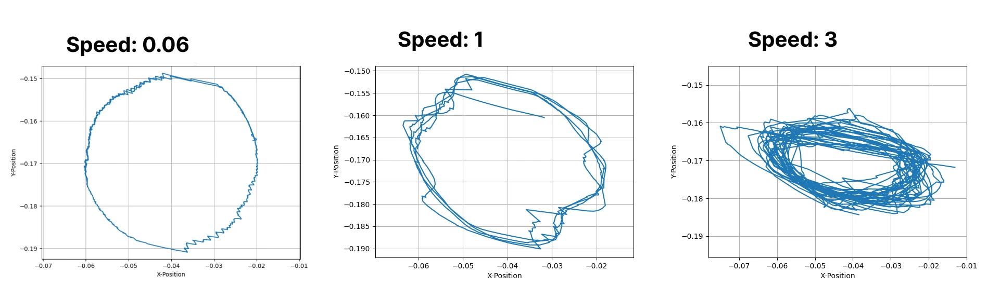
How precise you follow the trajectory depends on the speed you set. With low speeds you can track the circle perfectly. With larger speeds the system can't keep up and overshoots. This is due multiple reaseons like:
- Inertia and Momentum: At higher speeds, the inertia and momentum of the robot leg increase, making it harder to change directions quickly and accurately.
- Centrifugal and Coriolis Forces
- Trajectory Planning and Execution - at higher speeds our trajectory has less points to create a full circle. This is due a fixed rate we send data to our motors eg. every 20ms.
- Feedforward Control: Lack of proper feedforward control can lead to errors in trajectory tracking, as the controller might not anticipate the required accelerations and decelerations.
You can see that from the example with speed set to 1 and 3.
Example code¶
This code will make your robot leg draw the above circles. It might look complicated but it is not. Once you understand how this example works you can use it as a base for building more complicated projects.
import Spectral_BLDC as Spectral
import SourceRoboticsToolbox as SourceRoboticsToolbox
import time
import numpy as np
# We are using v1.1.0
from roboticstoolbox import DHRobot, RevoluteDH, ERobot, ELink, ETS
from math import pi, sin, cos
from spatialmath import *
from oclock import Timer, loop, interactiveloop
import math
from typing import Union, Any, List, Optional, cast
INTERVAL_S = 0.02
Needed_joint_pos = np.array([14000,2430]) # These are the positions we got from calib code
Joint_reduction_ratio = [1, 0.90476190] # Reduction ratio we have on our joints
# Setup your CAN coms. Change the channel to match your CAN adapter
Communication1 = Spectral.CanCommunication(bustype='slcan', channel='COM6', bitrate=1000000)
# Define our motors
Motor: list[Union[Spectral.SpectralCAN,Spectral.SpectralCAN]] = []
Motor.append(Spectral.SpectralCAN(node_id=0, communication=Communication1))
Motor.append(Spectral.SpectralCAN(node_id=1, communication=Communication1))
# Define the joints
Joint: list[Union[SourceRoboticsToolbox.Joint,SourceRoboticsToolbox.Joint]] = []
Joint.append(SourceRoboticsToolbox.Joint(encoder_resolution = 14, master_position=Needed_joint_pos[0], gear_ratio = Joint_reduction_ratio[0], offset = -np.pi/2, dir = 0))
Joint.append(SourceRoboticsToolbox.Joint(encoder_resolution = 14, master_position=Needed_joint_pos[1], gear_ratio = Joint_reduction_ratio[1], offset = 0, dir = 0))
timeout_setting = 0.001
initial = 0
initial_setup = [0,0]
testing = 5
# Initialize position values
position_values = np.array([0.0,0.0])
Motor_values = np.array([0,0])
received_ids = [0,0]
# robot length values (metres)
l = [0.112, 0.1]
alpha_DH = [0,0]
# Create robot model using DH params
L1 = RevoluteDH(a=l[0],d = 0,alpha=alpha_DH[0])
L2 = RevoluteDH(a=l[1],d = 0,alpha=alpha_DH[1])
robot = DHRobot([L1,L2], name="Two link")
prev_pos = np.array([0,0])
speed_var = np.array([0,0])
def generate_circle_coords(center, radius, speed, time):
"""
Generates x,y coordinates for a circle at a given time, considering constant speed.
Args:
center: Tuple representing the center coordinates (x, y) in meters.
radius: Radius of the circle in meters.
speed: Speed of the end-effector in meters per second.
time: Elapsed time in seconds.
Returns:
Tuple containing the x and y coordinates in meters.
"""
# Calculate angular displacement based on speed and time
angular_displacement = speed * time
# Use parametric equations for a circle to generate coordinates
x = center[0] + radius * math.cos(angular_displacement)
y = center[1] + radius * math.sin(angular_displacement)
return (x, y)
def save_xy_data(filename, xy_data):
"""
Saves a list of x,y coordinates to a text file.
Args:
filename (str): The name of the text file to save the data to.
xy_data (list): A list of tuples containing x and y coordinates.
"""
with open(filename, 'a') as file:
for x, y in xy_data:
file.write(f"{x},{y}\n")
# Example usage with update loop (adjust update_interval for your needs)
center = (-0.04, -0.17)
radius = 0.03
speed = 0.8
time_var = 0
# We are using oclock module to generate stable interval defined with INTERVAL_S
timer = Timer(interval=INTERVAL_S, warnings=False, precise=True)
while timer.elapsed_time < 1100000:
t1 = time.perf_counter()
#Motor[0].Send_Respond_Encoder_data()
#Motor[1].Send_Respond_Encoder_data()
Motor[0].Send_data_pack_1(Position = Needed_joint_pos[0],Speed = speed_var[0], Current = 0)
Motor[1].Send_data_pack_1(Position = Needed_joint_pos[1],Speed = speed_var[1], Current = 0)
# Handles data we get from the motors
for i in range(1, 3): # Loop 9-1=8 to check for received data
message, UnpackedMessageID = Communication1.receive_can_messages(timeout=timeout_setting)
#print(f"unpack{i} is: {UnpackedMessageID}")
# Check if UnpackedMessageID is not None
if UnpackedMessageID is not None:
# Update received id index; meaning that we received response from that CAN ID
received_ids[UnpackedMessageID[0]] = 1
Motor[UnpackedMessageID[0]].UnpackData(message,UnpackedMessageID)
#print(f"Motor {UnpackedMessageID[0]}, position is: {Motor[UnpackedMessageID[0]].position}")
unwrapped_position_raw = Joint[UnpackedMessageID[0]].unwrap_position(Motor[UnpackedMessageID[0]].position)
Motor_values[UnpackedMessageID[0]] = Motor[UnpackedMessageID[0]].position
position_values[UnpackedMessageID[0]] = Joint[UnpackedMessageID[0]].get_joint_position(Motor[UnpackedMessageID[0]].position)
if initial_setup[UnpackedMessageID[0]] == 0:
initial_setup[UnpackedMessageID[0]] = 1
Joint[UnpackedMessageID[0]].determine_sector(Motor[UnpackedMessageID[0]].position)
# Generate desired x,y coordinates with respect to time_var
x, y = generate_circle_coords(center, radius, speed, time_var)
# Create a matrix with those x,y coordinates
T2 = SE3(x, y, 0)
# Perform inverse kinematics (get joint data from x,y data)
q1 = robot.ik_LM(T2, q0 = [-0.8,-1],mask = [1,1,0,0,0,0])
Needed_joint_pos[0] = Joint[0].get_encoder_position(q1[0][0])
Needed_joint_pos[1] = Joint[1].get_encoder_position(q1[0][1])
speed_var[0] = ((Needed_joint_pos[0] - prev_pos[0]) / INTERVAL_S)
speed_var[1] = ((Needed_joint_pos[1] - prev_pos[1]) / INTERVAL_S)
print(speed_var)
prev_pos[0] = Needed_joint_pos[0]
prev_pos[1] = Needed_joint_pos[1]
# Process or visualize the generated coordinates (x, y)
#print(f"Time: {time_var:.2f}s, Coordinates: ({x:.4f}, {y:.4f})")
# Update time
time_var += INTERVAL_S
t2 = time.perf_counter()
#print(f"total time is {t2-t1}")
T = robot.fkine(position_values)
xy = T.t
#print(f"{xy[0]},{xy[1]}")
xy_data = [(xy[0], xy[1])] # Assuming xy is a single pair of coordinates
# Save data to a txt file
save_xy_data('my_data.txt', xy_data)
#time.sleep(0.05)
Plot data¶
Script that will plot the data of your leg:
import matplotlib.pyplot as plt
def plot_data(filename):
"""
Plots data from a text file in the format:
x1, y1
x2, y2
...
Args:
filename (str): The name of the text file containing the data.
"""
try:
with open(filename, 'r') as file:
data = file.readlines()
x_data = []
y_data = []
for line in data:
# Split the line based on comma (",")
values = line.strip().split(',')
# Check if there are exactly two values per line
if len(values) != 2:
raise ValueError(f"Invalid line format in file '{filename}': {line}")
try:
x = float(values[0])
y = float(values[1])
except ValueError:
raise ValueError(f"Invalid data type in file '{filename}': {line}")
x_data.append(x)
y_data.append(y)
# Ensure equal x and y scales
plt.axis('equal')
# Create the plot
plt.plot(x_data, y_data)
# Customize the plot (optional)
plt.xlabel('X-Position')
plt.ylabel('Y-Position')
plt.title('Data Plot from ' + filename)
plt.grid(True)
plt.show()
except FileNotFoundError:
print(f"Error: File '{filename}' not found.")
except (ValueError, TypeError) as e:
print(f"Error: {e}")
# Example usage
filename = 'C:\\Users\\xx\\Desktop\\test_code\\env\\Robot_leg\\data_2.txt' # Replace with your actual filename
plot_data(filename)
Gravity compensation¶
Written with the Spectral Micro
This guide was written with the Spectral Micro BLDC driver. STEPFOC uses the same CAN commands and the same Python library, so the same code runs on STEPFOC: where the guide says "Spectral Micro BLDC", read "STEPFOC".
What is Gravity Compensation?¶
Gravity compensation is a fundamental concept in robotic control that helps counteract the effects of gravity on a robot's joints and links. By applying the necessary motor current to balance this torque, the robotic joint can remain stationary at any position without additional external forces.
Why is it so important?¶
In robotics, a significant portion of motor power is consumed just fighting against gravity. Gravity compensation algorithms are standard in all industrial robots and collaborative robot arms because they provide: improved position accuracy and control, smoother motion planning, and more precise force control applications. The gravity compensation algorithm works as a feedforward component to the motor PID control loops, reducing their computational load and improving overall performance.
The Approach¶
In this example, we use the Robotics Toolbox for Python to model a "robotic arm" with a single revolute joint. We compute the required torque using the Recursive Newton-Euler Algorithm (RNEA) and convert this torque into a motor current/torque that the motor controller will command the motor.
The full write-up is the blog post Gravity compensation in robotics. The example code is in Gravity compensation in the Python library's examples, with its bill of materials.
Bilateral teleoperation guide¶
Written with the Spectral Micro
This guide was written with the Spectral Micro BLDC driver. STEPFOC uses the same CAN commands and the same Python library, so the same code runs on STEPFOC: where the guide says "Spectral Micro BLDC", read "STEPFOC".
What is bilateral teleoperation?¶
Bilateral teleoperation is a concept that Involves two-way communication where both the operator and the remote device send and receive feedback. The operator controls the device remotely and receives sensory feedback (such as force) from the device to adjust their actions.
The two grippers are virtually coupled to each other, allowing either to act as the master (the haptic interface) or the slave (the manipulator) in the system. We are not using a force sensor at the grippers but are relying on proprioception.

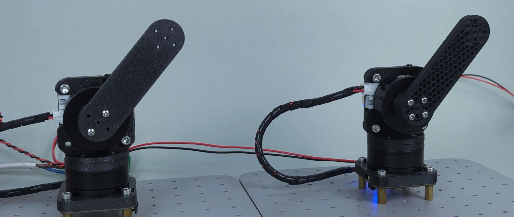
Watch these example videos to get a "feel" of the concept:
What is this used for?
These kind of setup is perfect for: Teleoperation, Imitation learning, Virtual Environments...
The algorithm¶
The magic of this setup is done with these 2 simple formulas.
We got them from amazing Ben Katz paper, creator of mini cheetah quad: Link to the paper
𝜏1,𝑖 = 𝐾𝑝(𝜃2,𝑖 − 𝜃1, 𝑖) + 𝐾𝑑( ˙𝜃2,𝑖 − ˙𝜃1,𝑖) − 𝐾( ˙𝜃1,𝑖)
𝜏2,𝑖 = 𝐾𝑝(𝜃1,𝑖 − 𝜃2, 𝑖) + 𝐾𝑑( ˙𝜃1,𝑖 − ˙𝜃2,𝑖) − 𝐾( ˙𝜃2,𝑖)
Learn more!
You can read more on how it works in our blog post!
What you will need¶
We recommend these items to create a simple test jig:
- 2 x spectral micro BLDC - used for 2 wheels
- Wires to connect everything up: CAN wires, Power wires
- 2 x BLDC motors or SSG48 grippers
- 1 x CAN adapter
- 1 x 24V power supply
- A Laptop or raspberry pi
- UART adapter
Setup¶
Here we are showing you the setup for any 2 motors, for example we are using 2 x ssg48 grippers that are connected in exactly the same setup.
You will need to follow the diagram above to wire everything up.
- First you need to calibrate your Spectral BLDC drivers with the motors you are using.
- After that change the CAN ids of one of the drivers to CAN 1. You can do it by using UART commands: #CANID 1 and after that #Save
- Now connect CAN adapters CAN bus to one of the drivers and then from that driver connect to the second driver. Make sure that last driver in chain has its CAN termination resistor in "ON" state
- Connect the power to both drivers. You can daisy chain it or use 2 separate wires.
The code¶
This code will run on your PC and it will communicate with the drivers from the CAN adapter.
Advanced example
More advanced code that allows communication over UDP can be found here: Link
import Spectral_BLDC as Spectral
import SourceRoboticsToolbox as SourceRoboticsToolbox
import time
import numpy as np
from math import pi, sin, cos
from spatialmath import *
from typing import Union, Any, List, Optional, cast
Needed_joint_pos = np.array([100,100]) # If using gripper you will need to adjust this
Joint_reduction_ratio = [1, 1] # Reduction ratio we have on our joints
Communication1 = Spectral.CanCommunication(bustype='slcan', channel='COM123', bitrate=1000000)
Motor: list[Union[Spectral.SpectralCAN,Spectral.SpectralCAN]] = []
Motor.append(Spectral.SpectralCAN(node_id=0, communication=Communication1))
Motor.append(Spectral.SpectralCAN(node_id=1, communication=Communication1))
Joint: list[Union[SourceRoboticsToolbox.Joint,SourceRoboticsToolbox.Joint]] = []
Joint.append(SourceRoboticsToolbox.Joint(encoder_resolution = 14, master_position=Needed_joint_pos[0], gear_ratio = Joint_reduction_ratio[0], offset = 0, dir = 0))
Joint.append(SourceRoboticsToolbox.Joint(encoder_resolution = 14, master_position=Needed_joint_pos[1], gear_ratio = Joint_reduction_ratio[1], offset = 0, dir = 0))
timeout_setting = 0.001
initial = 0
initial_setup = [0,0]
# Initialize position values
position_values = np.array([0.0,0.0])
Motor_values = np.array([0,0])
speed_values = np.array([0,0])
position_send = np.array([0,0])
speed_send = np.array([0,0])
T0 = 0
T1 = 0
received_ids = [0,0]
Kp = 650
Kd = 0.00550 # 0.0060
Kk = 0.0003 #0.0003
while(1):
t1 = time.perf_counter()
Motor[0].Send_data_pack_1(Position = None,Speed = None, Current = int(T0))
Motor[1].Send_data_pack_1(Position = None,Speed = None, Current = int(T1))
for i in range(1, 3): # Loop 9-1=8 to check for received data
message, UnpackedMessageID = Communication1.receive_can_messages(timeout=timeout_setting)
#print(f"unpack{i} is: {UnpackedMessageID}")
# Check if UnpackedMessageID is not None
if UnpackedMessageID is not None:
# Update received id index; meaning that we received response from that CAN ID
received_ids[UnpackedMessageID[0]] = 1
Motor[UnpackedMessageID[0]].UnpackData(message,UnpackedMessageID)
#print(f"Motor {UnpackedMessageID[0]}, position is: {Motor[UnpackedMessageID[0]].position}")
unwrapped_position_raw = Joint[UnpackedMessageID[0]].unwrap_position(Motor[UnpackedMessageID[0]].position)
Motor_values[UnpackedMessageID[0]] = Motor[UnpackedMessageID[0]].position
position_values[UnpackedMessageID[0]] = Joint[UnpackedMessageID[0]].get_joint_position(Motor[UnpackedMessageID[0]].position)
if initial_setup[UnpackedMessageID[0]] == 0:
initial_setup[UnpackedMessageID[0]] = 1
Joint[UnpackedMessageID[0]].determine_sector(Motor[UnpackedMessageID[0]].position)
# The magic
T0 = Kp*( position_values[1] - position_values[0]) + Kd*(Motor[1].speed - Motor[0].speed) - Kk*(Motor[0].speed)
T1 = Kp*( position_values[0] - position_values[1]) + Kd*(Motor[0].speed - Motor[1].speed) - Kk*(Motor[1].speed)
# There are no delays here, we send as fast as possible!
Support
Getting help¶
- Questions and discussion: the Source Robotics Discord.
- A problem with the driver or the firmware: an issue in the firmware repository; see Report a problem for what to include.
- A mistake on a page of this site: every page ends with a link to edit it and one to report it; see Contributing.
- Orders and hardware: source-robotics.com.
Before you ask, Troubleshooting goes through the common symptoms, and #Info tells
most of what anyone will ask you for.
Report a problem¶
Open an issue in the firmware repository for the driver and its firmware, or in Spectral-BLDC-Python for the Python library. Include:
- The output of
#Info,#Paramand#Error, copied from the terminal. They carry the hardware and firmware version, the motor parameters, the calibration state, the gains and limits, and the errors. - The motor: type, and the
#R,#L,#PPyou entered. - The supply: voltage, and whether it has a current limit.
- What you did and what happened: the commands, in order, and the driver's answers; the calibration log if it is about calibration.
- How it is wired: a photo of the board on the motor and of the cables helps more than a description.
For a problem with this documentation, the Report it link at the end of the page opens an issue in the documentation repository with the page already named.
Contributing¶
This documentation lives in Source-Robotics/STEPFOC-docs. A small fix can be made from the browser: the Edit it on GitHub link at the end of every page opens the page's source, and GitHub turns your change into a pull request. For anything larger, open an issue first.
How the site is built¶
- The pages are Markdown, built with MkDocs and the Material theme; the repository's
README.mdsays how to preview it locally. - The site describes one firmware release, named in
versions.yml. The command IDs, frame lengths, the UART command list and the defaults in the Reference are read from the firmware's source at that release's tag bytools/sync_firmware.py; do not edit those facts in the pages. The descriptions of the commands are indocs/includes/can_commands.ymlanduart_commands.yml. - Every push runs a strict build (a broken link fails it) and the tool tests. A push to
mainpublishes the site under its firmware version with mike.
House rules¶
- Facts come from the firmware. When a page and the firmware disagree, the firmware is right; fix the page, or report the firmware.
- Spell commands exactly as the firmware does, even where the spelling looks wrong.
- Write for someone who has the driver in front of them and wants to do one thing: say what to do, in order, then why.
- Three kinds of boxes: a note, a notice (damage) and a danger (injury). Use them for those, not for emphasis.
- Images: under 2400 px on the long side, with a caption that says what the reader should see.
Licence¶
Text and images: CC BY-SA 4.0: copy, adapt and share them, also commercially, if you credit Source Robotics and share your changes under the same licence. Code: the MIT licence, which covers the code examples in the pages and the site's own code. The Source Robotics name, the product names and the logos are not covered by either. By contributing you agree that your contribution is published under these licences.